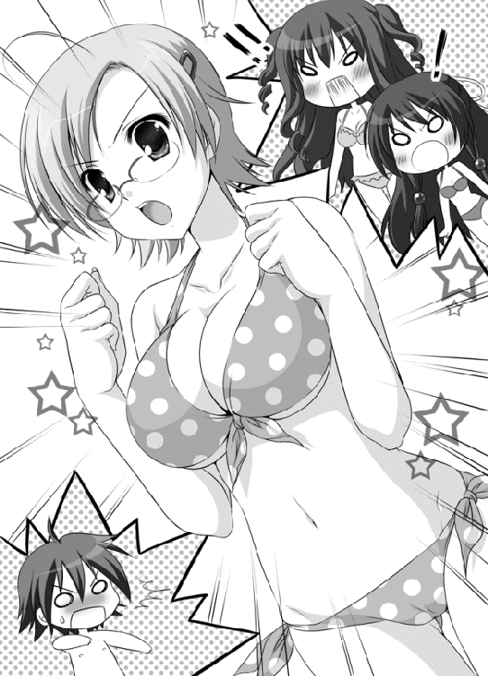

| ツノありっ！ 3<ツノありっ！> (MF文庫J) | |
| 阿智 太郎 & 鳴海 ゆう | |
| メディアファクトリー (2011) | |

ＭＦ文庫Ｊ
ツノありっ！３
夏合宿には△△がつきもの
阿智太郎
口絵・本文イラスト●鳴海ゆう
第一話 夏のプールは絶叫が一杯！
その１
「へ 、伊那峡ランド。やっとオープンしたのね」
、伊那峡ランド。やっとオープンしたのね」
そんな言葉が武蔵野日高の鼓膜を震わせたのは、期末試験も終わり後は夏休みの到来を待つだけの七月の半ば。場所は長野県の信濃市にある天狗山高校二階、風紀委員室だった。
武蔵野日高、ここ天狗山高校に通う高校二年生だ。
ひょろんと背が高く、髪の毛はいつもボサボサ。顔はあくまで人並みで、運動も勉強も下の中といった感じだ。
少々人よりも苦手なものが多いことを抜かせば、ごくごく普通の青年だろう。
だけど、その境遇はちっとも普通でなかったりする。
本物の鬼の少女にひょんなことから気に入られ、その下僕とされてしまったのだ（もちろん本人に拒否権などない）。
そして、前述の言葉を発したのがその鬼の少女、鬼怒川風香なのだから、日高が心中穏やかでなくなるのも仕方のないことだろう。
長い黒髪の紛れもない美少女だった。目鼻立ちだってクッキリしてるし、眉毛の形だって申し分ない。
スラリとしていながらも出るべきところはしっかりと出ている。まるでモデルのような体型だ。座っている姿勢もすこぶるよくて、どこから見ても絵になるといった様子だ。
だけどその正体は鬼。しかも怪力と体の頑丈さには定評のある赤鬼の少女なのだ。
ちなみに、現在只今風紀委員室は風香と日高の二人きりしかいない。普通ならこんな美人と二人きりなんてドキドキしてしまうところだけど、別の意味でいつもドキドキさせられている悲しい日高だ。
「何々、こんな感じになってるの？ ちょっとスゴイじゃないこれ」
無料発行されている地方情報誌を広げ、風香はしきりに感心している。
（なに言ってんだよ！）
口に出して言えないもんだから、日高は心の中で叫んでみた。
（伊那峡ランドがリニューアルオープンしたのなんてもう何か月も前の話じゃないか。しかも俺と一緒に行って絶叫マシーンに散々乗ったんじゃないか）
その時のことを思い出し、日高は喉元にこみ上げてくる酸っぱいものを感じた。
絶叫マシーンは、たくさんある日高の弱点の中の一つだ。ジェットコースターなんかに乗った日には、遊園地中に響く悲鳴を出さずにはいられないのだ。
困ったことに、鬼ってのは基本的に性格がＳだから、そういって下僕に悲鳴を上げさせるのが大好きときている。
（きっと、また俺を伊那峡ランドへ連れてって絶叫マシーンに無理矢理乗せるつもりなんだ。俺の悲鳴を聞いてうっとりするつもりなんだ。そうに決まってる）
すっかり猜疑心の塊のようになっている日高に、風香が声をかける。
「ねえ、日高クン。せっかく期末テストも終わったんだし、息抜きしなきゃね。次の週末に伊那峡ランド行ってみない？ 二人っきりで」
（さあ来たぞ！）
日高は今度もまた心の中で叫んだ。
（絶対に、絶対に行かないからな！）
心の中でそう宣言すると、わざとらしく咳なんぞをして見せる。
「あ、風香先輩。せっかく誘ってくれて申し訳ないんですけど。ちょっと俺、風邪気味で。いや、残念だな」
「風邪？」
風香がジトってした目で日高を見つめてから、急に微笑んだ。
「大丈夫。だったら赤鬼に伝わる特効薬を明日にでも持ってきてあげるから」
「特効薬？」
「そう、蛇と蛙とトカゲとヤモリとイモリとを焼いて潰して粉にしたものにナメクジのねばねばを」
日高はどんどん青ざめていく。実は、蛇も蛙もトカゲもヤモリもイモリもナメクジも嫌いだったのだ。
「すみません、風邪気味なんて嘘です！ 俺、ピンピンしてますから」
呆気なく敗北宣言してしまう。
「分かってたわよ。仮病だってことぐらい」
呆れたように風香が息を吐いた。
「だけど、どうしてそこまで嫌がるの？ せっかく私が誘ってあげてるって言うのに」
「だって、風香先輩。また俺を絶叫マシーンに乗せるつもりなんですよね」
すねた子供のような顔で日高は続けた。
「ジェットコースターとか、ジャイアントフォールとかに乗せて、ぎゃーぎゃー悲鳴を上げる俺を観賞しうっとりするのが目的なんですよね」
「日高クン。それ誤解だから。私が誘おうとしたのは大プール場よ」
「え、大プール場」
「そ、今月に入ってオープンしたそうよ」
プール場ならばやっとオープンという風香の言葉にも頷ける。夏にならなければ開かない施設だ。
伊那峡ランドのプールに最後に行ったのは小学生の時だ。それ以来、すっかりご無沙汰している。
久しぶりに広いプールで遊ぶのも、それはそれで面白そうだ。
なのだけれども！
風香と一緒ってのが問題だった。ただの問題じゃない。超特大の問題だ。
何せ相手は、日高が『うわ！』とか『ギャ』とか言ってるのを眺めるのが大好きな鬼ときている。
（水に溶ける水着なんかで俺を辱めるつもりなのか？ 軽トラックで運んできた塩素をプールにぼしゃぼしゃ入れて、俺に目痛い目痛いってさせるつもりなのか？ もしくはすごいサンオイルを俺に振りかけてこんがり焼いたりするつもりじゃ？）
様々な『ひどい目』を思い浮かべる日高。
そんな様子に、風香が吹き出す。
「馬鹿ね。私がプールで日高クンのこといじめるとでも思ってるの？ そんなこと考えていないわよ。ただ普通にプールで遊びたいだけよ」
嘘をついている風でもないけれど、それでも日高としては及び腰になる。
やっぱりここは遠慮するべきだと日高の中の本能が告げていた。
「あ、風香先輩。俺、プールに入るとすぐに結膜炎になる質なんですよ。せっかくのお誘いなんですけど、プールは誰か別の人を誘って」
適当すぎる大嘘でこの場を逃れようとする日高だったけど、
「そう、それは残念だわ」
風香は心の底から残念そうな顔でため息をつく。
「せっかく、私の水着姿を日高クンに見せてあげようと思ったのに」
（ナヌ!? 水着デスト!?）
日高の小鼻が少しだけ膨らんだ。
普通に考えれば一緒にプールに行くのだ。風香の水着姿だって見れて当然だろう。
風香は正真正銘の鬼だ。日高のことをいたぶって喜ぶ質の悪い赤鬼だ。
なのだけれども！
美人なのだ。
ただの美人じゃない。スタイルだって抜群の掛け値なしの美人なのだ。
そんな風香の水着姿とくれば、垂涎ものなのは間違いない。
さらに、風香の言葉は続く。
「私、水着姿になんか滅多にならないのよ。結婚前の若い娘がむやみに肌をさらすなってお母さんにきつく言われてるから。でも、日高クンが一緒に行ってくれるって言うならちょっとだけお母さんに逆らっちゃおうかしら？」
風香は、少々茶目っ気のある表情で日高を見る。鬼なのにこんな表情ができるなんて反則だと日高は強く思った。
（プール、行こっかな？ レアな風香先輩の水着姿が見れるなら多少ひどい目にあったとしても）
流されそうになる日高だったけど、寸前で思いとどまる。
（落ち着け！ 武蔵野日高！ これは罠だ！ 水着っていうエサで俺を釣ろうとしてるんだ！ 引っかかるんじゃない！）
何度も何度も自分に言い聞かせ、鉄の心を構築する。
（ふっふっふ、風香先輩がもう何を言おうとも俺の心は揺るがない。揺るがないったら揺るがないからな！）
不敵な笑みすら浮かべる日高に、風香の声が届いた。
「実は、もう水着。買ってあるのよ。夏にピッタリの南国模様」
さらに、風香は極めつけの一言を付け加えたのだった。
「ちょっぴり大胆なのをね」
その２
まだ夏休み前だと言うのに、週末の伊那峡ランドの大プール場はそこそこ賑わっていた。
夏休みに入ったらプールは家族連れでごった返すことだろう。それを避けるためか、妙にカップルが多いのが目立っている。
男女に分かれた更衣室を抜けた先、カップルの待ち合わせ場所となっている広場。そこに立てられた案内板の陰に立つ一人の若者がいた。
トランクス型の海水パンツは若葉色。たくましいとは言いがたいひょろっとした体。
「ああ、どうして俺は海水パンツを穿いてこんなところに立っているんだ」
今更ながらそう慨嘆するのは、説明するまでもなく武蔵野日高だ。
いくら気合いを入れて構築した鉄の心も、『ちょっぴり大胆なのをね』の一言であっさりと打ち砕かれてしまったのだ。
「あんな誘惑にあっさり引っかかるなんて、俺はなんて情けないんだ。しかも風香先輩の水着姿を想像して昨晩はなかなか寝付けなかったなんて」
考えれば考える程に情けなくなってくる。
（いっそこのまま更衣室に引き返し、着替えて家に帰ってしまおうか？）
そんなことも考えるけど、実行には移せない。
風香の怒りが怖いってのもあるけれども、彼女の水着姿を見逃してしまうっていう理由もバリバリに強い。
日高を責めることなかれ。彼だって高校二年生の健全な男子なのだから。
だけど、風香は本当に水着に着替えて出て来るのだろうかって不安もあった。
（さっきからいくら待っても風香先輩来ないし。やっぱりからかわれただけなんじゃないか？ 今流行りの放置プレイって奴なのでは？ もしくは期待させるだけ期待させておいて水着姿じゃない風香先輩が登場して俺をガッカリさせるって寸法じゃ）
考えれば考えるほどそんな気がしてくる。
ずんずんと気分が滅入ってくる日高の後ろから、その声は響いた。
「お待たせ、日高クン」
日高は振り向き、そして全身を硬直させた。
そこに立っていたのは、紛れもない水着姿の風香だった。
赤をベースとした南国模様の水着。スタイル抜群の風香がそれを着ているのだから、その眩しいことといったらない。
水着姿はなしかもしれないと思っていただけに、日高の感動も一入だった。
口をポカンと半開きにし瞬きすらせずひたすら水着姿を凝視する日高を、風香が睨む。
「ちょっと、日高クン。あんまりジロジロ見ないでよ。セクハラになるわよ」
「す、すみません。風香先輩の水着姿がキレイだったから」
「ふふふ、ありがと」
満更でもない顔付きでそう言う。
「さ、日高クン。行きましょ」
歩き出す風香の後ろを日高はついていく。
（俺が穿いているのは普通の水泳パンツだ。水に溶けるものとすり替えられた気配もない。見たところ、山盛りの塩素を積んだトラックもない。風香先輩も手ぶらだし、すごいサンオイルでこんがり焼かれる心配もなさそうだぞ）
危惧していたことが、一つ一つ消えていく。
（ひょっとして、風香先輩は本当にプールで遊びたいだけなのか？ この俺と一緒に。つまりそれって......それって......）
『夢と青春の水着デート!!!』
って言葉が、日高の頭の中で燦然と輝いた。
（日頃何かと怖がって風香先輩を満足させているお礼をしようとしているのかも？ いやいやいや、実は風香先輩の中で俺は下僕の位置からランクアップして休日に水着デートをしたい程の相手になっているのでは!?）
勝手な妄想を膨らめる日高に、風香が囁く。
「ひょっとして、私が水着を着てこないんじゃないかって思ってた？ ガッカリした日高クンの顔を見て喜ぶだけじゃないかって」
「実は、少しだけ思いました」
正直に答える日高に、風香が微笑む。
「そんなこと考えるはずないでしょ。第一、せっかくここまで来て日高クンのガッカリ顔だけじゃ私、満足できないわ」
風香は足を止めると、わくわくとドキドキの入り混じった口調で言った。
「やっぱり、日高クンにはたっぷりと絶叫してもらわないと」
「えっ!?」
幸せな妄想時間の終了だった。
「日高クン、一杯一杯で周りがまるで見えてないみたいね。まだ気づいてないみたいだから教えてあげるけど、プール場だってリニューアルされているのよ」
日高は慌てて辺りを見た。そして、風香の言葉の意味を知る。
大プール場のあちこちに無数に点在しているのは、ぐねぐねと曲がったブルーのチューブ達。いわゆるウォータースライダーと呼ばれるものだ。
日高の記憶にある伊那峡ランドのプールにだって、ウォータースライダーの一つや二つは存在していた。だけどそれは高低差も小さく全長も大して長くない本当に子供騙しのようなものだったことを覚えている。
今、日高の視界に飛び込んできているスライダー達は、どいつもこいつも実にハードにぐねぐねとしていた。いや、ぐねぐねを通り越してぐるんぐるんと言ってしまったっていい。
ぐねぐねやぐるんぐるんしていないものもあるけれど、決して楽な相手じゃない。チューブがほとんど垂直に真下に伸びる地獄の直滑降スライダーだ。
絶叫マシーンに気合いを入れるというよく分からないリニューアルコンセプトは、大プール場の方にまで徹底されてしまったようだ。
もちろん、風香は最初からこのことを知っていたのだろう。日高にこの絶叫スライダーを滑らせて悲鳴を上げさせるのがこの水着デートの最大の目的だったのだ。
日頃のお礼でも、ましてや下僕の位置からのランクアップでもなかったのだ。
「あ、風香先輩。俺、よく考えたら今日って親戚の法事でした。急いで戻らないと」
とってつけたっぷりがとんでもない大嘘を吐き、逃亡を試みる日高だけど、風香がそれを許すはずもない。
「ダメ、せっかく来たんだから。日高クンには絶叫スライダーを是非とも全制覇してもらわないと」
日高の腕を風香が両腕で取る。布越しとは言え風香の胸の感触が二の腕に伝わる。
こんな状況ながら、日高の心臓が跳ね上がる。
（ああ、ポニッとした柔らかい感触。これがいわゆる未知との遭遇とゆーものなんだろうか!?）
何て感じに夢心地になっている内に、地上十メートルの高さに上らされていた。絶叫スライダーの滑り口が、日高を飲み込もうと目の前に待ち構えている。
まるで大蛇の大口のように日高には見えた。
ここまで到達するにはそれなりに並んだはずなのに、まるで記憶がない。魅惑の『ポニッ』が時間すらも忘れさせてしまったのだ。
「はい、どうぞ」
係員のお兄さんがさわやかな笑顔で言うけれど、夢心地を卒業した日高の顔は真っ青だった。
「リ、リタイアを」
かすれた声で言う日高を、風香が強引に滑り口へと押し込む。
「じゃ、日高クン。たっぷり楽しんできてね♪」
とびきりの笑顔で見送られ、哀れ日高は大蛇の腹の中へ。
「ぎええええええええええええええええええええええええええええええええええええええええええええええ!!!」
チューブ内に反響した日高の悲鳴が、滑り口から響いてくる。
その悲鳴を全身に浴びながら、風香はうっとりとした表情で呟いた。
「ああ、やっぱり日高クンの悲鳴は最高ね。ゾクゾクしちゃうわ」
その３
大プール場の一角に、広いフードコーナーが設けられていた。日避けのパラソルがいくつも立てられて、その下には白いテーブルとイスが設置されている。
辺りにはいくつもの売店が並んでいて、ジュースにアイスクリームにかき氷、焼きそばにカレーライスといった夏のメニューを楽しむことができる。
プールで遊び疲れた体を休める格好の場所だった。
そんなフードコーナーの一角にて、日高はテーブルに突っ伏しぐったりとしていた。
どうひいき目に見たって、残りＨＰは一割をきっているだろう。
「ぐねぐね怖い、ぐるんぐるん怖い、青いトンネルが、青いトンネルが」
青ざめた顔でブツブツと呟く日高。かと言って情けないとは責められない。風香に連れられてほぼすべての絶叫スライダーを制覇させられたのだから。
「本当、最高だったわ」
向かい側の席についた風香がほくほく顔で言う。
「とくにあの直滑降のスライダーの時の日高クンの悲鳴なんて鳥肌物だったわ。録音して毎晩聞きたいぐらいよ」
ヘロヘロの日高は、文句を言う気にもなれなかった。
「さすがに疲れたでしょ。何か飲み物でも買ってくるわ。もちろんおごりよ。私を満足させてくれたお礼。さ、何がいい？」
イスから腰を持ち上げ風香が尋ねる。だけど返事はない。
「じゃ、コーラでいいわよね。日高クン、学校の自販機でよく買って飲んでるから」
勝手にそう決めると、風香が売店へと歩いていく。スタイル抜群の風香の水着姿は、フードコーナーにいる男達の視線を集めまくっていた。
「なあ、見たか？ スゲーよな。あの美人」
「レベル高いにも程があるぜ」
「にしても、彼氏の方は何だありゃ？ まるで釣り合ってないじゃねーか」
ヒソヒソと囁かれる。
（彼氏なんかじゃありません。下僕です。別にデートしに来たわけじゃなく絶叫スライダーを無理やり制覇させられに来たんです。すべては俺の悲鳴を聞いてうっとりしたいがために）
心の中でそう説明する。
（でも、でも絶叫スライダーはもう制覇したし。これで終わりにしてくれるよな。ジュース飲んだら、この地獄から解放してくれるよな）
だけど、待てよと思い直す。
（風香先輩、あんなに喜んでたじゃないか。まだ時間もあるし、ひょっとしたらもう一度最初から滑りなおせって言うかもしれない。しかも、しかもしかもしかも、今度は頭から突っ込めとか）
普通に滑っても絶叫ものだったのに、頭から滑れなんて言われたらどうなるだろう？ 失神した挙句、着水したプールから浮かび上がってこられない可能性だってあるんじゃないか？
悪い方悪い方へと考えてしまう。
「に、逃げなきゃ」
かすれた声で、日高は呟いた。
「俺が生きて夏休みを迎えるためにも！」
日高が生き延びる決意を固めている頃、風香はフードコーナーの売店で並んでいた。
（絶叫スライダーなんて宣伝に書いてあったけど、ただ滑るだけだしそんなに大したことないんじゃないかって心配してたのよね。でも来て良かったわ。日高クンがあんなにもハッスルしてくれるなんて）
大いに悦に入っている。
（これで終わりにするんじゃもったいないわね。日高クンもまだ頑張れそうだし、もう一度最初から滑りなおしてもらおうかしら？ 今度はいっそ頭から突っ込んでもらうとか？）
日高の想像どおりに恐ろしいことを考える風香。
（そのためにも、しっかり腹ごしらえしておいてもらわなくっちゃ）
そんなことを考えているうちに、自分の番がやって来る。
「すみません、コーラとオレンジジュースをＭサイズで。それからフライドポテトと焼きそば（男の子なんだから、日高クンそれぐらい食べるわよね）。あ、たこ焼きも一緒にお願いします」
細かい小銭を払う必要はない。プール入場時に渡されたリストバンドのバーコードを読み取ってもらえばそれで終わり。後は着替えてプール場を出る時にまとめて支払えばいいというシステムなのだ。
売店のお姉さんにバーコードを読み取ってもらい、商品が用意されるのを待っていた風香は、売店の壁に貼られた一枚のポスターに気付く。
『カップル限定 ドキドキ爆発スライダー！』
水着姿のカップルの写真が写っていた。彼氏が彼女を後ろから抱きしめた状態でゴムボートに乗っている。あくまで小さなゴムボートだから、必然的に体は密着することになる。
説明を読むと、密着した状態でチューブ内を進むというスライダーのようだ。ゆったりした流れのスライダーで全長も長く時間もたっぷり、甘い時を過ごすことができるというものらしい。
「ドキドキ爆発スライダー......ね」
呆れたように呟く。
「下らないスライダーもあるものだわ」
そのまま記憶の片隅にでも追いやってしまおうとするけれど、待てよと思い直す。
（後半戦のモチベーションを上げるためにも、少しぐらいサービスしてあげてもいいのかもね）
「お待ちどうさまでした」
ジュースとコーラの入った紙コップが二つ。焼きそばとフライドポテト、そしてたこ焼きの乗ったトレイを受け取り、風香は日高のいる席へと向かう。
（日高クン、あんなスライダーに私と二人で乗ったらどうなるかしらね？）
鬼というものは基本的に独占欲が強い。気に入った相手の普段見られない表情を見るのがたまらなく楽しいのだ。怯えた顔、驚いた顔、顔を真っ赤にしてドギマギした顔もしかりだ。
「うふふふふ」
微笑みながら席へと到着する風香だったけど......。
そこに日高の姿はなかった。
「あれ？」
席を間違えたのかと辺りを見渡したけど、やっぱり日高はいない。
叩きつけるようにトレイをテーブルに置くと、風香は実に剣呑な声を絞り出す。
「日高クン......逃げたのね」
ふつふつと怒りがこみ上げてくる。
「せっかく、せっかく私がサービスしてあげようと思ってたのに......」
そんな風香の周りに、少々軽そうな若者達が集まってくる。
「どうしたの？ ひょっとして彼氏帰っちゃったとか？」
「こんな美人を置いて帰るなんて、ひでー彼氏」
「ダイジョーブ、オレ達が一緒に遊んであげるから」
怒っている赤鬼に声をかけることほど愚かなことはない。事実、若者達は風香に片手で軽々と担ぎ上げられ手近なプールに投げ込まれたのだから。
「彼氏じゃないわ！ 下僕よ！」
小さく叫んでから、風香は瞳をギラつかせた。
「逃がさないわよ！ 日高クン！」
さらに大いなる決意を込めて宣言した。
「ドキドキ爆発スライダー、一緒に乗るんだからね！」
その４
一方その頃、日高が何をしていたかとゆーと。
風香の予想どおり、逃げていた。残り少ない体力を振り絞り、更衣室目がけて全力疾走中だった。
「絶叫スライダー巡りをもう一巡なんてやらされた日にゃ、俺は絶対昇天する！」
悲痛な声を上げながら走る日高。
風香が普通のデートっぽくしてくれようとしていることも、カップル限定のちょっぴりお色気スライダーに一緒に乗ってくれようとしていることも日高には知る由もなかった。
度重なる絶叫で体力は残り少ない上に、照りつける夏の太陽の光。何だか頭がクラクラして足元がおぼつかない。視界だって朦朧とする。
それが不幸な事故のきっかけだった。南国樹のオブジェを曲がったところで、日高は歩いてきた人物と軽く正面衝突してしまったのだ。
「うわっ！」
悲鳴を上げ転ぶ日高。非は全面的に日高にあるから、反射的に謝る。
「す、すみませんでし」
た！ を言い終わるより前に、日高の首が荒々しく掴まれ、そのまま引っ張り起こされる。
「小僧。プールサイドでは走らないって小学校で習わなかったのか!?」
そこらのチンピラの声じゃない。野太い男の声だ。
モヤの晴れた視界で見たのは、いかつい顔付きの中年男だった。濃い色のサングラスをかけ、髪の毛はジェルでギトギトのオールバックだ。
ガラ模様の海水パンツを穿き、派手なシャツを羽織っている。その下に見えるのは屈強な肉体だった。
さらに、別の男の声も聞こえる。
「藍奈お嬢様、お怪我は？」
（藍奈お嬢様だって!?）
頭のクラクラも吹っ飛ぶ名前の登場だった。
（どうか名前が同じってだけであって人違いでありますように！）
思いつく限りの神に祈りを捧げゆっくりと視線を動かす。
残念ながら、祈りは届かなかった。
「大騒ぎしないで、大丈夫ですわ」
そう答えながら立ち上がるのは、少しクセのある長い髪の毛が特徴的な少女だった。ハーフだろうか、彫りの深い気品ある顔立ちをしている。風香とはまた違ったタイプのスーパー美少女だ。
胸元フリルの青ビキニ。パーカを軽く羽織っている。つばの広い白い日避けの帽子がよく似合っていた。
彼女の名前は百目鬼藍奈。長野市にある青蘭女学院の生徒会長。
その正体は、風香と同じく鬼。ただしこちらは由緒正しい青鬼の家系の少女だ。
実は日高は藍奈と浅からぬ因縁がある。
藍奈から、『いつかわたくしのモノにいたしますわ！』宣言を受けていたりするのだ。
（よりにもよって、こんなところで藍奈さんと出くわしてしまうなんて......）
必死に赤の他人を演じようと片眉を吊り上げ上唇と下唇を左右にずらし変顔作りに全力を投入するも、この理知的な青鬼娘がそんなものに引っかかってくれるはずもなく。
「あら、日高さんではありませんの」
藍奈が目を細め微笑んだ。
藍奈の知り合いだと分かり、男が日高の首から手を離す。
「藍奈お嬢様、お知り合いですか？」
「ええ、この方は武蔵野日高さん。風香さんの下僕の方ですわよ」
風香という名前の登場に、さきほどのサングラスの男二人が色めき立つ。
「鬼怒川風香の下僕！」
「丁度いい、締め上げて鬼怒川風香の弱点でも聞き出してやろう」
男二人の頭からニョッキリと角が生える。一人は一本、もう一人は二本の角だ。口からは牙が突び出し、指先から鋭い爪が伸びる。
藍奈の家は、青鬼社会を牛耳るマフィア組織、関東王牙会だ。赤鬼社会を牛耳る風香の家、極道で名をはせる鬼怒川組とは古くから怨恨と確執の嵐が吹き荒れている。
王牙会の構成員であろう男達が興奮するのもいたしかたないことだろう。
「大人しくしろ！」
「知っていることをありったけ吐いてもらうぞ！」
日高に飛びかかろうとする二人だったけど、
「止めなさい!!!」
藍奈が鋭く叫ぶ。その瞳が一瞬、金色に輝いた。
男二人はまるで見えない巨大な手で撮み上げられるかのように空中へと持ち上げられる。でもって、手近なプールへと叩き込まれた。
青鬼固有の特殊能力である念動力だ。しかも藍奈のそれは青鬼の中でもピカ一の力だと前に風香から聞いたことがある。
「ぶはっ！」
の二重奏を響かせて水面から頭を出す男達に、藍奈は腰に手を当てぴしゃりと言う。
「下僕を締め上げてウィークポイントを聞き出そうなんて、王者たる関東王牙会の一員がすることではありませんわよ！」
一呼吸置いた藍奈は、妙に艶っぽい瞳で日高をチラリと見てこう付け加えた。
「それに、日高さんはいずれわたくしの下僕となる人間。締め上げていいのはこのわたくしだけですわ」
日高は、助けてくれた藍奈に一瞬とは言え感謝していた自分をグーで殴りたい気分になった。
「ここからはわたくし一人で行動しますわ。あなた達は車で待機しているように」
「いや、しかしそれは......」
いまだプールに浸かったままの二人が少々焦った声を出す。
「ここは赤鬼の勢力圏内。藍奈お嬢様をお一人にするわけには」
「下僕がいるということは、鬼怒川風香がいる可能性もあります。万が一にも襲われでもしたら」
必死に訴える二人を、藍奈は冷ややかに見下ろす。
「あなた達、ひょっとしてわたくしが風香さんに負けるとでもおっしゃってますの？ だとしたらひどい侮辱ですわ」
淡々とした冷たい口調。だけど心臓をわし掴みにされるような迫力だ。
「これは命令です。今すぐ車に戻ってわたくしが戻るまで待機してるように。いいですわね」
藍奈の能力は念動力だけではない。鬼の男を虜にしてしまう邪眼の力も保有している。
そのことは二人も知っているのだろう。男達は諦めたように脱力した。
二人がプールから上がり去っていくのを確認してから、藍奈は日高へと顔を向ける。
「改めましてこんにちは。日高さん」
藍奈の笑顔に、日高は引きつった笑顔を返すのがやっとだ。
すごく魅力的だけど、藍奈は鬼。しかも自分を下僕としようとしている青鬼なのだから。
「こ、こんにちは。藍奈さん。奇遇ですね」
わざとらしく頭の後ろに手を回しとってつけたような言葉を吐く。
「藍奈さんも期末テストの息抜きで遊びに来たんですか？」
「残念ながらそうではありませんの。お父様のお仕事のお手伝いですわ」
やれやれと藍奈がため息をつく。
「この伊那峡ランドの買収計画が、百目鬼グループで持ち上がってますの。で、どれぐらい賑わっているかの視察ですのよ」
関東王牙会には、巨大企業としての顔もある。そういった買収計画も不思議ではない。
「正直退屈でたまりませんでしたけど、こうやって日高さんと会えたんですもの。ここからは楽しめそうですわ」
軽く舌なめずりをしてから、藍奈は日高が一番恐れる言葉を口にする。
「パンフレットで見たのですけど、このプールの目玉は数々の絶叫スライダーだそうですわね。日高さん、端からトライしてみません？」
獲物を前にした獣のように、瞳がギラついている。
色や能力の違いこそあるが、本質は風香と同じ鬼。日高の『うわ』とか『うぎゃ』といった悲鳴を期待しているのだ。
「え、遠慮します！ 俺、急いでるのでまた！」
早口にそう言い、その場から逃げ出そうとする日高。
だけどその腕に藍奈は自分の腕を素早くからませた。
「そうおっしゃらずに。わたくし、ちゃんと日高さんを上までエスコートいたしますから」
香水か何かだろうか？ ほんわかとしたいい香りがする。
さらに厄介なことに、藍奈の胸の感触が日高の二の腕に伝わってきた。
風香の感触を『ポニッ』とするならば、藍奈の感触は『ムニッ』といったところだ。ボリュームも風香にちっとも負けていない。互角と言えよう。
日高がまた夢見心地になってしまうのも仕方のないことだろう。
「さ、行きましょう。日高さん」
藍奈が日高の腕を引っ張り向かうのは、伊那峡ランド大プール場が誇る絶叫スライダーＮＯ８、ゼログラビティースライダーだ。
地上25メートルから一気に滑り落ちるこのスライダー。途中にあるコブ部分では体が宙に浮きちょっとした無重力気分を味わえるというのが売りだったりする。
つい十数分前に日高は体験したばかり。その絶叫度合いはかなりのもの。意識だって飛びかけたほどだった。
（今度は本当に飛ぶかもしれん。でもって、ゴールのプールに沈んで二度と浮かんでこられないかも......）
必死に逃れようとするのだけど、『ムニッ』という感触が邪魔をし全身に力が入らない。もっとも、全力で振りほどこうとしたところで無理だったろうけど。赤鬼と比べれば体力や腕力に乏しい青鬼でも、それは人間の比ではないのだから。
赤鬼に比べると腕力や体力に優れていない青鬼だけど、それでも人間よりははるかに強いのだ。
哀れ日高がスライダーの滑り口へと続く天国（日高にとっては地獄）への階段を上り始めようとした時だった。
「待ちなさい!!!」
そんな声と共に、水着美女が二人の前に立ちはだかる。
言うまでもなく、日高を追いかけていた風香だ。
「藍奈。まさかこんなところであんたと会うなんてね」
敵意むき出しで風香が言い放つ。今にもその頭から角を突き出しそうだ。
「わたくしも、まさかこんなところに風香さんが来ているなんて思ってもみませんでしたわよ。しかも水着姿で」
藍奈が意外そうな顔をする。
「風香さん、よく入場できましたわよね。背中にお絵かきしてある方は駄目なのではなくって」
「わ、私の背中はキレイなままよ！ お母さんや他の組員とは違うんだから！」
風香はクルリと背中を見せる。竜もいなければ般若や不動明王だっていない。言葉通りキレイな背中だ。
「それよりも藍奈！ あんた私が目を離したスキに、日高クンを横取りしようってつもりでしょ？」
「あら、それは言いがかりってものですわよ。風香さん」
藍奈も藍奈で不敵に言い返す。
「わたくしは偶然日高さんと出会っただけですわ。日高さんが一人でいましたから一緒に遊びませんかと誘ったまでですのよ」
眼光と眼光がぶつかり合い、バチバチと火花を散らすようだった。
相容れない赤鬼と青鬼。お互いの家と家との確執。それらをさっぴいたとしても二人は仲が悪い。幼い頃からしょーもないいざこざが積み重なっているから。
「そうそう、日高さん必死な顔でプールサイドを走ってましたわ。きっと風香さんと一緒にいるのが嫌で逃げ出しましたのね」
嫌味っぽくそんなことを言う。
「そ、そんなことどうだっていいじゃない！」
逆ギレっぽく風香が叫ぶ。
「とにかく、日高クンは私とプールに来てるの。黙って返しなさい！」
「いいえ、それはできませんわ。だって日高さんがあまりにお気の毒ですもの」
藍奈は藍奈で、日高に絡めた腕にさらに力を込める。
（風香先輩の元に戻っても絶叫スライダー。このまま藍奈さんと一緒にいても絶叫スライダー。どっちにしたって俺の運命は決まってるんだ）
行くも地獄留まるも地獄というこの状況では、日高はもう成り行きに身を任すことしかできない。
人生を諦めたような顔つきで為されるがままの日高に、風香はイライラを募らせた。
（もう、日高クン。どうして藍奈の手なんか振りほどいて私の所に戻ってこないのよ！ 私にサービスして欲しくないの？）
だけど、すぐにその理由も思い当たる。
（そっか、あのことはまだ言ってなかったわね。だったら教えてあげるまでよ）
コホンと咳払いをすると、風香は日高を見つめる。
そして、高々と言い放った。
「日高クン、喜びなさい。私、キミとドキドキ爆発スライダーに乗ってあげるつもりなのよ」
............。
残念ながら日高は喜べなかった。
ドキドキ爆発スライダーがどんなものなのかまるで知らなかったのだ。喜びようがない。
（ド、ドキドキ爆発スライダーだって！）
これまで滑らされてきたのが絶叫スライダーばかりだから、どうしてもその系統で考えてしまう。
（一緒に乗るってことは、二人乗りのスライダーか。しかもドキドキが爆発って言うと......）
まるでアマゾン川を探検するかのようないかついゴムボートに乗せられる日高と風香。係員の手によって一気にチューブ内へと押し込まれる。そこはまるで渓谷を流れる激流だ。右に左にと恐ろしいまでにゴムボートは暴れまわる。
ゴムボートが跳ね上がる度に悲鳴を上げる日高を、一緒に乗った風香は大喜びで眺める。
『ああ、やっぱりここは特等席ね。さあ、日高クン。もっともっとドキドキを大爆発させなさい！ そう、口から心臓が飛び出すぐらいにね!!!』
とまあ、そんな感じのスライダーを日高は想像し背筋を凍らせた。
ちなみに、勘違いしているのは日高だけではなかった。
「ドキドキ爆発スライダー。どんなのか知りませんけど、面白そうなネーミングですわ」
概ね日高が想像したようなスライダーを藍奈も思い浮かべ、聞こえてくるであろう日高の悲鳴を夢想しうっとりとする。
「でしたら日高さん。そのドキドキ爆発スライダー、わたくしと一緒に乗りません？」
「冗談じゃないわ！」
風香が声を大きくする。
「日高クンは、私と一緒にドキドキ爆発スライダーに乗るの！ どうしてあんたがしゃしゃり出てくるのよ！」
風香が日高へと詰め寄った。
「日高クン、キミは私と一緒にドキドキ爆発スライダーに乗りたいわよね!?」
「いいえ日高さん。あなたはわたくしと一緒にドキドキ爆発スライダーに乗りますわよね？」
藍奈も藍奈で、穏やかながら有無を言わせぬ口調で日高に問う。
超ド級の美少女二人に、一緒にドキドキ爆発スライダーに乗らないかと迫られる。
ドキドキ爆発スライダーがどんなものなのかを知っている者から見たら、ハルマゲドン級に羨ましい光景だった。
だけど、完全に誤解している日高にとってはこの世の終わりを体感しているようなもの。
日高ができることは、心を閉ざすことぐらいだった。
魂の抜けたような顔で呆ける日高。いくら二人が問いかけても返事すらしない。
「仕方ありませんわね。風香さん、こうなったらわたくし達で決めません？」
「いい度胸じゃない藍奈」
風香は拳をバキバキと鳴らした。
「どっちが日高クンとドキドキ爆発スライダーに乗るのか？ ついでに赤鬼と青鬼、どっちがより強い鬼なのか？ ここで白黒つけてあげるわ」
臨戦態勢の風香に、藍奈はやれやれと首を振る。
「風香さん、その何かとすぐに拳に頼ろうとするクセ、どうにかした方がいいと思いますわよ。まあ、それが赤鬼というものですから仕方がないとは思いますけど」
藍奈が肩をすくめて見せる。
「少し冷静になられて。こんなところでわたくし達が戦ったらどんなことになるのかお分かりでしょう？」
赤鬼の名門、鬼怒川家の娘と、青鬼の名門、百目鬼家の娘との戦い。力の質は違えども、それぞれ強大な戦闘能力を保有している。
大プール場は、阿鼻叫喚の地獄と化すだろう。
それに、基本的に鬼はその正体を隠さなきゃならない決まりがある。鬼のことを忘れさせる薬もあるのだけど、あまりに目撃者が多すぎたら一人一人に飲ませるのも困難になる。
さすがの風香も、藍奈の言葉の正しさに奥歯を噛む。
「じゃあ、河岸を変えましょ。幸いここ長野県は人のいない山には事欠かないわ」
「そうではなくて、もっと別の方法にいたしません？」
含みのあるような笑顔で、藍奈が続ける。
「たまたまなんですけど、このプールで今日ちょっとしたイベントがあるらしいの」
「イベント？」
「ええ、夏を盛り上げるスペシャルイベントだそうですわ。それに参加し、どちらか優勝した方が、日高さんとスライダーに乗る。それでどうです？」
売られたケンカは借金してでも買うのが赤鬼の心情だ。ましてや、売ってきたのが青鬼ともなれば尚更だった。
「夏を盛り上げるスペシャルイベントね。面白いじゃない。受けて立つわよ！」
藍奈に指を突き付けると、高らかに優勝宣言する。
「スイカ割りでもビーチバレーでも暑さ我慢大会でもかき氷の早食い大会だとしても！ 何でも来いだわ！ 絶対に優勝して見せるんだから！」
その５
伊那峡ランド大プール場の一角、特設ステージ前は、たくさんの若者達で賑わっていた。
設置されたパイプ椅子では足りず、人で溢れかえっている。
鉄筋で組まれたステージ裏にて、風香は不条理をこれでもかと込め叫んだ。
「よりにもよってどーして水着コンテストなのよ！」
そう、本日予定されていたイベントは、水着コンテストだったのだ。現に、ステージ裏には十数名の水着娘達が集っている。
すでにみんな受付を済ませ、エントリー番号の入ったワッペンをつけている。
ちなみに、風香の番号は⑦番。藍奈は⑥番だった。
「風香さん、そろそろ文句を言うのは止めていただけません？ 皆さんのご迷惑ですわよ」
実に落ち着き払った様子でパイプ椅子に腰をかけ、藍奈は言った。
「それに、内容も聞かずにＯＫした風香さんが悪いんですのよ」
それを言われてしまうと風香としても何も言い返せない。
「どうしてもお嫌なら、辞退してもかまいませんのよ。もっとも、その場合は日高さんとドキドキ爆発スライダーに乗るのはわたくしということになってしまいますけど」
「自意識過剰じゃない藍奈。あくまで優勝した方がって話でしょ？ 私が辞退したって、あんたが優勝しなかったら権利は無効よ無効！」
妙な言いがかりをつける風香だけど、
「もちろん、優勝するつもりですわよ」
平然とそう答える。
風香は改めて藍奈の水着姿を観察した。
（認めるのは悔しいけど、なかなかのものね）
女性の風香でさえ、藍奈の白い肌と抜群のプロポーションには感心してしまう。
スイカ割りやビーチバレーや暑さ我慢大会やかき氷早食い大会といったものならばけっこう自信のあった風香だけど、水着コンテストで自分が優勝できると言い切るほどに自惚れてはいない。
だけど、このまま戦わずして負けるのは赤鬼としては納得できなかった。ついでに言えば、女としても。
「辞退なんかしないわ。受けて立つわよ」
ようやく決意を固め、強く頷いて見せる。
「それでこそ風香さんですわ」
藍奈が微笑んだ直後だった。わっと言う歓声が響いてくる。どうやら水着コンテストが始まったようだ。
スタッフの指示で、風香らもステージ上へと向かう。現れた水着娘達に、観客はさらに沸いた。
ＭＣ役のスタッフの案内で、一人一人前に出て自己紹介をしていく。
基本的な喋る内容は事前に知らされてはいる。
名前、年齢、それから趣味や特技。あとはＭＣ役のスタッフの質問に二、三答えるのだ。
このコンテストの勝敗は、観客の投票によって決められることになっている。いかにここで自己アピールできるかが鍵だった。
やがて、風香の隣に立つ藍奈の番となった。
臆することなく藍奈はステージ中央へと歩み出る。気品すら感じさせる優雅な足取りだ。それだけで観客からはため息と歓声にも似た声が漏れる。
「それでは、自己紹介をどうぞ」
促された藍奈は、歯切れよく喋り出す。
「百目鬼藍奈、十七歳。高校生です。趣味はクラッシック音楽鑑賞、特技はマジックですわ」
「マジック？ 手品ですか？」
「はい、皆さんにお見せしようと準備をしてきました」
「それは楽しみですね。是非お願いしましょう」
事前に藍奈が告げてあったのだろう。スタッフの一人がやって来ると藍奈に折りたたまれた緑色のビニールのような物を渡していく。
「いけない、膨らめておくのを忘れてしまいましたわ。少しだけお待ちくださいね」
藍奈はビニールのような物に口を付けると、中に息を吹き入れ始めた。時折苦しそうに呼吸しながらも、それでも最後まで諦めることなく膨らめる。スイカ模様のビーチボールが完成だった。
「それでは、始めますわ」
微笑むと、藍奈は胸の前にビーチボールを突き出した。そして、ゆっくりと手を離していく。
普通ならビーチボールが落ちるところだけど、あら不思議の摩訶不思議。ビーチボールは宙に留まったままだった。
歓声と拍手が、会場を沸き立たせる。
「良かったです、今日はうまくいきましたわ」
満足そうに微笑む藍奈の斜め後ろで、風香は心の中で呟いた。
（何がマジックよ。あんなの青鬼の力をちょっと使っただけじゃない。反則よ反則）
だけど、底知れぬ脅威というものも感じる。
（最初から膨らめたビーチボールを用意しておけば良かったのに、あえて観客の前で膨らめて見せる。しかも、わざと苦しそうな顔までしてよ）
膨らめておくのを忘れるドジな部分、ビーチボールを膨らめるのにも苦労するか弱さ、だけど諦めないひたむきさ。
そういったものを一度にアピールしきった藍奈の計算高さだった。
（マズいわね。適当に自己紹介して終わりにしようと思ってたけど、それじゃ足りないわ）
作戦を練り上げる間もなく、藍奈のアピールタイムが終了する。
「それでは、藍奈さんありがとうございました」
これまでで一番の歓声と拍手で見送られ、藍奈が風香の隣へと戻ってくる。
「うふふ、次は風香さんの番ですわね。期待していますわよ」
勝ち誇ったような顔で、そう囁いた。
負けず嫌いの赤鬼としては、俄然闘志が燃え上がるところだった。
「続いて、⑦番の方」
（えい、女は度胸よ！）
風香は自分に気合いを入れると、前へと歩み出る。
「鬼怒川風香、十七歳の高校三年生。趣味は......」
女の子アピールでもしようかと、編み物と口にしようとするけど自重する。金棒なら自信あるが、編み棒なんて握ったこともないのだ。
「趣味は絶叫マシーンにホラー映画、お化け屋敷なんかも大好きです！」
正しく言えば、『そこで響く日高の絶叫を聞くのが好き』なのだが、些細な部分は割愛する。
「それから特技は、痴漢撃退です」
淀みなく説明する。
「痴漢撃退!? これはまた怖いね」
ＭＣ役のスタッフが目を丸くした。
「試しにやってもらってもいいかな？」
「どうぞ、お好きなように」
「そっか、それじゃ」
冗談交じりに、ＭＣ役のスタッフが風香に手を伸ばす。
次の瞬間、スタッフの体が宙を舞っていた。風香に軽く投げ飛ばされてしまったのだ。
大きく放物線を描いて飛んでいったスタッフは、飛び込み用のプールに頭からボッチャンと落下する。
「あらあら、風香さん。そんな凶暴っぷりをアピールしたら駄目駄目ですわよ」
風香の評価だだ下がりを確信しほくそ笑む藍奈だったけど......。
「スゲ―――！ 最強お姉さんカッケ―――！」
「俺も投げ飛ばされたい！」
観客席からは藍奈の時に勝るとも劣らない大歓声が起こる。
「なっ!?」
茫然とする藍奈の隣へ、風香がゆっくりと戻ってくる。
「どう、藍奈。私、まあまあうまくやったんじゃない？」
得意気に言い放つ風香に、藍奈は悔しそうに奥歯を噛みしめたのだった。
その６
「なあ、⑥番の娘と⑦番の娘。ズバ抜けてレベル高くないか？」
「ああ、優勝はどう考えたってあの二人のうちどちらかで決まりだろう」
辺りで囁かれるそんな声を、武蔵野日高は実に暗澹たる気持ちで聞いていた。
観客席の後ろの方に日高はいた。周りと比べズバ抜けてテンションが低いのは仕方がないと言うものだろう。
風香と藍奈、どちらか優勝した方と、『ドキドキ爆発スライダー』に乗らなければならないのだから。
それが、世にも恐ろしい絶叫スライダーと思い込んでいる日高にとっては、風香と藍奈の水着姿を眺めて喜んではいられないのだ。
当初は、『誰か別の人が優勝してくれたら俺は助かるのでは？』といった期待を抱いていた。
だけど、こうも観客の心をガッチリと掴んでしまった二人を目の当りにしたら、そんな希望もはかなく消える。
もちろん、逃げるという選択肢を思いつかなかったわけじゃない。だけど、藍奈の命令で配下の青鬼が少し離れたところから日高を見張っているのだ。どうせ逃げたところで連れ戻されるのがオチだろう。
（今日が俺の命日になるかもしれないぞ）
半ば本気でそんなことを考える日高の耳に、その声は聞こえてきた。
「冷たいアイスキャンディーはいかがですか？ ソーダ味、パイン味、グレープ味、レモン味、バナナ味、スイカ味だってありますよ」
クーラーボックスを肩から下げた少女が、日高の側を通りかかる。プール場のスタッフＴシャツとショートパンツ。サンバイザーを着用していた。
「冷たいアイスキャンディーは......」
そこで少女は足を止める。日高の顔を横から眺め、驚いたように声を上げる。
「ひーくん!?」
「えっ？」
力なく首を動かした日高は、そのアイスキャンディー売りの正体に気付いた。
「むつみじゃないか」
新条むつみ。何かと日高の世話を焼きたがる幼馴染の少女だ。クラスは違うけど学年は同じ。新聞部の部長を務めている。
お馴染みの眼鏡は健在だった。もちろう言うまでもなく大きな胸も。
「むつみ、お前ここで何を？」
「もちろんアルバイトだよ。友達に頼まれてこの週末だけ働いてるんだ」
むつみが口を大きく開け豪快に笑う。
「だけどひーくんがプールに遊びに来てたなんて」
そこで、少々心配そうな顔になるむつみ。
「ひょっとして、風紀委員の誰かと？」
「ああ、風香先輩と」
「ええっ、それってデートじゃ」
青ざめるむつみに、日高は全力で首を振って見せる。
「デートなんかじゃない。デートだったら俺はもっと幸せな気持ちになってるはずだよ。ほら、ここって絶叫スライダーが売りだろ」
「あ、なるほどね。それで連れてこられたのね」
何故かむつみは安心したように息を吐く。
実はむつみ、幼馴染の日高のことを異性として好きだってことについこの間気づいてしまったのだ。
ちなみに、風香の正体が鬼だってことも知っている。
風香が鬼としての本能を満足させるため日高を連れ回すのは納得できても、普通のデートは許せない。
そんな複雑な乙女心なのだった。
「で、鬼怒川先輩はどこ？ あたしからもう勘弁してくれるよう話してあげてもいいけど」
「風香先輩はあそこ」
日高が脱力した指を向けたのは、当然ステージの上。
「えええ!?」
むつみは本日二度目の驚きの声を上げた。
「水着コンテストに出場するなんて、鬼怒川先輩って思ってた以上に大胆なんだね」
それにしてもと、むつみは付け加える。
「鬼怒川先輩の水着姿、すっごい綺麗。あたしも見とれちゃうぐらい」
それから、視線は風香の隣の藍奈へと移る。
「⑥番の人も鬼怒川先輩に負けないぐらいの美人だね。それにどこかで見たことがあるような......」
藍奈は学生新聞で記事にされるほど有名人だった。新聞部部長のむつみが知らないはずがない。
「思い出した！ ひょっとしてあの人って、青蘭女学院の百目鬼会長さん？」
「そう、青蘭女学院の生徒会長。百目鬼藍奈さん。実は、風香先輩と同じなんだ。あの人」
二年ながら新聞部の部長に抜擢されるぐらいだから、むつみの頭の回転は遅くはない。
すぐに日高の言葉の意味を理解する。
「鬼怒川先輩と同じって、それじゃ△△なの!?」
△△の部分は、口パクで『おに』と言う。
「そうだよ、ちなみに色は青。風香先輩とはライバルみたいな関係なんだ。何かって言うと衝突して張り合ったりしてさ」
力なく日高は続ける。
「今だって、どっちか優勝した方が俺と一緒に乗るって言ってんだよ。ドキドキ爆発スライダーってのに」
「ド、ドキドキ爆発スライダー!?」
素っ頓狂な声でむつみが叫ぶ。本日三度目の驚きだ。
「むつみは知ってるんだろ？ どんなスライダーなのか」
「う、うん、もちろん知ってる」
ここでバイトしているぐらいだから、ドキドキ爆発スライダーのドキドキがどんなドキドキかだって十二分に理解している。
「やっぱり、危険なのか？」
「き、危険だよ。あれにひーくんが鬼怒川先輩や百目鬼会長さんと乗るなんて、あまりにも危険過ぎる。そんなことしたら、ひーくんがどーかなっちゃうかも」
むつみの反応に、日高はさらに絶望感を膨らめる。
「ああ、そこまで恐ろしいスライダーだったのか」
嘆く日高にむつみは確かめるように尋ねた。
「どちらか優勝した方がって言ったよね。それってつまり、どちらも優勝しなかったらひーくんとはドキドキ爆発スライダーに乗らないってこと？」
「ああ、俺もそう思って祈ってたんだ。だけどこれまでの流れからしてどっちかが優勝するのは間違いない。もうどうしようもないよ」
日高の返事を聞き、むつみはこれでもかってくらい深刻な顔して考え込む。
やがて何かを決意したかのようにコクンと頷いた。
「分かった。あたしやる！ 挑戦してみる！ だって、やっぱり我慢できないから！」
持っていたクーラーボックスを日高へと押し付けた。
「これ、しばらく預かってて！ 中のアイス、好きに食べてていいから！」
「お、おい、むつみ」
呼び止める日高の声も聞かず、むつみは何処かへと走り去っていった。
「何なんだよ」
さっぱり意味が分からないといった様子で、日高は呟いた。
ステージ上にて、出場者全員の自己紹介及びアピールタイムが終了した。
後は観客が投票するだけなのだけれども、
「やっぱり⑥番の藍奈さんだよな」
「いやいや、⑦番の風香お姉さんだって」
そんな声が囁かれる。優勝が風香か藍奈のどちらかになることは明らかだった。
風香と藍奈の後に控えた出場者に期待を込めていたものの、やはり二大巨頭を脅かす存在は現れなかった。
日高の運命は決まったようなものだった。
「無理だったんだよ」
預かったクーラーボックスは足元に。そこから出したアイスキャンディーをバリバリ頬張りながら、日高は泣きそうな顔で呟く。
「鬼だって分かってる俺だってドキドキするぐらい二人ともハイレベルなんだから。水着コンテストで優勝しないはずがないんだ！」
ソーダ味、パイン味、グレープ味に続き、バナナ味とスイカ味だって制覇する。スイカ味なんかほとんどキュウリみたいな味がしたけれど気にしなかった。自暴自棄になっていたのだ。
ガリガリと頬張り、キーンと痛くなるこめかみを押さえる。
そうこうしている内にも、投票が始まろうとしていた。
観客に各自配られていたピンポン玉を、自分が一番だと思う女性の番号の書かれた小箱に入れていくのだ。
わっという勢いで、⑥番と⑦番の箱に観客が殺到しかけた瞬間だった。
「ちょ、ちょっと待った!!!」
そんな声と共に、ステージ上に一人の少女が駆けあがる。
「と、飛び入り参加を希望します!!!」
顔を真っ赤にしながら声を張り上げる少女。
口にくわえていたアイスキャンディーをロケットのように吹き出し日高は叫んだ。
「むつみ!!!」
なんと飛び入りの参加希望者は、むつみだったのだ。
「おおおおおお！」
度肝を抜かれた観客からどよめきが上がる。
ただでさえ大きな胸が、水玉のビキニからこぼれんばかりになっていた。
風香や藍奈に比べるとむっちりとした肉感的な体は、いやがおうでも男達の鼻息を荒くさせる。
もちろん、そんなむつみの飛び入り参加に異議を唱える男なんていなかった。
盛大な拍手でむつみを迎え入れる。
「むつみさん!?」
少し遅れて風香も飛び入り少女の正体に気づく。
「むつみさん！」
驚いた顔の風香に隣の藍奈が尋ねる。
「お知り合いですの？」
「日高クンの幼馴染で、同じ学校の後輩よ。あのむつみさんがまさか飛び入り参加してくるなんて、信じられないわ」
風香はむつみの水着姿に表情を強張らせる。
「すごいすごいとは思ってたけど、これほどだったなんて。もう高校生のレベルを超えてるわ」
「確かに魅力的ですけど、でもだからって優勝できるとは限りませんわよ」
勝ち気に、藍奈が言う。
「ひどく緊張なさっているようだし、あんな様子では観客の皆さんの支持は得られませんわよ」
藍奈の言うとおり、むつみはかなり緊張していた。とてつもなく恥ずかしいのだ。
自分の胸が人に比べて大きいことも自覚しているし、ジロジロ見られることにも慣れている。でも、それは制服や普段着でのこと。水着姿はまた別だ。
しかも、慌ててレンタルした水着のサイズがちょっと小さかったことも恥ずかしさを募らせる要因だ。
（が、がんばらなきゃ！ 鬼の魔の手からひーくんを救うためにも！）
鬼の魔の手という表現も奇妙に感じるけれど、事実なのだから仕方がない。むつみは強く自分に言い聞かせる。
「それでは、飛び入り参加した彼女。自己紹介をお願いします。名前と年齢、あと趣味や特技なんかも教えてもらおうかな？」
スタッフとしてはコンテストが盛り上がるのは嬉しいことなのだろう。笑顔でむつみにマイクを向ける。
「えっと、新条むつみ。十六歳。趣味は読書。特技は......」
顔を真っ赤にしながらそこまで続けたむつみだけど、不意に言葉が止まる。
（待って、あたしの特技って何なんだろ？）
決して特技がないわけじゃない。むつみはいわゆる『何でもできる娘』だ。
学校の成績だってかなりいいし、運動神経だって悪くない。料理や洗濯、手芸なんかも得意だ。絵も上手だし、習字の腕前もかなりのもの。ついでに言えば歌だって上手い。
苦手なものばかりの日高からしてみれば、特技のオンパレードのようなものだ。
ただ、困ったことになまじいろいろできるものだから何か一つのものを特技として自覚できずにいたのだ。
（あたしの特技って何だろ？ 何かすごく得意なことって......）
一つ強烈なのをあげるとしたら、『鬼退治』とでもなるのだろう。実はむつみ、かなりの神通力の持ち主なのだ。二つの条件さえそろえば風香とだって互角に戦えるほどの巨乳神通力少女となる。
でも、さすがにこんな場所では口にできない。笑われて呆れられるのがオチだろう。
（何かないかな？ ああ、早く思いつけ思いつけ思いつけ）
必死に考えるむつみの頭に浮かんだのは、つい先日の、放課後の出来事だった。
部活棟として使われている天狗山高校の旧校舎。その一室、新聞部の部室にてむつみは部員達と一緒に資料整理に勤しんでいた。
と言うのも、最近になって部室の物置で発見された段ボール箱から、大量の紙資料が出てきてしまったのだ。先輩達が作った新聞や、なかなか手に入れにくい取材資料なんかもあったからまとめて捨てるわけにもいかない。
かくして、部員数名でそれらをファイリングすることになったのだけど......。
「ああ、もう面倒臭い」
部員の一人が正直な不満を口にする。
紙を折り穴開けパンチで穴を開けファイルにとじていく。延々と続くその行為に嫌気がさしてしまったのだ。
「ちょっと、泣き言を言わないの。それに何？ 遠藤君のやったのって紙の折り目だって汚いじゃない。部長を見習ってよ」
一同が、むつみの手元を見る。
実に手慣れた手つきで資料や新聞を分類しファイルにとじていく。仕上がりもバッチリだった。
「部長、本当に上手ですよね」
「スピードだって速いし、仕事もすごく丁寧」
「才能があるんですよ」
とまあそんな感じに、やんややんやと部員達に褒めたたえられた記憶だ。
（これだよ！）
むつみは、自信たっぷりに叫んだ。
「あたしの特技は、挟むことです!!!」
堂々と胸を張ったのがいけなかった。もともときつかった水着の紐がほどけ、ビキニの上が落っこちそうになってしまう。
「きゃあ」
慌てて隠し、完全なるポロリは避けられたのだけど、両腕で押さえたものだから胸の谷間が強調されること強調されること強調されること（大事なことなので三回）。
特技は『挟むこと！』宣言直後のこの谷間は、もはや反則だった。
健全な男達が少々アレなことを連想してしまったって、それは仕方がないと言うものだろう。
少なくとも、男達の心がガッチリとその谷間に挟まれてしまったことだけは確かだった。

その７
「ふう、終わった」
コンテストが終了し、ステージ裏の控えスペースへと戻ってきたむつみは、ふうと息を吐き出す。
怒涛のような視線から逃れられ、ようやく一息つけた瞬間だった。
水着コンテストは、むつみの優勝で幕を閉じた。他の追随を許さない圧倒的なまでの勝利だ。
精神的にヘトヘトになっているむつみの前に、怒り心頭な顔が並ぶ。コンテストに参加していた少女達だ。
「ちょっと、あなた！ あんなの反則だわ！」
「そうよ、わざとサイズの小さい水着を着て来るなんてズルいわよ」
「特技だって卑猥すぎるし」
「最後の演出だって、仕込みでしょ仕込み」
水着のサイズが小さいのは、急いでレンタルしたからだし、最後のポロリ未遂だって完全なる事故だ。
それに、特技が卑猥ってのもむつみには分からない。本人はあくまでファイルとじのことを言ってただけなのだから。
「あ、あの、これは」
むつみが困っている時だ。
「はい、そこまで。もう終わったんだからぶちぶち文句を言わないように」
「そうですわ。素直に彼女を祝福してあげるのが筋ではなくって」
やって来た風香と藍奈が、むつみを守るように立つ。
二人に言われさすがに頭が冷やされたのだろう。バツの悪そうな顔をして少女達は去っていく。
「鬼怒川先輩！ 百目鬼会長さん！」
むつみはペコリと頭を下げる。
「ありがとうございました」
「いいのよ、むつみさんが狙ってああいうことをする人じゃないって分かってるから」
「反則だって叫びたくなるあの方達の気持ちは、よく分かりますけどね」
至近距離でむつみの胸をまじまじと見ながら、藍奈がしみじみ言う。
「でも、結果は結果ですわ。おめでとう、新条むつみさん」
「おめでとう」
むつみを祝福してから、風香と藍奈は顔を見合わせた。
「それで、風香さん。日高さんとのスライダーの件はどうなりますの？」
「どうなるもこうなるも、こんな結果に終わったんだからあんたも私も諦めるしかないでしょうが」
不満そうに風香が呟く。
（やった、あたしやったよ！）
むつみは心の中でガッツポーズを決めた。
これで、日高が風香と藍奈、どちらかと『ドキドキ爆発スライダー』に乗るという最悪の事態を回避することができたのだ。
達成感を満喫しているむつみに、藍奈のその声が届く。
「そうですわね。優勝した方が一緒にスライダーに乗るって話でしたものね。約束は約束。今回は諦めることにしますわ」
（そっか、優勝したら一緒にスライダーに乗るって約束だったんだよね。つまり、つまり、つまり）
むつみはゴクリと喉を鳴らす。
（こうやって水着コンテストに優勝したんだから、あたしにだってその権利があるってことにならないかな？）
強引なこじつけだけど、むつみの胸は早くも高鳴り始める。
（ひーくんと、ドキドキ爆発スライダー......）
乗りたいか乗りたくないかで言えば、答えは決まっている。
『すごく乗りたい！』だ。
（優勝賞品ってことで、それぐらいお願いしたってバチは当たらないよね）
水着コンテストに飛び入り参加したことで、むつみはかなり度胸づいていた。
「それにしても残念ですわね。新条さんの飛び入り参加さえなければわたくしの優勝は決まってましたのに」
藍奈の言葉に、風香が身を乗り出す。
「聞き捨てならないわね。優勝したのは私かもしれないじゃない」
「健闘してましたけど、風香さんではわたくしに勝てませんでしたわよ。みなさんわたくしの水着姿ばかり見てましたもの」
「違うわ！ 私の方が見られてたわよ！」
下らない言い争いを始める二人は気づいていなかった。
こそこそと、むつみが控えスペースを出て行くことに。
「いや、レベルの高い水着コンテストだったな」
「ああ、⑥番の娘と⑦番の娘と飛び入りの娘。誰でもいいからお近づきになりたい」
興奮冷めやらぬといった様子で男達がくっちゃべる中、日高は考え込んでいた。
（どちらか優勝した方が俺とスライダーに乗ると言っていた。結局、優勝したのはむつみだ。つまり、俺は救われたってことでいいのか？）
でもまだ完全に喜べない。だって相手は鬼だ。先程の言葉なんてなかったことにされる可能性だってあるのだ。
下手に喜んでしまったら、後のショックが倍増してしまう。
「どうなんだろうか？」
悩む日高の耳に、会場がわっと沸くのが聞こえた。
（んっ？）
顔を向けた日高が見たものは、小走りに駆け寄ってくるダイナマイトボディーの幼馴染。新条むつみだ。
「むつみ......」
目の前までやって来たむつみに、日高は質問する。
「なあ、風香先輩と藍奈さん。何か言ってたか？ その、スライダーのこと」
「言ってたよ。二人とも、諦めるって」
むつみの言葉に、日高はその場でガッツポーズを決める。
「やった！ これで俺は救われたんだ！」
我慢していただけあり、喜びもひとしおだ。
そんな日高の腕を、むつみがギュっと掴む。
「ひーくん、来て」
「え？」
強引に引っ張られる。
「アイスボックスは？」
地面に置いたままの預かりもののアイスボックスを心配する日高だけど、
「そんなのいいから、早く！」
尋常じゃない気迫で、むつみは日高を連れステージ前を後にした。
一方、控えスペースではしょーもない言い争いがまだ終わっていなかった。
「私が司会者の人を華麗に投げ飛ばした時のこと覚えてる？ 悪いけどあんたの手品より観客は沸いてたわよ」
「それは勘違いですわ。あれは、ただ風香さんの馬鹿力に皆さん驚いていただけ。そもそも、あれって赤鬼の力を使ってましたわよね。なりふり構わないって言うか、見苦しいって言うか。わたくし、少し呆れてしまいましたわ」
「青鬼の力でビーチボールを浮かせてたあんたが言えることじゃないわ！」
「あら、誤解ですのよ。わたくし青鬼の力は使っていませんもの。あれはタネもシカケもあるごくごく普通の手品で」
いけしゃあしゃあと藍奈が言う。
「だったら、私の方だって同じだわ。あれはごくごく普通の合気道であって、赤鬼の力なんて微塵も」
「失礼いたします、藍奈様」
そんな声で、二人のしょーもない争いが中断する。見ると、藍奈が連れていた青鬼の男が立っていた。もちろん、角は隠しているけれど。
「言われたとおり、武蔵野日高が逃げないよう見張っていたのですが」
「何か問題でも？ 日高さん逃げてしまったとか？」
「逃げたと言うか、連れてかれたと言うか」
歯切れ悪く男が説明する。
「飛び入り参加した女性がいましたよね。コンテスト終了後に彼女が急に現れ、武蔵野日高の腕を掴みどこかに連れて行ってしまったんです。止めようとしたのですが、突然の出来事で」
その時になって、風香と藍奈はむつみの姿が見えなくなっているのに気付く。
「まあ、別にいいのですけどね。わたくし、一緒にスライダーには乗れないことになってしまいましたから」
「そう......ですか」
叱責されずに済んだと、男がホッとした直後だった。シャツのポケットに入っていた携帯が小刻みに震える。一度プールに投げ込まれたにもかかわらず健在なのは、防水がしっかりした携帯なのだろう。
「ああ、お前か。そうか、見つけたか。今、藍奈様に聞いたんだが、別にもうどうでもいいそうだ。そいつらは放ってこっちに戻ってこい」
電話に出た男は早口にそう言う。
「日高さん達のことですの？」
「はい、何でもドキドキ爆発スライダーとか言うスライダー前にいたそうで」
「えええ！」
驚いたのは風香だ。
「ちょっと、つまりそれって、むつみさんと日高クンがドキドキ爆発スライダーに乗ろうとしてるってこと!?」
すごい勢いで男を問い詰める。敵である風香に応える義理なんてないのだけど、迫力に負け男は頷く。
「そういうことだろうな」
「別におかしなことではありませんでしょ？ 優勝したら日高さんと一緒にスライダーって話をしてたんですもの。実際に優勝したのは新条さんなんですし、権利があると言ったって過言ではありませんわ」
そこで、藍奈は少々不思議そうな顔をする。
「だけど、彼女は普通の人間でしたわよね。それが日高さんの悲鳴を聞きたがるなんて、変わった趣味を持ってますわね。わたくし達と気が合うかも」
それが、いまだドキドキ爆発スライダーを絶叫スライダーの一種と誤解している藍奈の感想だ。
だけど風香は違う。
（情報通のむつみさんのことだから、ドキドキ爆発スライダーがどんなものかも知ってるはずだわ。それに加えて、日高クンのことを憎からず思っているときたら......）
答えは明らかだった。
風香の頭に、密着してスライダーを滑っている日高とむつみの姿が浮かぶ。
焦りにも似た気持ちが湧きあがる。じっとしていられない焦燥感が体を突き動かした。
「日高クンは私の下僕。赤面してドギマギする様なんかを間近で観察していいのは私だけよ！」
そう叫ぶと、風のように控えスペースを飛び出していく。
「何だかよく分かりませんけど、わたくしには関係ありませんわよね」
つまらなそうに藍奈が呟く。
「帰りますわよ」
その８
時間を遡ることほんの少し。
日高はむつみに手を引っ張られプール場を早足に歩いていた。
「なあ、むつみ。どこに行くんだ？」
さすがに疑問に思って尋ねるも、むつみの返事はない。ただ黙って日高を引っ張っていく。
（むつみの奴、俺をどこに連れてこうって言うんだ？）
そんな疑問を覚えるも、すぐに心は別のことで一杯になってしまう。
（それにしてもむつみの水着姿、すごいよな）
不安とか驚きとか、そういったものが邪魔をしていたせいだろう。コンテストの最中はむつみのセクシーダイナマイツな水着姿を純粋に堪能するには至らなかったのだ。
今さらながら、優勝を勝ち取ったむつみの水着姿に日高はゴクリと喉を鳴らす。
（そう言えば、中学の時スクール水着姿は見たことあったけど、こんなビキニを着てるむつみは初めてだもんな）
眼鏡をかけていないむつみの素顔だって妙に新鮮に思えてしまう。
（もはやこれは犯罪すれすれだな）
よく分からない感想を抱きながら、斜め後ろからむつみの胸元に視線を送る日高。
とまあ、そんな感じに水着姿のむつみに心を奪われていたものだから、自分がどこに連れてきたかを理解したのはその場所に到着した後だった。
巨大なプレートには、ピンクの丸文字でこう書かれていた。
『ドキドキ爆発スライダー』
「お、おい、むつみ！ どうしてこんなとこに」
「もちろん、ひーくんと一緒に乗るためだよ。だって、あたしがコンテストで優勝したんだもん。その権利だってあるよね」
「いやいやいや、それおかしいから。あくまで風香先輩と藍奈さんの二人の間だけで決めてたことであって」
必死に反論しようとする日高だけど、むつみは聞く耳も持たないといった様子で日高をさらに引っ張った。スライダーの滑り口へと続く階段を上り始める。
いっそ大行列でもできていてくれれば良かったのに、こんな時に限って並んでいる人はごくわずか。すぐに日高達の番が回ってきてしまいそうだ。
落ち着いて辺りを観察すれば、日高だって気づいただろう。これまで滑ってきた絶叫スライダーとはそれがまるで違うものだってことに。
滑り口のある場所もそこまで高くはない。チューブの角度も実に緩やかだ。それに、明らかに違うのは並んでいる人々だ。イチャイチャしているカップルばかりなのだ。
だけど、これが絶叫スライダーだと信じて疑っていない日高だから周りを見渡す余裕すらない。いや、瞳には映っていたのだけど、ちゃんと認識できていなかったのだ。
「むつみ、頼むから勘弁してくれよ」
「どうして？ ひーくんはあたしと一緒にこのスライダーに乗るのが嫌なの？」
泣きそうな顔になるむつみに、日高は全力で言った。
「違う！ むつみと一緒に乗るのが嫌なんじゃなく、そもそもこんな絶叫スライダーが苦手なんだって!? お前だって知ってるだろ!?」
「絶叫スライダー？」
「ああ、そうだよ。だってドキドキが爆発だぞ。きっと口から心臓が飛び出るぐらいに恐ろしいスライダーに決まってる」
一人で勝手に想像し青ざめている日高に、むつみはプッと吹き出した。
「そっか、ひーくんは知らなかったんだね。だからあんなにして嫌がってたんだ」
「知らなかった？ 何をだ？」
「ふふふ、いいからいいから」
そうこうしているうちに、日高達の番がやって来る。
日高が想像していた探検隊のゴムボートとは似ても似つかない、二人がお尻を乗せたらそれで一杯になってしまうような小さなものだった。
さすがに眼鏡を付けたままは良くないと思ったのだろう。むつみは眼鏡を係員へと預けた。
「さ、乗って。大丈夫だから」
むつみは日高を強引に前に座らせると、自分が後ろに座る。
「さ、行くよ」
ゴムボートが、チューブの中へと滑り出した。
「うわああああ！」
さぞや恐ろしい激流が待ち構えているのかと思いきや、日高は拍子抜けすることになる。
ゆっくりとゴムボートはチューブ内を滑っていく。流れるプールがちょっと速くなったぐらいの本当に緩やかな速度だ。
（いや、油断させておいていきなり滝が待ち構えていたりするかも......）
警戒し体を強張らせるものの、滝どころか激しい勾配すら出てこない。
「なあ、むつみ。本当にこれがドキドキ爆発スライダーなのか？」
思わずそう尋ねてしまう。
「ええ、本当にこれがドキドキ爆発スライダーよ」
クスクスと笑いながらむつみが答える。
幾分冷静になってみると、いくつかの奇妙な点が思い浮かぶ。
（絶叫スライダーってわりには、妙に看板の文字が可愛かったぞ。ピンク色してたし。それに階段上ってる途中で見えてたチューブ。そんなに激しくぐねぐねしてなかったんじゃないか？ 高さだってそんなにないんだし。並んでた人達も、イチャイチャしてるカップルばかりだったような）
さすがの日高も、真実に到達する。
（ドキドキ爆発スライダーは、絶叫スライダーなんかじゃなく、カップルが楽しむためのスライダーなんじゃないだろうか？）
確かにそう考えるのが妥当だろう。
（でも、それじゃどうして風香先輩や藍奈さんはあそこまでして俺とこのスライダーに乗りたがったんだろうか？）
そんな疑問を覚えるも、簡単に答えは出る。
（そっか、きっと二人とも俺と同じなんだな。名前だけ聞いて、勝手に絶叫スライダーだって勘違いしたんだ。そうに決まってる）
藍奈に関しては正解で、風香に関しては不正解だった。だけど、まさか風香がそんなサービスをしてくれようとしていたなんて、日頃ヒドい目に遭っている日高が考えるはずもない。
（とにかく、このスライダーでは絶叫せずにすみそうだぞ）
ホッとし緊張を解いた瞬間、日高は気づいてしまった。
自分の背中に押し当てられる、暖かく柔らかな感触に。
もちろん、むつみの胸の感触に他ならない。
水着で後ろから抱きつかれているのだ。何の不思議もない。
絶叫スライダーだと思い込みガチガチに緊張していたからその感触をスルーしていただけなのだ。
真実を知り安心してしまった今、そのダブルの感触を無視することはできない。
むつみとは付き合いが長いと言ったって、こんな風に胸を押し当てられたことなんて記憶にない。ましてや今現在、むつみの胸と日高の背中を隔てているものは水着の薄い布が一枚だけ。ほとんどダイレクトと言ったっていい。
急激にむつみを意識しだし、日高の心臓が高鳴り始める。
（俺の想像してた危険とはまるで違うけど、これは危険だ。大いに危険だぞ）
今更ながら、日高は『ドキドキ爆発』の意味を身をもって理解したのだった。
その９
機関車のような勢いで走ってきた風香は、ドキドキ爆発スライダーの前で足を止める。
「ここね！」
階段を見上げる。並んでいるカップル達の中に日高とむつみの姿はなかった。
「遅かった......のね」
今現在、あのチューブの中では日高とむつみが密着状態に。
そう考えると、どうにも我慢ならないといった感情がこみ上げてくる。
（何とかしなくちゃならないわ。だってむつみさんのあの体だもの。ぼやぼやしていると日高クンの理性が吹っ飛ぶに違いないんだから）
難しい顔で風香は考える。
（いっそ、チューブを支える支柱の一本でもさりげなく折ってみようかしら？）
さすがにそれはやりすぎだと風香は考える。
（そうだわ、スライダーの水量を上げるってのはどうかしら？ そうすればまったりなんかしてられないはず）
そうと決まれば即行動だ。すぐに風香は、それらしき施設を見つける。プレハブ小屋のような建物で、『水量調整室』と書かれたプレートも見えた。
周りには関係者以外立ち入り禁止のフェンスが張られてたけど、もちろん鬼の力の前にそんなフェンスは何の意味もなさない。
フェンスを破り中へと入る。さらに水量調整室の鍵も軽く破壊。施設内へ足を踏み入れる。
思った通りだった。幾本もの太いパイプが走り、巨大なバルブが取り付けられている。バルブには番号が書かれていた。
壁にあった表を確認する。
「ドキドキ爆発スライダーは、⑬番バルブね」
風香は指定のバルブの前へと立つと、両手をかけた。
固いバルブも、風香にかかったらいとも簡単に回転を始める。
「ちょっと水量を上げるぐらいでいいのよ。ほんのちょっとよ」
と口では言っているものの、ついつい力が入ってしまう。気づくと、バキンと音がしてバルブが大破していた。
「あっ！」
慌てて元に戻そうとするけれどもはやどうしようもない。
明らかに尋常じゃない轟々たる水音がパイプの中から響いていた。
「これは、ちょっとマズいかもしれないわね」
さすがに深刻そうに、風香は呟いた。
日高はいまだ窮地のままだった。
背中に押し付けられるダブルの感触はそのままだ。時間がたてば少しは慣れるかと思ったがそうもいかない。
しかも厄介なことにこのスライダー。とてつもなく長いのだ。いっそのこと早くゴールに着いてくれればと願っているのだけど、まだまだ先のようだ。
自分の心臓の鼓動が聞こえてきそうなぐらいにドキドキしている。
「ねえ、ひーくん」
むつみの声が耳元で囁かれる。すぐ後ろにいるのだから当然のことなのだけど、それすらも日高の気持ちを高ぶらせる要因となった。
「ひょっとして、ドキドキしてる？」
「いや、そんなことないぞ」
日高はすぐに否定した。幼馴染に体を密着されてドキドキしてるなんて答えたら、どうしようもないスケベ男だと思われてしまいそうな気がしたのだ。
「嘘だよ。ひーくんドキドキしてる。だって、ちゃんと伝わってきてるから」
むつみが続ける。
「でも、いいんだよ。だって、あたしだって同じだから」
「えっ!?」
「あたしだってドキドキしてるから。感じない？」
言われてみれば、確かに背中にむつみの鼓動も感じていた。
「前だったら、あたしこんなにドキドキしなかったかな？ ひーくんのこと、弟みたいに思ってたから。でも、今は違う。鬼怒川先輩のことがきっかけで、あたしは自分の本当の気持ちに気付いたから。だから、今はこうやってひーくんとくっついてるだけで、ものすごくドキドキするの」
日高にしがみ付くむつみの力が強まった。ますます体が密着される。
単純に胸を押し付けられるドキドキだけじゃない。もっとこう心の奥底から込みあげる甘酸っぱい興奮を日高は感じていた。
だって、この展開を考えれば、この後に続くであろうむつみの台詞はおのずと決まってくる。
（ひょっとして、ひょっとしてむつみは、むつみは俺のことを......）
幼馴染ってことで慣れてしまい普段あまり意識はしていないけれど、むつみのことは魅力的な女の子だと日高は思っていた。
彼女が人一倍優しくて面倒見が良くて頑張り屋なことだって日高はよく知っている。
（もし、もしもむつみがそのつもりだったら。俺はＯＫしてしまってもいいのではないか？）
甘酸っぱい雰囲気に飲み込まれたってのもあるだろう。日高はそう思った。
（そうなれば、この俺をドキドキさせているダブルの膨らみは全部俺の物になるってことで）
そんな不純な動機も少しはあったのだけど。
「ひーくん、あたしは、あたしはひーくんのことが」
その時だった。チューブ内にズザザザザザという音が響いた。それに伴い、小刻みな振動も伝わってくる。
音は後方から聞こえてきた。
「え？」
「何だ？」
そろって振り向いた二人が見たものは、怒涛のように押し寄せてくる大量の水！ 水！ 水！
（やっぱりこれは絶叫スライダーだったのか！）
そう確信した日高は、本日最高の悲鳴を響かせた。
「うわああああああ！」
ザッパ―――――ン!!!
押し流される日高。
甘酸っぱい青春も、強制終了されたのだった。
ズゴゴゴゴゴゴゴ！
その音と振動は、スライダーのゴール地点となるミニプールにも響いていた。
チューブから出てきたばかりで、きゃあきゃあと騒いでいるカップルも異変に気付く。
「何だ？」
音と振動は自分達が出てきたチューブから聞こえてくる。そちらを覗き込んだ直後。
ドッパン！
大量の水がチューブの中から飛び出してきた。ちょっとした大洪水だ。
「あれ」
「きゃ」
チューブ内にいたカップル達も水と共に押し出されてくる。
駆けつけた風香は思った以上の惨事に少々慌てる。
幸い押し出されたカップル達もすぐに避難しプールから上がっているようだったけど。
「!?」
そこで風香は気づいた。若干一名、プールにプカプカ浮いている人物がいることに。その後頭部にはかなり見覚えがある。
「日高クン！」
風香は鮮やかなフォームでプールに飛び込む。そのまま日高をしっかりと掴みプールサイドへと向かう。
引き上げた日高は、見事に溺れてしまっていた。
（このままじゃ日高クンが死んでしまうわ！）
そう思った途端、ごく自然に体が動いていた。
「ひーくん、ひーくん大丈夫？」
むつみはむつみで必死に日高の行方を探す。不幸なのは彼女が眼鏡をかけていないことだった。少し遠くの人物は、顔がぼんやりして誰なのか判別がつかないのだ。
と、むつみはザワザワとしたざわめきを耳にする。
「おい、大丈夫か？」
「溺れたらしいんだ」
「こんな時に不謹慎だけど、ちょっと羨ましいかも」
そんな声が聞こえる。そちらに顔を向けると人だかりができていた。
（溺れた!? ひょっとして、ひーくん!?）
むつみは人だかりを掻き分け奥へと向かう。裸眼でも見える距離まで近づいたむつみは、その光景に衝撃を受けた。
横たわる日高の上に、風香が覆いかぶさっていた。その唇を日高の口に押し付けている。
（鬼怒川先輩が、ひーくんに......）
真っ暗な闇の中に日高はいた。
（ああ、俺、このまま死ぬんだな）
ぼんやりとした意識の中で、漠然とそんなことを考える。
これまでにも、幾度も死ぬような目に遭ってきた。
むつみの神通力が直撃しそうになったり、風香のお見合い相手の赤鬼に金棒で叩き潰されそうになったり、藍奈をかばって巨大なコンクリート塊の下敷きになりそうになったり。
その度に運と偶然でどうにかこうにか生き延びてきた日高だけど、今回ばかりは駄目そうだった。日高は半ば覚悟を決める。
だけど、途切れかけていた意識がゆっくりと戻ってくる。
それに伴い感じるのは、唇に押し当てられる柔らかい感触だ。
（何だろう、この温かくて柔らかな感触は......）
そこで、日高は目を覚ます。視界を占領していたのは、風香の顔だった。
そして、自分の唇に風香の唇が押し当てられていることに日高は気付く。
「!? !? !? !?」
「あ、日高クン。目を覚ましたのね」
風香がほっと安堵の息を吐き出す。
「えっ、風香先輩、どうして俺に!? えっ？ えっ？」
自分の唇を押さえて慌てふためく日高に、風香は笑いながら言った。
「日高クン、キミ、溺れたのよ。だから私が人工呼吸をしてあげたってわけ」
「人工呼吸？」
「そうよ、ああ、本当に良かったわ」
心の底から安堵したように、風香は息を吐き出したのだった。
その10
伊那峡ランドから、風香と日高が連れだって出てくる。もちろんもう水着姿じゃない。
「いろいろあったけど、まあまあ楽しかったわ」
「そ、そうですね」
日高はと言うとひどくぎこちない様子だ。落ち着きがないと言うか、せわしないと言うか、風香とまともに目が合わせられないと言うか。
別に今始まったわけじゃない。数十分程前から、正確に言えば風香の人工呼吸で目覚めた後からずっとこの調子だ。
例え人工呼吸と言ったって日高にとっては初キッス。意識するなと言う方が無理な話なのだ。視界を占領する風香の顔や柔らかな唇の感触が忘れられず、ドギマギしてしまう。
そんな日高の様子に、風香はからかうように言った。
「ひょっとして日高クン、プールでのことで私を意識しちゃってるの？」
「いや、それはその、あの」
あたふたする日高に、風香はプッと吹き出す。
「馬鹿ね、あんなのただの人工呼吸でしょ？ それ以上でもそれ以下でもないわ」
あっさりとそう言われてしまう。
「それとも、人工呼吸じゃ不満？ ちゃんとしたキスがお望みなのかしら？」
風香の言葉に、日高は顔を真っ赤にし慌てふためく。
「何てね、冗談よ。冗談」
と、一台の高級車がやって来る。風香の家の車だ。
「本当は、日高クンを家まで送ってあげたいんだけど、急に用事が入っちゃったの。それじゃまた学校でね」
それだけ言うと、風香は車の後部座席に乗り込み去っていく。
あっさりすぎるぐらいあっさりな別れだった。
「あんな熱烈な人工呼吸だったのに、風香先輩は平気なんだな。まあ、風香先輩にとっては俺は玩具みたいな存在だから、別にあれぐらいどうってことないのか」
納得はするものの、どうにも悔しいような物足りないようなそんな気分になってくる。
だって、男として見られてないってことなのだから。
（嘘でもいいから少しぐらい恥ずかしがるぐらいしてくれたっていいのに。チクショー）
やるせない気分になっている時だった。園内から慌てた様子でむつみが出て来る。こちらももう水着姿じゃない。アイスクリームを売っていた時と同じ、スタッフの格好だ。
「ああ、良かった。ひーくん。まだ帰ってなかったんだね」
スライダーでの騒動の後、バイトの先輩に見つかり連れてかれてしまったのだ。
「むつみ、お前大丈夫だったのか？ バイト抜け出してコンテストに出たりして、やっぱりすごく怒られたのか？」
「それが、そうでもなかったから困っちゃって」
むつみが困惑気味な顔になる。
「コンテストが大いに盛り上がったからってみんな大喜び。夏の間定期的に開くからその度に参加して欲しいって頼まれたんだ。もちろん断ったけどね」
それよりと、むつみは日高に尋ねる。
「鬼怒川先輩は？」
「風香先輩なら、今丁度家の車に乗って帰ったとこだよ。何でも用事があるとかで」
「ふうん、そうなんだ」
ホッとしたような顔をしてから、むつみはこんなことを言う。
「あのね、あたしだって、してあげたんだよ」
「何が？」
「だから人工呼吸だよ。たまたま、溺れてるひーくんを鬼怒川先輩が先に見つけちゃっただけなんだからね」
譲れないとばかしにむつみは主張する。
「もし今度、ひーくんが溺れたら、その時はあたしが絶対に人工呼吸するから！」
「いや、そう何度も溺れたくないから」
日高はブスっとして呟いた。
「で、むつみ今日はまだバイトあるのか？ もう終わりなら一緒に帰ろうか」
「そうしたいんだけどね、あたしのバイト。六時までなんだ」
まだあと二時間はたっぷりある。
「二時間か。どっか適当に時間潰して待っててもいいけど」
「いいのいいの、そんなのひーくんに悪いから。それよりも、それよりもね」
少しだけ躊躇ってから、むつみは消え入りそうな声で言った。
「ひーくんに、返事を聞きたくって」
「返事？」
「そう、ドキドキ爆発スライダーの中で話したこと。あんなことになっちゃったけど、もう大体分かっちゃったよね。わたしの......気持ち」
大体どころか、ちっとも分かっていなかった。
流れる水は、日高の意識を失わせただけでなく、直前の会話の内容まで流し去ってしまったのだ。
（むつみに密着されてドキドキしたんだっけ、で、何か話をしたような気もするけど......）
次の記憶は、もう押し寄せる水。でもって次の記憶は風香の人工呼吸となってしまう。
日高は苦笑しながらむつみに言った。
「いや、それがさ。溺れたせいでよく覚えてないんだ。スライダーの中で何を話したか」
むつみがかすれた声を出す。
「覚えて......ない？」
「ああ、そうなんだよ。悪いんだけどもう一度話してくれないか？」
気軽にそう頼むけど、むつみは何も言えなかった。
そもそも、あの時の告白（未遂）は半分奇跡のようなものだったのだ。ここでもう一度口にできるぐらいだったら、とっくの昔にしている。
「それは......それは......それは......」
もごもごと口を動かしてから、むつみは叫ぶ。
「やっぱり無理！」
半分泣きながら、むつみは遊園地の中へと戻っていく。
「あいつ、どーしたんだ？」
困惑気味に日高は首を傾げた。
一方その頃、風香はと言うと......。
高級車の後部座席にて、落ち着かない時を過ごしてた。
用事があるなんて大嘘だ。本当だったら日高を家まで送るぐらい問題なかった。
ただ、風香が耐えられなかったのだ。日高と一緒に狭い車内にいることに。
（人工呼吸、あれはただの人工呼吸。それだけなんだから）
頬を赤らめながら、呪文のように繰り返す。
鬼の精神力をフル活用し、日高の前では平然を装っていた風香。
だけど、本当は日高と同じく意識しまくりだったのだ。
日高が意識を取り戻すまではひたすら無我夢中だったからいい。だけど、その後が大変だ。それが自分の初キッスだってことに気づいた途端、ドギマギの嵐となった。
（人工呼吸とキスは全くの別物じゃないの）
頭では理解しているものの、どうしても心の乱れは納まってくれない。
日高のことはもちろん嫌いではない。むしろ好きだ。かなりのお気に入りだ。誰にも渡したくないし、日高のすべてを自分の物にしたいと思っている。
だけどそれは、あくまで鬼の本能を満足させるための欲求だと風香は信じていた。
まさか、人工呼吸を初キッスだと考え、意識してしまう相手になるなんて......。
（考えてみれば、日高クンは普通の下僕以上のことを私にしてくれてるものね。この間なんか鬼に変装して命がけでお見合いをぶち壊してくれたりもしたし）
あの時のことを思いかえすと、何だか胸が熱くなってくる。
（ひょっとして私、日高クンのこと男の子として意識し始めてるんじゃ？）
だけど風香は強く首を横に振る。
生粋の赤鬼である風香が、そんなこと認められるはずがなかったのだ。
（違うわ！ 日高クンはあくまでお気に入りの下僕！ それだけなのよ！）
自分に言い聞かせるように繰り返す。
（それを証明するためにも、夏休みの合宿では日高クンに盛大な悲鳴を響かせてもらわないとね!!!）
そんな決意を固める風香。
もうすぐ夏休み。
日高の受難は、もうすぐそこまで迫っていたのだった。
おわり
第二話 日高の夏合宿逃亡大作戦！
その１
そよぐ風は涼しく、爽やかな緑の香りがした。
夏の暑い日差しも、背の高い木々の葉がいい具合いに緩和してくれる。
避暑地、そんな言葉がしっくりと来るここは、長野県の中部に位置する赤沢高原。
ただでさえ標高の高い町なのに、そこからさらに山道を数十分上った先にある小さな寺の境内だった。
「みんな、長い間お疲れ様。到着よ」
そう声を出すのは、長い黒髪が特徴的な美少女。鬼怒川風香だ。
みんなって言うぐらいだから、彼女一人ではない。総勢十八名にも及ぶ大所帯だった。
時は八月の頭。もちろん天狗山高校は夏休みに全力突入中。
かねてから予定していたように、風香は風紀委員全員を引き連れて二泊三日の夏合宿へとやって来たのだった。
「風が気持ちいいな」
小柄で可愛らしい少女が、クセのあるフワフワな髪を風になびかせて目を細くする。
風紀委員の一年生、春木真夕だ。
「何だか、避暑地に来たみたいで嬉しいな」
「だよね、まゆっち。信濃市だって昼間は普通に暑いもんね」
真夕の隣ですかさず相槌を入れるのは、負けん気の強そうな少女だった。頭の左側で髪の毛を縛っているのが特徴的で、活発な雰囲気の持ち主。
真夕と同じく風紀委員の一年、尾道京子だ。ちなみにクラスも真夕と同じ。風香に惚れ込み、真夕を誘って風紀委員に入ったという強者だ。
「こんな気持ちのいいところで風香お姉様と過ごせるなんて。二泊三日じゃまるで物足りないわ。いっそ夏休みが終わるまでいさせてもらえないかな」
そんな無茶苦茶なことを言っている。
もちろん風香も真夕も京子も、そしてその他のメンバー達も制服姿なんかじゃない。夏合宿にふさわしいカジュアルな格好だ。
本来夏合宿ともなれば、教師が引率しなければならない決まりなのだけど、同行している教師はいない。
風香がうまいこと自分達だけで行けるよう話をつけたようなのだ。まあ、風紀委員長としてそこらの教師よりも信頼があついし、泊まり先も風香の家の知り合いの寺ということでさほど問題にはならなかったのだろう。
引率教師がいないことで、解放感は抜群だった。
風紀委員の他の面々も、これから始まる合宿に対しての期待を胸に、少々興奮気味にくっちゃべっている。
若干一名の青年を除いては......なのだけど。
「できれば、到着なんかしないでずっと歩いていたかった」
つい今しがた地獄から呼び戻されましたって悲愴な顔付きでそう呟くのは、スポーツバッグを小脇に抱えた日高だった。
本音を言えば、この合宿自体に参加したくなかった。
不参加は認められないと風香に言われたから、こうなったら仕方ないと今朝は風邪のフリをして布団の中に潜っていたのだけど......。
来てしまったのだ。
風香自ら日高の家までやって来てしまったのだ。
超絶美少女の風香が、わざわざ日高を迎えに来る。この事実に、日高の両親は舞い上がった。
これまで日高にそんな甘酸っぱいシチュエーションがなかっただけに、大喜びだった。
風邪なんて気合いで治ると日高を布団から引っ張り出し、無理やりに着替えさせ荷物を持たせ家から蹴り出されてしまったのだ。
そして......現在に至る。
日高は、これまであえて目を背けてきた寺の名前へと目を向けた。
『極門寺』
そんな文字が刻まれている。
（ここって、やっぱり前に風香先輩が言っていたあの寺だよな。本物の亡霊がウジャウジャ出るっていう......）
何かと苦手なものの多い日高だけど、その中でも群を抜いているのが恐怖系だった。
ホラー映画はもちろんのこと、うっかりテレビでやっている心霊特集なんか見てしまった日には、夜眠る時電気を消せなくなってしまうほどなのだ。
それなのに、よりにもよって『本物！』の出る場所に連れてこられてしまうなんて......。
思わず気が遠くなる日高の背中が、遠慮なくバシバシと叩かれる。
「ちょっと、武蔵野日高。あんた何ブルーになってんのよ」
近づいてきた京子の仕業だった。
「せっかくの夏合宿なんだからもっと楽しそうな顔したらどうなの？ 一人だけそんな顔してたら盛り下がるじゃない」
興奮した口調で京子が続ける。
「みんなで花火したり、肝試ししたり、イベントは盛りだくさんなんだから」
そこで、京子はあって顔をする。
「武蔵野日高、あんたってばもしかして、肝試しが駄目だとか？ それでブルーになってたりするの？」
涼しい空気が勘を冴えさせたのか、いきなり正解を言い当てる。
事実そのとおりなんだけど、京子にまで弱点を知られるのは大問題だった。
もちろん京子は鬼じゃないのだけど、ＳかＭかで言えばおそらくＳに分類されるはず。日高を怖がらせ喜ばないとも限らない。
「バ、バカなこと言うんじゃないよ。尾道。俺が肝試しなんて怖がるはずないだろ？」
はっはと空元気で笑う。
「ずっと山道を歩いてたから、少しばかし疲れただけだよ」
体力がないだの軟弱だのと言われても、肝試しが怖いと思われるよりはずっとマシだった。
「さ、住職さんに挨拶しないとね。みんなちょっと待ってて」
風香はその場に持っていた荷物を一度下ろすと、本堂の方へと向かう。
「すみません、鬼怒川ですけど」
声を飛ばすけど、本堂からは返事がない。
すぐ近くに立っている住職の住居らしい平屋の建物にも足を運ぶ。鍵はかかっていないらしく、ガラガラと引き戸を開けた。
「すみません」
やっぱり返事はなかったようだ。
うかない顔付きで、風香は風紀委員達の元へと戻ってくる。
「おかしいわね、夕方までには到着するってちゃんと伝えてあったはずなのに」
「和尚さん、留守なんですか!?」
これ幸いと日高が瞳を輝かせる。
「急な法事とかで忙しいかもしれないし。残念ですけど信濃市に帰った方がいいんじゃないですか？ 合宿はまた日を改めてってことで」
「馬鹿なこと言わないの、日高クン。五時間もかかってここまで来たのよ。引き返せるわけないじゃない」
風香が言う。他の風紀委員のメンバーも、その通りだと頷いた。
「ちゃんと許可はもらってるんだし、遠慮なく利用させてもらうわよ。そのうち住職さんも戻ってくるでしょうしね」
風香が、仕切り直すように手を叩く。それから本堂から少し離れた場所に立つ平屋の宿坊を指さした。
「それじゃ、あそこの宿坊に各自荷物を運び入れて。大部屋が二つあるはずだから男女分かれて好きな方を選んで頂戴。それが終わったら大掃除よ。台所にお風呂、トイレにいたるまでしっかりね。無料でお世話になるんだから丁寧にすること」
テキパキと指示を飛ばす。
「夜になって夕食を済ませたらみんなお楽しみの肝試しをするから。楽しみにしていてね」
風香は日高に顔を向けると、妙に艶っぽい笑みを浮かべ呟く。
「本当、楽しみだわ 日高クン」
日高が背筋をゾクゾクっとさせたことは言うまでもない。
（間違いない、風香先輩はこの夏合宿で俺をひーひー怖がらせるつもりなんだ。で、俺の悲鳴を聞きながらうっとりするつもりなんだ。そーに決まってる）
風香の指示に従い風紀委員のメンバー達が歩き出しても、日高は足を硬直させたままでいた。深刻な顔付きで考え込む。
（仮病だなんて生ぬるい手を使わず、夏休みに入ったらすぐに旅に出れば良かったかも。誰も知らないどこか遠くに）
半ば本気でそんなことを考えている日高に、声がかけられる。
「武蔵野君、君って奴は本当に羨ましい奴だな」
「ああ、本当だよ」
二人の若者がニヤニヤとした顔で日高を見ていた。片方はぽっちゃりしていてもう片方は痩せている。
風紀委員のメンバー、町田と喜多方だ。学年は日高と同じ二年で、まあわりと仲良くしている。
（羨ましい？ 夜になったら本物の亡霊のとこに連れてかれてひーひーと悲鳴を上げさせられることが決定している俺のどこが羨ましいだなんて言えるんだよ！）
不機嫌そうな顔の日高に、町田と喜多方はやれやれと首を振る。
「喜多方君。どうやら武蔵野君は何のことなのか分かっていない様子ですよ？」
「それは困りましたね。じゃあハッキリと教えてあげないと」
ふざけた口調でそんなやり取りをしてから、二人は異口同音に言った。
「君、委員長のお気に入りじゃないか」
この委員長ってのが風香であることは言うまでもない。
「何かって言えば委員長は日高クン、日高クンだし。校内見回りのシフトだって常に一緒になるようにしているし」
「きっと、肝試しだって一緒に回るつもりなんじゃないかな？ ああ、羨ましい羨ましい」
こういったやっかみは何も初めてじゃない。風香ファンの男子が学校に掃いて捨てるほどいる。彼らからしてみればいつも一緒にいる日高は羨ましい限りだろう。どうやって風香と仲良くなったのかと問い詰められることだってあった。
ただ、彼らも、そして今目の前にいる二人も分かっていないことがある。
「そんな羨ましいことじゃないって。そりゃ、広い意味で言えばお気に入りって言えなくもないかもしれないけどさ。二人が思ってるようなのじゃないんだよ」
せめて目の前の二人の誤解は解こうと日高は説明を試みる。
「じゃあどんなだよ？」
「えっと......それは......何て言うか......」
日高は口ごもる。
『風香先輩は鬼で、俺はその下僕に選ばれてしまったんだ。俺を脅かせたり怖がらせたりするのが風香先輩は大好きなんだよ。そういう意味でのお気に入りなんだよ』
って言うのが正解なのだけど、さすがにそんなことカミングアウトできない。
鬼ってことを省いて説明したとしても、非常に厄介なことになるだろう。
口をモゴモゴと動かしている日高に、町田と喜多方はそろって吹き出した。
「ってね、ちょっとからかっただけだよ」
「心配しなくてもいいって。僕達は他の男子連中とは違うんだから。君と委員長の関係だってちゃんと分かってる」
鬼と下僕というトップシークレットを知っているのかと驚く日高だったけど、
「からかい甲斐のある後輩って感じだろうな」
「そうそう、玩具的って言うか、何て言うか」
どうやら真実は知らないようだけど、それでも大体は当たっているのが悲しいところだ。
「でも、君が風紀委員会に入ってから委員長、変わったと思うぞ」
「そうだね、僕もそう思うよ」
喜多方も同意する。
「変わった？ 風香先輩が？」
「ああ、そうさ。だって、これまで夏休みの合宿なんて一度もなかったんだぞ」
「美人でクールなのは相変わらずだけど、前はもっとよそよそしかったよな。何て言うか、冷たい感じもしてたし」
「校則違反だって今よりもっと厳しく取り締まってたっけ？ いい意味で少し丸くなってくれたのかな」
「ああ、それ言えてるよ」
二人が頷き合う。
そもそも風香が風紀委員会に入ったのは、鬼の本能を満足させるためだ。基本的に鬼はＳ。風香もこのセオリーからは外れていない。校則違反を取り締まられあたふたする生徒達の顔を眺めるのが目的だったのだ。
日高という下僕ができて『わ！』とか『ぎゃ！』とか言って本能を満足させてくれるから、あまり持ち物検査や取締りにも熱心でなくなったようだ。
「こっちとしても今の委員長の方がありがたいから、武蔵野君には今後もずっと委員長のお気に入りでい続けて欲しいんだよ」
「僕らもバックアップはいくらでもするからな。頼んだよ」
日高の肩をポンポンと叩く二人。
「こっちの気も知らないで無責任なことを言いやがって」
ブスっとした顔で呟く。
「それよりも、今は肝試しだ。どうにかそれまでにここから逃げ出す方法を考えなくちゃな」
かと言って、コソコソと姿を消したところですぐに風香に感づかれてしまうのがオチだろう。合法的と言うか、ちゃんとした理由でしばらく姿を消しても不審に思われない状況を作る必要がある。
「チャンスがないなら、作るまでだな」
決意を固めたように、日高は頷いたのだった。
その２
日高も含めた男子達は、本堂の雑巾がけだ。
「はいはい、まだそこに汚れが残ってるわよ。しっかり拭いて、日高クン。ああ、喜多方クンも町田クンもサボっていないように」
指示を飛ばしながら、風香が少々浮かない顔付きで小首を傾げた。
「それにしても、思ったよりあちこち埃がたまってるわね。まるで何日も留守してるみたい」
でも、すぐに首を振る。
「ま、大したことじゃないわね。ただ、住職さんがズボラってだけかもしれないし」
適当に理由をつけて納得した時だった。
「鬼怒川センパイ、ちょっと」
真夕が風香の元にやって来る。花柄のエプロンが良く似合っていた。雑巾がけの手を止めついついほっこりしてしまう男子もいるぐらいだった。
「夕飯のカレーの下準備をしてたんですけど......」
困ったような顔で真夕は告げる。
「ちょっと足りないんです。カレールーが」
「足りない？ おかしいわね」
風香が不思議そうな顔をする。
目的地が、近くにお店のない山奥の寺ということで、食べ物や飲み物はみんな信濃市から準備してきていた。カレーに入れる肉だって、クーラーボックスに入れて運んできたのだ。
事前の買い出しには、委員長として風香も同行している。カレールーだって十分に買っておいたはずだ。
「よく探したんですけど、見つからなくって。どうしましょう？」
熱心に床を拭く素振りを見せながら、日高は真夕の話に聞き耳を立てていた。
（よし、ついに来たぞ）
内心でそう思いながら。
いずれ誰かが風香の元にカレールーが足りないと報告しに来ることは分かっていた。
だって、足りなくした犯人は他ならぬ日高なのだから。
トイレに行くと言って、しばらく前に掃除を抜け出した。そのまま食材の入った段ボールの置かれている台所へと向かうと、カレールーを半分ばかし抜き取っておいたのだ。
少々心苦しく思うが、これも肝試しから逃亡するためだから仕方がない。
「仕方ないわね。水っぽいカレーなんて悲しいし。大変だけど、誰かに麓の町からカレールーを調達してきてもらいましょ」
風香の言葉こそ、日高が待ち焦がれていたものだった。
（よし、今だ！ あたかも偶然に話を聞いたような感じで、『俺が行ってきますよ』って名乗りを上げるんだ）
一度寺を出てしまえばしめたものだ。後はどこへでも逃亡してしまえばいい。
日高が勢いよく叫ぼうとした時だった。
「あ、じゃあアタシが行きます！」
先に名乗りを上げてしまったのは京子だった。どうやら偶然に話を聞いてしまったらしい。
「アタシ、まだまだ元気ですし。麓まで往復したってへっちゃらです。速攻で買ってきますよ！」
（じょじょじょ、冗談じゃないぞ！ お前が行ったら俺の計画が台無しじゃないかよ！）
どうか断ってくれと風香に向かって祈るけど、
「そうね、それじゃ京子ちゃんにお願いしようかしら」
あっさりと風香は了承してしまう。
どうにかこの不測の事態を軌道修正しようと、日高は全力で声を張り上げた。
「ちょっと待ったああああああ!!!」
一同が日高に注目する。
「買い物は、尾道じゃなく俺が行きます！ カレールーの目利きには自信があるんです！」
意味不明の自己アピールまでして宣言する。
「ちょっと、武蔵野日高。アタシが行くって言ってんのよ。しゃしゃり出てこないでよね」
京子が不機嫌そうに言う。
「第一、あんた山道で疲れたってブルーになってたじゃない」
「いや、あれは......」
肝試しが怖くてブルーになってたとは言えないから、日高は口ごもる。
「京子ちゃんの方が元気だし、早く行って帰ってくると思うのだけど」
風香がいぶかし気に日高を見る。
「それとも、自分が行かなくちゃならない理由でもあるのかしら？」
「そ、そんなんじゃなくって、そんなんじゃなくって」
適当に思いついた理由を、日高は口にした。
「お、女の子一人で山道だなんて、あ、危ないじゃないですか!?」
「えっ!?」
驚いた顔をしたのは京子だ。
「あんた、ひょっとしてアタシのこと心配して......」
もちろん誤解もいいとこだけど、日高にとっては好都合だ。
「まだ明るいって言っても、ここは長野県の山の中。熊だって出るかもしれません。尾道一人でなんて心配です。だから俺が......」
「もう、しょうがないわね！」
声を上げたのは京子だった。何故か少し頬を赤らめ、ぷいっとそっぽを向いて言う。
「アタシ一人でも大丈夫だけど、そこまで言うならあんたも連れてってあげるわよ」
「いや、そーじゃなくって俺一人で行けばいいだけで」
「ほらほら、さっさと行くわよ。ぼやぼやしてたら日が暮れるんだからね」
日高の腕を掴むと、ずんずんと歩き出す。
「いや、だから、俺一人でって」
日高は、あっさりと連れ去られていった。
「あの、鬼怒川センパイ。これ、わたしの勘なんですけど」
真夕が囁く。
「武蔵野センパイって、肝試しから逃げようとしてたんじゃ」
「まあ、そんなとこでしょうね。足りないカレールーもきっと日高クンが隠したのね」
やれやれと風香が首を振る。
「真夕ちゃん、後で日高クンのバッグの中でも調べてみなさい。きっとカレールーが見つかるでしょうから。小心者の日高クンだから、捨てるなんてことできないはずよ」
「分かりました。だけどいいんですか？ 京子ちゃんと一緒とは言え、武蔵野センパイを行かせちゃったりして」
真夕の言葉に、風香は余裕の表情で答える。
「心配いらないわ。日高クンがどんなにがんばったって、逃げられっこないんだから」
その３
京子と二人でぐねぐねとした山道を下ること三十分。ようやく麓の町へと到着する。さほど大きくない小さな町だ。
初めてではない。この町にある赤沢高原駅で降り、極門寺へ向かったのだから。
駅前に小さいながらもスーパーがあることも覚えている。
「しつこいようだけど、本当にアタシ一人でも大丈夫だったんだからね」
隣の京子が早口で言う。しつこいようだけどじゃない。本当にしつこかった。道すがら数えきれないぐらいにこの言葉を投げつけられている。
それでも、今回は少しだけ違った。そっぽを向くと、口をもごもごと動かしてから囁くように言う。
「でも、ほんのちょっとだけど嬉しかったわよ。ありがと」
勝ち気な京子がようやく口にした貴重な貴重な本音だけど、日高は聞いちゃいなかった。
今後の計画のことで頭が一杯だったのだ。
（俺一人で買い物に行って、さっさと逃亡する計画だったのに）
トイレとでも言って京子を振り切ることはまあできなくもないだろう。だけど、ここは決して圏外というわけじゃない。京子が風香に連絡してしまったら最後......。
（風香先輩のことだから、すぐに山を駆け下りてくるに違いないぞ。俺を捕まえるために）
日高達は三十分かかったこの山道だけど、鬼となった風香ならあっと言う間だろう。ぐねぐねとした道なんて関係なしに、山林を突っ切ってくるだろうから。
となると残された方法は......。
（尾道を......共犯者にするしかない......か）
かなり困難なミッションになるかと思われたけど、肝試しで本物と相対させられることを考えれば是が非でも成功させなければならない。
「あ、武蔵野日高。スーパーが見えたわ、急ぐわよ」
お礼を言ったのが超絶に照れ臭かったのだろう。京子がスーパーが見えたのを幸いにと小走りに駆け出す。
そんな京子の腕を、日高はむんずと掴んだ。
「ちょ、あんた何を!?」
驚く京子に、日高はこれでもかってくらい真剣な顔で言う。
「尾道、俺の一生に一度のお願いだ。一緒に合宿から逃げてくれないか!?」
「はっ、あんた何言ってんのよ！」
京子が日高の手を振りほどいた。
「風香お姉様が企画した合宿なのよ。そんなことできるはずないじゃない」
「分かってる。お前が風香先輩を慕ってることも、この合宿を楽しみにしてたこともだ。それを分かった上で頼む」
日高は、必死さすら感じさせる瞳で京子を見つめ言った。
「このまま寺には戻らず電車に乗って欲しいんだ。二人で、どこか遠くへ」
まるで駆け落ちに誘うような台詞だ。
もちろん、どうにかして肝試しから逃げ出したいってのが日高の動機なのだけど。京子に伝わるはずもなし。
（武蔵野日高、アタシと、アタシと愛の逃避行でもしようってつもりなの!?）
そんな誤解を彼女にさせてしまう。
大きな声では言えないけれど、日高には特別な想いを抱いている京子だ。彼女の平常心を奪うには十分な言葉だった。
それでも普段の彼女だったら、さすがに風紀委員の合宿をボイコットする決意はしなかっただろう。
『ば、馬鹿言うんじゃないわよ！』
って真っ赤な顔で叫び、日高を一発ぐらいひっぱたいていたはずだ。
だけど、季節は夏。
女の子が、一番大胆になってしまう季節だった（困ったことに）。
「あああもう、分かったわよ。あんたがそこまで言うならもうどこにでも連れてってもらおうじゃない！」
覚悟を決めたとばかしに大声を張り上げる。
「本当か!?」
「本当よ！ 尾道京子に二言はないわよ！」
顔を唐辛子色に染めて、京子は叫んだ。
「感謝するぞ！ 尾道！」
京子の手をギュって握りしめてから、気が変わる前にと日高はすぐ近くの駅へと走る。時刻表を見ると信濃市方面へ向かう電車が五分後に控えていた。
小さな駅だから自動券売機なんてものはない。日高は改札受付に駆け寄る。
「すみません！ 信濃市方面行きの電車の切符、大人二枚で！」
そこに座っていた初老の駅員さんは、こう答えた。
「いや、悪いね。実はもう電車はないんだよ」
「ええ、だけど時刻表には」
「ついさっき急にダイヤが変わってね。いやあ、悪いねえ」
口ではそう言っているけれど、駅員さんの顔はちっとも申し訳なさそうじゃない。むしろニヤニヤとして楽しそうだ。
「ええい、だったら」
何も逃亡の手段は電車だけじゃない。駅前にはバス停だってある。そこからバスに乗ってもっと大きな町へ行ってしまえば。
京子を手招きで呼び寄せ、バスに飛び乗ろうとするけど。
「ああ、君。悪いね。今日はもう終わりなんだ」
バスの運転手が言った、やっぱりちっとも悪いと思っていないようなニヤニヤ顔で。
「じゃあ次のバスを」
「無駄だよ。いくら待っても次のバスは来ない。バス会社の創立記念日で営業自体が終わりなんだ」
しれっとしてそう答える。
電車に続きバスも駄目......となると......。
「タクシーだ！」
小さなローカル駅とは言っても、駅前には数台のタクシーが止まっていた。あまり電車に本数がないからこそ、タクシーの出番もあるようだ。
一台のタクシーに駆け寄り乗せてくれと頼もうとするも、日高が何かいうよりも早くに運転手が口を開く。
「いやあ、本当に申し訳ない。ガス欠なんだよね」
「ええっ？」
「今気付いたんだ。いやあうっかりだなあ」
とってつけたような棒読みの台詞だ。
「じゃ、じゃあ他のタクシーを」
「ガス欠だよ」
「ガス欠なんだ」
「ガス欠だなあ」
運転手たちが顔を出し口々に言う。
さすがにおかしいぞと日高でも考える。
思い返してみれば、駅員やバスの運転手の態度だって奇妙だ。妙に嬉しそうにニヤニヤしてるのだから。
（ど、どうなってるんだ？）
言い知れぬ不気味さを感じさせる。嫌な予感ってのがした。
そして、それは的中した。
「でも、極門寺に戻るって言うならこの車、気合いで動かなくもないよ。ちなみに無料で」
タクシーの運転手がしれっと答える。ガス欠だって言ったばかりなのにだ。
「おっと、思い出した。創立記念日は明日だっけ？ だけどこのバス行き先が変わるんだよね。極門寺行きだけど、それでもいいなら乗っていくかい？ 料金はいらないよ」
バスの運転手までもがそんなことを言い出す。
そして、ニヤニヤと笑う彼らの瞳が、うっすらと金色に輝くのを日高は見逃さなかった。
彼らだけじゃない。周りで足を止めて日高を見ている町の人達も、同じような瞳をしている。
この瞬間、日高は理解した。彼らが、全員鬼だってことに。
風香の家のある赤津村は、村人全員が赤鬼という村だった。おそらくここ、赤沢高原もそうなのだろう。
（どうあっても肝試しをしていけってことなのかよ......）
日高はガックシと脱力した。
（今後二度と、赤がつく地名の場所には足を踏み入れないからな！）
負け惜しみのように、心の中で絶叫したのだった。
その４
夏の空がうっすらと暗くなる頃。
風香達風紀委員は、寺の境内に集まっていた。
夕食はもう済ませている。もちろん、水っぽいなんてことのないちゃんとしたカレーライスだった。
これから始まるのは、夏合宿のメインイベント、ザ、肝試しだったのだ。風紀委員のメンバー達は期待に満ちた顔で風香の説明を聞いている。
懐中電灯を用意しているメンバーもいるけれど、今日はびっくりするぐらい月が明るい夜だった。普通に歩く分には問題ないだろう。
（ああ、とうとう逃げられなかった）
すっかり気落ちした様子で日高は脱力していた。
結局、逃亡は断念。親切（？）なタクシー運転手に半ば無理やりにタクシーに乗せられ、京子と共に極門寺へと連れ戻されたのだった。
「肝試しのルートは簡単よ。この道をひたすら進むだけ」
風香が寺の境内から延びる一本の道を指差す。ここに来る時に使った道とは別の道だ。車が通れるほどの幅はなく舗装もされていない。まるで遊歩道のようだった。
「この道はぐるっと山を回るようにしているから、最終的にはあっちから出てくることになるわ。普通に歩いて二十分ぐらいの道のりかしら」
風香が指差す方向には、なるほど同じような道が見えた。
「じゃ、これからペアと順番を決めるわ」
風香が真夕に目配せする。
「はーい」
真夕ともう一人の女子生徒が前へと歩み出る。それぞれ小箱を抱えていた。
「男子は真夕ちゃんの箱からクジを引いて頂戴。女子は佐藤さんの箱からよ。クジには番号が書いてあるから、同じ番号の相手とペアを組んで。ちなみに、出発する順番も番号通りよ」
ペア決めのイベントは盛り上がって当然だ。我先にと男子が真夕の箱へと突進する。
「どうか委員長とペアが組めますように！」
もちろん一番人気は風香だ。
「春木さんもいいな」
「いやいや、尾道さんだって」
真夕と京子だってしっかりと人気を集めている。
女子達もキャアキャと喜びながらクジを引き、すでに何組ものペアが誕生していた。
他の男子全員にクジを引かせてから、真夕が日高の前へとやって来る。
「武蔵野センパイ、まだですよね。どうぞ」
笑顔で言う。
日高は無言で箱に手を突っ込むと、一枚だけ残っていた最後のクジを掴む。開いてみるとそこに書かれているのは、⑨という数字。風紀委員の人数が男女合わせて十八名だということを考えれば、肝試しの順番は最後ということになる。
丁度、女子の方では風香がクジを引いた後だった。
「あら、⑨番。最後ね。誰と一緒かしら？」
日高に顔を向けるとニッコリと微笑む。
「日高クンね。よろしく」
別に日高は手も上げてなければ返事もしていないのにもかかわらず、そんなことを言う。
「委員長は日高とか」
「クソッ、羨ましいぜ」
男子達の中からそんな声が囁かれる。もっとも、町田と喜多方の二人だけはグッジョブとばかしに親指を立てて日高にエールを送っていたのだけど。
（こうなるように仕組まれてたってことなんだろうな）
半ば予想はしてたから大して日高は驚かなかった。
（男子のクジ係が真夕ちゃんってのも巧妙だよ。俺以外の全員に引かせたら隠し持ってた⑨のクジを箱に入れて俺に引かせたってことなのか）
女子の方だって容易に想像がつく。クジを用意したのは風香なのだからいくらでも工作はできただろう。例えば、箱の上蓋の裏側にお目当ての番号のクジをこっそり貼り付けておくとかして。
（風香先輩とペアになって亡霊がうじゃうじゃいる場所へ連れてかれるんだ。最後ってのも問題だぞ。後に誰もいないってことは、風香先輩はいくらでも寄り道ができるってことで）
考えただけでも気が遠くなる中、風香が思い出したように口を開く。
「そうそう、言い忘れてたことなんだけどね」
そう前置きすると、こんな説明を始めた。
「麓の町の青年団の人達に頼んで、脅かし役になってもらってるわ。ちょっと気合いの入ったコスプレなんかで出て来ると思うから、盛大に怖がってあげるように」
（えっ!?）
日高は信じられないって顔で風香を見る。
（青年団？ コスプレ？）
初めて聞かされたことだった。
もちろん、麓の町の青年団ってことは彼らだって鬼なのだろう。生半可な脅かしはしないはずだ。
だけど、本物の亡霊に比べればまだマシだった。
人間とは、得体の知れないものに対し大きな恐怖を覚える生き物。
まがりなりにも半年近く鬼の下僕として過ごしている日高にとっては、もう鬼とは得体の知れないものではない。
そして、肝試しがスタートした。①番の番号のペアから出発する。少し時間を置き、②番のペア、③番のペアへと続く。
「合宿から逃げ出そうとした罰よ。たっぷり楽しませてもらうわね」
歩み寄ってきた風香に、日高は苦笑しながら言った。
「風香先輩も人が悪いですよ。コスプレならコスプレだって最初から言ってくれれば良かったのに。そしたら俺だって逃げようとまでは思いませんでしたよ」
「コスプレ？ ああ、さっきの説明ね」
風香は軽く肩を竦める。
「あんなの嘘に決まってるわ」
「えっ!? 嘘？」
「そうよ、まさか本物が出るなんて言えないでしょ？ 大騒ぎになって収拾がつかなくなったら合宿どころじゃなくなるわ。ああ言っておけば、本物が出て来たってみんな感心して眺めるだけよ。出来のいいコスプレだって」
「じゃあやっぱり出るのは本物？」
「そう、正真正銘。本物の亡霊よ」
こともなげに風香が答える。
（ああ、聞きたくなかった。ずっと耳を塞いでおけば良かった）
真剣に嘆く日高に、風香は、他の人達には聞こえないよう小声で説明した。
「日高クンも知っているとおり、ここ赤沢高原は赤鬼ばかりが住む土地。そして極門寺は、肝試しの為に用意された寺なのよ。全国の赤鬼達が、肝試しで怖がらせたい人間を連れてやって来るの。いわば、鬼の為のエンターテインメント施設ね。住職はその管理人ってわけ」
そこで、風香は少し怒ったような顔になる。
「その管理人がずっと不在ってのは問題なのだけどね。後でちゃんと抗議しておかなくちゃ」
そう、極門寺の住職なる人物はいまだ姿を現していないのだ。
「ま、いいわ。亡霊さえ出てくれれば住職なんていてもいなくても関係ないんだから」
風香が、道を指差す。
「あの道は、肝試し専用の特別コースなのよ。進んだ先にあるのは、首くくり峠って呼ばれる有名な心霊スポット。霊的なパワーが強いその場所には夏場にはたくさんの霊が集まって歩き回っているわ。あ、大丈夫よ。ここの霊達は人に危害を加えないようちゃんと調教されてるから。どう？ 安心したでしょ？」
安心なんかできなかった。危害を加えなくたって、そこにいるってだけで日高にとっては恐怖そのものなのだから。
そうこうしている内にも、風紀委員のメンバー達は次から次へと出発していく。
残されたのは風香と日高の二人だけ。
「いよいよ私達の番......ね」
唇の端に指を当て、風香は日高を見る。
擬音をつければ、『うっとり』だろうか。
さらに、瞳にはうっすらと金色の輝きが宿っている。
日高はよく知っている。鬼がこの表情を浮かべる時。それは、Ｓな本能が刺激されている時だ。
これから始まる極上の宴を前にし、興奮しているのだろう。
（逃げなきゃ......）
って日高は思った。
だけど、普通に走り出したところで０・１秒で首筋をむんずと掴まれることだろう。
どうにかして、風香の気を逸らしておかなくてはならない。
そのためにはどうしたらいいだろうか？
目まぐるしく日高は頭を回転させる。だけど気の利いたアイデアは何も思いつかない。
「さ、行きましょ。日高クン」
「ふ、風香先輩！ そんなことよりも、俺、大切な話があるんです！」
日高は吠えた。完全な見切り発車というやつだ。
「大切な話？」
「実は俺！ 実は俺！」
パッと頭にひらめいた言葉を日高は全力で叫ぶ。
「風香先輩の人工呼吸が忘れられないんです!!!」
「えっ!?」
さすがにこんなことを言われるとは予想していなかったのだろう。瞳の色を元に戻す。刺激されていた鬼の本能も少しだけなりを潜めたようだ。
「いきなり、何を言い出すのよ」
「だから、風香先輩の人工呼吸が忘れられないんです！ 夜も眠れず、夏休みの宿題だって手につかないんです！」
熱い瞳で日高は言った。
「お願いです、風香先輩。もう一度ここで俺に人工呼吸してくれませんか!?」
「溺れてもないのに人工呼吸だなんて、そんなの人工呼吸でも何でもないわ？ ただのキスじゃない」
「じゃあもうキスでいいです！ 俺にキスしてください！ してくれないなら俺、今から洗面所に行きます！ 洗面器に水を張ってそこに顔を突っ込んで溺れますから！ もしくは台所で鍋に」
「ば、馬鹿」
いつもの冷静さなどどこかへ飛んでしまったようだ。風香は日高に背中を向けると上ずった声で言う。
風香だって、人工呼吸の件では後になって超絶にドキドキした身だ。日高に面と向かって言われてしまったら意識しないではいられない。
（もう、日高クン。何てこと言い出すのよ）
それでも不思議と悪い気はしなかった。下僕が自分の魅力にメロメロになっている。それはそれで鬼冥利に尽きる。
「さすがに、普通のキスは無理だわ。だって、日高クンは私の下僕なんだし。人間なんだし。そういう仲じゃないんだし」
歯切れ悪く風香は呟く。
「でも、このまま日高クンに溺れられたら大変だから。そうね、特別に頬にだったら」
振り向く風香だったけど、そこに日高の姿はなかった。
風香はハッとする。
「日高クン！ 早まらないで！」
お寺の洗面所へと走り出す風香。
彼女が、どうやら日高に一杯食わされたのだと気付くのには、まだもう少し時間がかかりそうだった。
その５
もちろん、日高は洗面所なんかに向かってはいなかった。
台所で鍋に水を張っているわけでもなかった。
風香の目を盗み、さっさと寺の境内を飛び出したのだ。そのまま道ではなく森の奥へと飛び込み、一目散に駆けている。
とりあえず力の続く限り走ってから、日高は木の陰に身を隠し大きく深呼吸した。
森はシンと静まり返っている。鬼となった風香が追いかけてくる気配もない。
「とりあえず......逃げられたか」
ふうと息を吐き出してから、日高は困惑気味に呟いた。
「にしても、追い詰められた俺には驚いたぞ。あんなことを言い出すなんて」
風香の人工呼吸が忘れられない宣言のことだ。
丸っきり嘘というわけでもない。あれから何週間かたつのに、いまだ夜思い出してドキドキすることだってある。
「でもって、それが風香先輩に通用したのにも驚きだな」
明らかに風香は動揺していた。そうじゃなかったら日高が逃げられるはずがない。
（ひょっとして、ひょっとして風香先輩もあの人工呼吸のことを多少なりとも意識していたのでは？ つまり俺も下僕からレベルアップする可能性があるということで）
淡い期待を覚える日高だったけど、少し落ち着き頭が冷えてくるとそれどころじゃないことに気付く。
風香を騙し逃げ出してしまったのだ。尋常な怒りじゃないだろう。鬼ばかりの赤沢高原からは出られないし、状況的には最悪だった。
捕まったら、そう簡単に許してもらえるとは思えない。亡霊がウジャウジャ出る場所に杭でも打ってそこに縛り付けられるのではないか？ でもって夏休み中、ずっとそのままなのでは？
そんな恐怖を感じ、ゾゾゾゾと日高は背筋を震わせた。
「とにかく、逃げられるだけ逃げよう。時間がたてばほとぼりだって冷めるかもしれないし」
それがとてつもなく望み薄だってことは分かっていたけれど、今ここで引き返し風香と会う勇気は日高にはなかった。
再び日高が歩き出そうとした時だった。耳にその声は飛び込んでくる。
「うん うん」
紛れもない、うめき声だった。
風香じゃない。男の声だ。少し先の茂みの奥から聞こえてくる。
（ひょっとして、亡霊なのか!?）
日高は全身を硬直させた。
（心霊スポットである首くくり峠から外れてはいるけど、サービス精神旺盛な亡霊が少し遠くまで足を運んでたって不思議はないぞ）
さっさとその場から逃げ出そうとする日高だったけど、さらに声が聞こえてくる。
「だ......れか。風香様に......」
（風香先輩だって!?）
どうやらうめき声の主は風香のことを知っているようだ。
日高は恐る恐る茂みを覗き込んだ。もちろんいつでも逃げ出せるように準備しながらだ。
茂みの中では、一人の男がうつぶせに倒れている。山の中だと言うのに何故かふんどし一枚という格好だ。かなり短く刈られた坊主頭が印象的だ。汗にしたって過剰すぎるぐらいに全身はビショビショに濡れている。
見たところ足もあるし、半透明だったりうっすら光ってたりもしない。亡霊ではなさそうだ。
（遭難!?）
そんな言葉が頭に浮かんだ日高は、慌てて男に駆け寄る。
「大丈夫ですか!?」
声をかけ肩を揺さぶると、男はゆっくりと頭を持ち上げた。
「お前さんは......」
うつろな目付きで日高の顔を見つめてから、男はカッと目を見開いた。
「もしや、天狗山高校の風紀委員の生徒さんか!?」
「は、はあ、そうですけど」
その答えを聞いた途端、男の手が日高の肩を掴む。男の華奢な体からは想像もつかないような怪力だ。
（ひょっとしてこの人って......鬼!?）
ひょっとしなくても鬼だった。男の頭からは二本の角が飛び出し、瞳は金色に染まっていた。日高を掴んだ手の指先からは鋭い爪が生えている。
「良かった、間に合ったようじゃな」
ほっと安堵の息を吐き出す男に、日高はおずおずと尋ねる。
「あの、あなたは？」
「わしは、極門寺の住職じゃ」
男は堂々と自己紹介した。
到着時よりずっと姿を見せていなかった住職との、思いがけない遭遇だった。
そこで、住職は自分の頭に手を当てて角を出してしまっていることに気付く。
「お前さん、わしのこの姿を見てもさほど驚かんということは......ひょっとして風香様の下僕？」
「はあ、一応そうですけど」
頷く日高に、住職は都合がいいと早口にまくしたてる。
「早く風香様に伝えるんじゃ！ 肝試しは中止するようにと！ 特に風香様は絶対に首くくり峠に足を運んではならんと！ あそこは今、とてつもなく危険じゃと！」
住職は必死の形相だ。だけど日高は疑問を覚える。
（あれ？ 風香先輩の話じゃ亡霊は無害ってことじゃないのか？）
そのことを尋ねると、住職は強く首を振った。
「確かに亡霊は無害じゃった。つい一週間程前まではな。じゃが、今夜はましになったがこの夏は記録的な猛暑が続いておってな、普段大人しい亡霊達も気が立ってしまったのじゃ」
亡霊が暑さを感じるのかはなはだ疑問だけど、管理人たる住職が言っているのだ。間違いないだろう。
「亡霊達は、毎年夏になる度に見せ物にされておることに不満を叫び始めてな。ついには鬼に反旗を翻したのじゃ。どうにか風香様が来るまでに奴らを鎮めようと山に入ったんじゃが、溜まりに溜まった鬱憤は奴らをとてつもなくパワーアップさせておったのじゃ。わしは力及ばず奴らに捕えられてしまっての。どうにか隙を見つけて谷川に飛び込みすぐそこの川辺まで流されてきたんじゃよ」
住職がビショビショだったのは、川を流れてきたせいだったのだ。
「とにかく風香様に肝試しの中止を伝えなければ！」
「それなんですけど......」
日高は申し訳なさそうに告げる。
「もう、始まっちゃってるんです。随分と前に」
「何じゃと!? 風香様も行ってしまわれたのか!?」
住職が絶望の声を上げる。
「ああ、亡霊達に捕まったら最後......恐ろしいことに」
日高もゴクリと喉を鳴らす。
「ひょっとして、亡霊に......亡霊に......とり殺されてしまうとか......ですか？」
「とり殺す？ いやいや、さすがに奴らはそこまではせん」
住職はプルプルと首を横に振る。
（何だ、大丈夫なのか）
ホッと息を吐き出す日高だったけど、
「奴らは、自分達と同じ目に遭わせようと考えておるのじゃ。つまり、見せ物にじゃ！」
住職が叫ぶ。
「わしの格好を見ろ！ 奴らに服をひんむかれ、肝試しコースに逆さに吊られそうになっておったのじゃぞ！ きっと同じようなことを風香様にもするはずじゃ！」
「ななな、何だって!?」
日高は血相を変える。
亡霊達によってたかって服をひっぺがされる風香の姿を想像してしまったのだ。
いや、被害は風香だけでは終わらないかもしれない。血が薄いとは言え、風紀委員にはもう一匹鬼がいる。春木真夕という名の一本角の鬼だ。
彼女もまた、亡霊達の餌食となってしまう可能性があるのだ。
「そそそそ、それはマズいです！ それはイカンですよ！」
日高が大声でわめく。
「ああ、マズいんじゃ！ イカンのじゃ！ もし風香様がそんな目に遭われたら、わしの管理人としての責任が問われてしまう。嵐子様に一体どんなお仕置きをされるか......」
ブルブルと住職が震える。
鬼のエンターテインメント施設である極門寺。そこの住職として亡霊の調教すらしてしまう鬼が、まるで子犬のように震えているのだ。
風香の母であり鬼怒川組組長、鬼怒川嵐子はそれほど鬼達から恐れられる存在らしい。
「急ぐんじゃ！」
勢いよく走り出そうとする住職だったけど、すぐにしゃがみこんでしまう。
「わ、わしはもう体力の限界じゃ。お前さん、急いで風香様の元に走りこのことをお伝えするんじゃ！」
「は、はい！」
さすがに逃げている場合じゃない。日高は全速力で斜面を駆け上がる。
「どうか、どうか間に合ってくれ！」
そう、強く叫びながら。
その６
時間を遡ること少し。
寺の宿坊から、風香は出て来た。
洗面所、風呂場、台所まで確認し、日高がいないのを確認してきたのだ。
ようやく風香も、ことの真相を把握する。
「日高クン、私に一杯食わせたのね！」
ガチガチと奥歯を噛み鳴らし、風香は絞り出すように言った。
「しかも、よりにもよって人工呼吸のことをネタに使うなんて！」
伊那峡ランドの巨大プールで起こった、『プールで人工呼吸事件』は風香にとってはなかったことにしたい過去だ。別に人工呼吸した事実をなかったことにしたいわけじゃない。問題は、その後、どうにもドキドキを抑えられなかったことだ。
赤鬼社会を総べる総本家たる鬼怒川家。その一人娘である風香が、下僕である人間に人工呼吸したぐらいでドキドキしたなんて笑い話でしかないのだから。
「ああもう我慢ならないわ。日高クンを見つけ出し、首くくり峠の頂上辺りに杭でも打ってそこに縛り付けてあげるわよ！ 少なくとも残りの夏休み一杯は！」
そんな過激なことを宣言している時だった。
「あ、あの、委員長」
脇から声をかけられる。見るとぽっちゃりした男子生徒が立っていた。町田だ。
「町田クン!?」
一番にスタートした町田だから、最初に戻ってきてもおかしくないのだけど、それにしても少し早かった。
プリプリと怒っているところを見られたバツの悪さもあり、風香はとってつけたように尋ねる。
「は、早かったじゃない」
「はあ、とくに脅かす人も出てこなかったので」
町田の答えに、風香は怪訝そうな顔になる。
（脅かす人が出てこなかった？ おかしいわね、亡霊は何してたのかしら？）
疑問を覚える風香に、町田が心配そうな表情で尋ねる。
「春木ちゃん、来てませんか？」
「真夕ちゃん？ 来てないけど」
真夕は①番のクジを引き、町田と共にスタートしていたはずだった。
「一緒じゃなかったの？」
「それが......」
歯切れ悪く町田は説明する。
「自分、途中でトイレに行きたくなって。それで、茂みに入って用を足してたら春木ちゃんがいなくなってたんですよ。少し探しても見当たらないし、てっきり先に行ったのかなって思ったんですけど」
町田が少々青ざめる。
「ひょっとして、どこかで迷子になっているとか？」
「真夕ちゃんのことだから心配いらないわ」
風香が告げる。
（いくら血は薄いって言っても、彼女だってれっきとした鬼なんだしね）
内心でそう付け加える。
だけど、そのことを知らない町田は心配で心配でたまらないようだ。何せ真夕と言ったら控えめで大人しくついつい守ってあげたくなるような妹系の女の子なのだから。
「い、急いで探しに引き返さないと！」
ぽっちゃりした体を回転させる町田を、風香は呼び止める。
「ちょっと待ちなさいよ」
やれやれと首を振ってから、風香は言った。
「分かったわ、私が探して来るから。町田クンはここでみんなを待っているように」
探しに行った町田が迷子になってしまったら厄介だ。下手に大騒ぎになることを考えれば風香が行った方がいいに決まっている。
本当は日高を探しに飛び出したいところだけど、風紀委員長としての役目はちゃんと果たさなくちゃならないだろう。
それに、脅かし役が出てこない......つまり亡霊がいないというのも気になるところだった。
「じゃあ行ってくるわ」
肝試しコースの入り口の方へと向かう風香は、ふと足を止めると思い出したように言う。
「そうそう、もし日高クンが戻ってきたらこう伝えておいてくれないかしら」
そう前置きし、風香は恐ろしい言葉を口にした。
「私、すごく怒ってるって」
町田に伝言を頼むと、風香は肝試しコースへと入っていく。
「すごく怒ってる？」
町田が首を捻った。
「日高の奴、ひょっとして委員長に迫りでもしたのか？ そういう意味で応援してたんじゃないんだけどな」
それからしばらく後......。
「奇妙だわ」
肝試しのコースを歩きつつ、風香は呟いた。
もうとっくの昔に心霊スポットである首くくり峠に入っているはずだ。にもかかわらず亡霊が出てくる気配がまるでないのだ。
唯一出てきたものと言えば、山の狸ぐらいなものだった。
「わざわざ信濃市から来たってのに、管理人は一体何をしてたのかしら？」
日高に逃げられた怒りもまだ収まっておらず、風香はぶちぶちと文句を口にする。
と、突如としてそれは現れた。無数の青白い人魂。
そして、ぼんやりと発光する鎧武者の集団が風香の前へと姿を現す。
紛れもなく、首くくり峠に現れる亡霊達だ。
「ようやくお出ましのようだけどね」
風香はお説教口調で言った。
「私一人でいるとこに来ても仕方ないのよ。ちゃんとみんなの前に現れてくれなきゃ」
『ミツケタゾ オニ！』
亡霊からくぐもった声が響く。
『ヨクモナガネンニワタリ ワレラヲミセモノニシテクレタナ。クツジョク ハラサセテモラウゾ』
亡霊の言葉に、風香は少しだけ意外そうな顔をした。
（おかしいわね。確かここの亡霊達は「ア」とか「ウ」ぐらいしか言わないって聞いてたのに）
さらに驚くべきことが起こった。ぞろぞろと数を増した亡霊達が風香を取り囲んだのだ。
明確な敵意というものが伝わってくる。
「私とやるつもりなのね」
風香の瞳が金色に染まった。髪の毛が真っ赤に染まり頭から二本の角が生える。尖った牙が突き出し、指先からは鋭い爪が伸びた。
「私、下僕に逃げられて少し気がたってるのよ。悪いけど手加減なんてできないから」
襲いかかってくる亡霊に向かって鋭い爪を振るった。ボシュっといった感じに亡霊の体は散らされ消える。
強大な悪霊が相手と言うなら話は変わるけど、そこらの亡霊程度なら鬼の爪で簡単に撃退してしまえるのだ。
「どう？ これでもまだやるつもり？」
不敵に言い放つ風香だったけど、残った亡霊達は逃げようともしない。
それどころか、甲冑の中からかすかな笑い声さえ漏らしている。
『オロカナオニメ ソノテイドノチカラデ ワレラヲタオセルトオモッタノカ？』
次の瞬間、驚くべきことが起こった。散らしたはずの亡霊が、再びその姿を形作る。
何事もなかったかのように完全復活したのだった。
さすがにこれには風香も驚き、目を見開く。
「そん......な」
『モノドモ カカレ！ オニヲトラエルノダ！』
大将らしき亡霊の一言で、一斉に亡霊達が風香に襲いかかる。
「くっ！」
鋭い爪を振るい応戦する。幾体もの亡霊を倒すも、たちどころに復活してしまうから意味がない。
亡霊達にのしかかられる。もちろん向こうは亡霊で実体などないのだけど、強力な霊圧ってのが風香を苦しめた。
（日高クン、一緒じゃなくて正解だった......わね）
そんな思考を最後に、風香は意識を失った。
その７
一度は逃亡したけれど、非常事態を告げるため極門寺へと戻ってきた日高。
すでに極門寺の境内には、肝試しを終えた風紀委員のメンバー達が集まっていた。
「あ、武蔵野君」
痩せたのっぽの喜多方が、日高の姿を見つけ近寄ってくる。
「良かったよ、君までどこかに行ったのかって心配してたんだ」
「君までってどういうことなんだ？」
急ぎ尋ねる日高に喜多方が答える。
「春木ちゃんと委員長がいないんだ。春木ちゃんは町田と肝試ししてる最中にいなくなって、委員長はそれを探しに行ったきりまだ戻ってないんだ」
恐れていた最悪の事態に、日高は青ざめる。
（まさか、風香先輩まで出発してしまったなんて）
きっと二人とも亡霊に捕らえられたに違いない。
そして、亡霊達によってたかって服をひっぺがされ......。
いやん
あられもない姿になっている二人を想像し、青ざめていた顔を赤くする日高。
だけど、想像している場合じゃなかった。
「これから、みんなで肝試しコースを探しに行こうと話してたとこなんだ」
喜多方の言葉に、日高は大いに焦る。
（じょ、冗談じゃないぞ！ それこそ亡霊達の思うつぼじゃないかよ！）
亡霊達は長年にわたり自分達を見せ物としてきた鬼に復讐をしようとしているのだ。恥ずかしい姿を人目にさらすというエゲつない手段で。
風紀委員メンバー全員でゾロゾロ向かうなんて、風香と真夕の恥ずかしい姿見学ツアーに行くようなものなのだ。
「ちょっと待てい！」
日高は声を張り上げると、今まさに出発しようとしていた一行の前に飛び出す。
（どうにかしてみんなを肝試しコースに行かせないようにしなきゃ！ 適当なことを言って安心させなきゃ！）
日高は、口から出まかせで叫んだ。
「風香先輩は、真夕ちゃんと町にアイスクリームを買いに行ったんだ！」
小学生レベルの誤魔化しだけど、言ってしまったものは仕方がない。
「だけど、二人ともまだ戻ってきてないんだぞ」
一人の男子が肝試しコースの出入り口を指さし反論する。
「それは、途中で脇道に逸れたからだよ。今頃町に向かって歩いてるはずだ。俺はそれをみんなに伝えるように頼まれたんだ」
さらに、日高は続けた。
「それから、明日の予定もあるから部屋で大人しく休んでいるようにって」
イマイチ釈然としない部分はあるものの、日高が嘘をつく理由はないと判断したのだろう。
「ま、そういうことなら心配いらないか」
「部屋に戻って、トランプでもしましょ」
風紀委員のメンバー達は一人また一人と宿坊へ向かって歩き出す。
（ふう、どうにか誤魔化しきれたぞ）
額の汗を拭う日高の前にやって来た町田が、心配するように言う。
「武蔵野、お前大丈夫だったのか？」
「大丈夫って何が？」
「いや、委員長が、お前のことすごく怒ってたからさ。でもまあ、その様子じゃ大丈夫だったみたいだな」
それだけ言うと、町田は宿坊へと去っていく。
「風香先輩、やっぱり激怒してたんだな」
後で再会した時、どんな目に遭わされるのか？ 想像しただけでもブルーな気分になる。
そんな日高の後ろからその声は響いた。
「む、武蔵野日高」
京子だった。妙に落ち着かない様子でいる。
思えば、逃亡に失敗し二人でタクシーで戻ってくる時からずっと、真面目に会話なんてしていなかった。
「ちょっと、あんたに話があるのよ」
何故かモジモジと体をよじらせてから、京子は消え入りそうな声を出す。
「昼間のあの時は、あんたの勢いに押されてついつい頷いちゃったけど、やっぱり問題だと思うのよね。合宿を抜け出すなんてこと......だから、だから、もしあんたがどっか行きたいなら......」
そこまでが、京子の限界だったようだ。
「ああもう、何でもないわよ！」
叩きつけるようにそう叫ぶと、宿坊に向かってロケットのように突っ走っていく。
「何なんだよ、あいつ」
ポカンとする日高だったけど、そんな場合じゃないと焦る。
「あああ、とりあえず観客が向かうのは阻止できたけど、これからどーすれば」
頭を抱えた直後だった。
「ふ、風香様」
掘り出されたばかりのゾンビみたいな声を出して、住職が極門寺に到着する。
日高は住職に駆け寄った。
「大変なんです！ 風香先輩も真夕ちゃんも二人とも戻ってきていないそうなんです！ あ、真夕ちゃんってのも風香先輩と同じ鬼なんですけどね」
「ぬわんじゃと！」
目をひん剥いて住職が叫んだ。
「え、えらいことじゃ！ これはえらいことじゃぞ！」
おそらく赤鬼であろう住職が、青鬼かと見まごうばかりに青ざめる。
「こうなったら、わし自ら救出に向かわねばなるまい！」
「大丈夫なんですか？」
「ふっふっふ、わしとてこの極門寺を任される赤鬼じゃ。馬鹿にするでないぞ」
「いや、だけど......」
普通に捕まってふんどし一枚にされてるじゃないですかって突っ込みを日高が入れる前に、住職は本堂へと向かって進んでいく。
「亡霊がどうしても制御不能となった時のために、この寺には最終兵器が保管されておるのじゃ！ それさえあれば亡霊など恐るるに足りぬ！」
階段を駆け上がり本堂へと飛び込むと、住職は奥に鎮座するご本尊の前に立った。そして、木魚を百八十度回転させる。
どうやらそれがスイッチだったようだ。モーター音が響き、ご本尊が真っ二つに割れる。
その中に保管されていたのは、太く立派な金棒だった。中央には『悪霊滅殺』と彫り込まれている。
「どうじゃ、これこそが悪霊退治の最終兵器。地獄閻魔棒じゃあああ！」
「何て罰当たりな保管場所なんだよ」
思わずそんな感想を漏らしてしまう日高。
だけど、最終兵器の登場は十二分に期待させるものだった。
地獄閻魔棒というネーミングも、十分すぎるぐらい迫力がある。
「風香様、今しばらくお待ちを！ わしが助けにまいりますぞ！」
角を生やし瞳を金色に染め鬼となる住職。
おそらくとてつもない重量があると思われる地獄閻魔棒を、住職はえいやあと担ぎ上げた。
「おおお」
日高は感嘆の声を漏らす。
これまで頼りなく思えていた住職から、初めて鬼の迫力を感じていた。
ふんどし一枚という格好も、見ようによっては鬼っぽくていいんじゃないかとさえ思った（筋骨隆々といった感じではなかったけれど）。
どうやら、風香と真夕も救われそうだなと日高はホッと安堵する。
後はもう、住職の勝利を祈るだけだった。
もちろん、一緒についていこうなんて思わない。
それは無理ってものだ。風香のいる場所にはたくさんの亡霊がいるに決まっている。そんなもの目にしたら恐怖で耐え切れず死んでしまうかもしれない。
「悪霊どもめ！ 覚悟するんじゃ！」
最終兵器を手にし気も大きくなったのだろう。
豪快に住職は笑いながら本堂を出ようとする。
そこで、その嫌な音は響いた。
グ・キ・リ!!!
「ぬおおおおおお！」
住職がその場に崩れ落ちる。
「じ、持病のギックリ腰があああ！ よりにもよってこんな時に！」
「ちょ、住職さん！」
日高は大いに焦る。
「こ、こんな時に何ふざけてるんですか!?」
どうか冗談であってくれと必死に祈るのだけど、残念ながら冗談じゃなかった。
「イタタタタタ、こりゃ完全にいってしまったようじゃ」
脂汗を流しながら、住職が呻く。
「金棒を振り回すなんて、到底無理じゃい！」
「そんな......」
日高は絶望する。
（こうしている間にも風香先輩と真夕ちゃんは亡霊達に何をされているか分からないのに......）
日高は切羽詰まった表情で住職を揺さぶった。
「しっかりしてくださいよ！ 住職さん！ 腰なんか痛めてる場合じゃないんですって！ 住職さん！」
その８
どれぐらい時が流れただろうか？
風香は目を覚ました。
（あ......れ......？ 私、一体何を？）
少しだけ記憶が混乱したものの、風香がすぐに思い出す。
（そうだわ！ 私、亡霊に襲われて！）
素早く状況を確認する。
おそらく首くくり峠の頂上付近だろう。太木に風香は立ったまま縛り付けられていた。
と、聞き慣れた声が聞こえてくる。
「鬼怒川センパイ、鬼怒川センパイ、大丈夫ですか？」
「真夕ちゃん!?」
首を動かすと、すぐ隣に真夕の姿がある。同じ木に縛り付けられているのだ。
「やっぱり、あなたも亡霊に？」
「はい、そうなんです」
真夕がこっくりと頷く。
「トイレしに行った町田センパイを待っていたら、亡霊の皆さんが現れて。よくも自分達を長い間見世物にしてくれたなとか言って襲ってきたんです」
憤慨したように真夕は頬を膨らめる。
「わたし、必死に説明したんですよ。それはみんな赤鬼の人達がやったことで、色なしのわたしは関係ありませんって。話があるならこの後に来る鬼怒川センパイとしてくださいって」
さりげなく自分だけ助かろうとしているところが彼女らしい。
「だけど、皆さん聞く耳持たずで、こうやって捕まってしまったんです」
風香を見つめ、落胆の息を吐き出した。
「鬼怒川センパイなら亡霊なんて簡単に追い払えると思ってたんですけど、駄目だったんですね」
「予想外だったわ」
悔しそうに風香はギリギリと奥歯を噛みしめる。
「まさか、亡霊があんなにもパワーアップしてたなんてね。極門寺の住職もきっと奴らに襲われたんだわ。ひょっとして、今頃もう亡き者にされているのかも」
ふんどし一枚という姿でぎっくり腰に苦しんでいるとはさすがに想像できないだろう。
「悔しいけど、今の奴らにはまともに戦っても勝ち目はないわ。どうにか極門寺まで戻らなきゃ。確かあそこにはこんな時のための秘密兵器が保管されていたはずよ」
辺りを見渡す。幸い亡霊の姿はない。
「真夕ちゃん、今のうちよ」
植物のツルのようなもので木に縛り付けられてはいるけれど、鬼の力をもってすればこんなもの引き千切るのは造作もないはず。
そう思い全身に力を込めるけど......。
「えっ!?」
風香は信じられないって顔になった。
ツルを引き千切ることができないのだ。
鬼の力にも耐えうるほどツルが強いというわけではなく、いつものような怪力が発揮できないということに風香は気付く。
「亡霊の皆さんに襲われたせいで鬼の力が弱まってるみたいなんです。わたしも頑張ってるんですけど、ツノすら出せないんです」
力なく首を振ってから、真夕が緊迫した声を上げる。
「鬼怒川センパイ！ 亡霊の皆さんが来ました！」
ガチャッ、ガチャッ、と鎧の音を立てて、うっすらと光る亡霊達が大軍でやって来る。
『ミツカッタオニハ コノニヒキダケカ』
『ニゲタボウズノオニハ ミツカラナカッタガ マアシカタガナイ』
亡霊達は、木に縛られている風香と真夕の前に立つ。かなりの霊圧を感じながらも、風香は気丈に言い放つ。
「あなた達、鬼を殺したらどんなことになるか分かってるんでしょうね？ 私、確実に化けてやるわよ！ で、あんたらなんか足元にも及ばない霊になってお礼参りをしてやるわ！」
風香の言葉に、亡霊達が気味の悪い声で笑う。
『シンパイスルナ コロシハシナイ』
『キサマラオニガ ワレラニシタコトヲ スルマデダ』
「あなた達にしたことって......」
『モチロン ミセモノニシタコトダ！』
『キサマラモ オナジメニアワセテヤル！』
『ハダカニヒンムキ ニンゲンドモノマエニツキダシテヤル！』
『ワレラノクツジョクヲ アジワッテモラウゾ！』
亡霊達が口ぐちに言う。
「き、鬼怒川センパイ、大変ですよ！」
真夕が泣きそうな顔になる。
「わたし達、素っ裸にされて、風紀委員のみんなの前に突き出されちゃいます！」
「ぼ、亡霊のくせに何てハレンチなことを考えるのよ！」
そうされた時を想像し、さすがの風香も羞恥心で顔を赤くする。
『サア オニムスメタチノフクヲ ヒキサイテヤルノダ！』
「わ、わたし困ります！ 服を乱暴にはぎ取られるなんて、まだ男の子にだってされていないのに！」
真夕の問題発言に突っ込みを入れる余裕も、風香にはなかった。
亡霊達の無数の手が、風香と真夕の服に伸ばされる。その力で、服は無惨にも破り取られていく。
だけど、不意に亡霊達の手が止まった。
『コ、コレハ!?』
肌も露わになった風香と真夕を前に、亡霊達に異様な緊張が走る。
理由は単純だ。『ぐっ』ときてしまったのだ。
考えてみればこの数百年、女っ気なんてなかった。それがいきなりこんなものを目の当たりにし平常心ではいられない。
思わず守ってあげたくなるような妹系オーラ満載の真夕。露わになったその肌はすべすべで色白の極上肌だ。
さらにプロポーション抜群の風香だ。破り取られた服の下ではボリュームのある胸がたわわに実っている。
ぐびりと、亡霊達は喉を鳴らした。
数百年振りに、こみ上げるものがあったのだ。
『オ オマエタチハ ココマデダ！』
亡霊の大将が上擦った声で叫ぶ。
『ココカラサキハ ワシヒトリデヤロウ！』
途端に、不満の声が方々から上がる。
『オヤカタサマ！ ソレハアンマリデス！』
『コレカラガイイトコナノニ！』
『エエイ ダマレダマレ ワシニサカラウツモリカ！』
亡霊達が仲間割れを始める。自分こそが残りの服を剥ぎ取るのだと主張し、一触即発の雰囲気となる。
「亡霊でもＨな気分にはなるんですね」
真夕が感心したように呟く。
「感心してる場合じゃないわよ。今の内にどうにか逃げ出さなくちゃ」
必死に腕に力を込めるけど、やっぱり鬼の力はいまだ発揮できない。
「ああ、もう。せっかくのチャンスだって言うのに」
風香が慨嘆した時だった。もめる亡霊達の中から一体の亡霊が抜け出しこちらにやってくる。
（抜け駆けしてきたってことね）
風香が表情を強張らせる。
（冗談じゃないわ！ まだ誰にも見せたことのない私の裸を、あんたみたいな亡霊に一番に見られるなんて我慢ならない！）
勢いのまま心の中で叫ぶ。
（だったら日高クンに見せた方がいいわ！）
次の瞬間、おおいに焦る。
（違うの！ 変な意味じゃなくって、まだその方がマシってことよ！ 赤面して慌てふためく日高クンを見て楽しめるから！）
風香がひとりであわあわしている中、亡霊は風香の目の前へとやって来る。
その手がゆっくりと伸ばされる。てっきり風香の服やブラジャーに向かうと思いきや、亡霊は木のツルに指をかけた。悪戦苦闘したものの、結び目を解く。
「鬼怒川センパイ、ツルが解けました。わたし達自由です！」
真夕が華やいだ声を上げる。
「あなた、どうして？」
信じられないって顔をする風香。
「細かいことはいいじゃないですか。それよりも早く逃げないと」
「そう......ね」
どの方向に逃げようか考える風香に、その亡霊はゆっくりと右腕を持ち上げ茂みを指差す。
『ア ウ』
亡霊が、実に亡霊らしいうめき声を出した。ガチャガチャと鎧の音を立てて駆けだす。
「きっとついてこいってことなんですよ」
「そうみたいだけど」
あの亡霊を果たして信用していいものかどうか、風香は少しだけ迷う。
だけど、ツルを解いてくれたのは本当のことだ。他の亡霊達のようにスケベ心も爆発させていない。
（たった一体だけだけど、前の無害なままの亡霊がいたのね）
風香はそう納得する。
「こうなったらあの亡霊を信じるわ。真夕ちゃん、行くわよ！」
「はい、鬼怒川センパイ」
無害な亡霊を追いかけ、風香と京子が走り出す。
『エエイ ワカッタ ソレデハコウシヨウ』
長い議論の末、亡霊の大将が折衷案を口にした。
『キノツヨソウナ オニノムスメハ ワシガモラウ。モウヒトリハ オマエタチノスキニスルガイイ』
本音を言えばいい体をしている風香の方がいいのだけど、また終わらない議論を始めてもどうしようもない。
『ワ、ワカリマシタ』
『オオセノママニ』
手下の亡霊達も、納得し頷いた。
『ソレデハ ハジメヨウカ。ウヒヒヒヒ』
亡霊らしからぬスケベ声を出し、一同が顔を動かす。
彼らが見たのは、ツルが解かれ誰もいなくなった木だった。
『イナイ！』
『ニゲラレタゾ！』
亡霊達がざわめく。
『マダトオクニハ イッテイナイハズ。オエ オエ オウノダ!!!』
亡霊の大将の声が、夜の山に響き渡った。
その９
無害な亡霊を先頭に、風香と真夕は夜の森を走る。
「歯痒いわね。鬼の力さえ復活すればもっと早く走れるのに」
休むことなく走り続けることしばらく、少しだけ開けた場所へと飛び出す。
「あ、ここって肝試しコースですよ！」
真夕が声を上げた。
「わたしが捕まったのってこの辺りですから間違いありません」
となると、この道を進めば極門寺に辿り着けるということだった。
「やったわ！」
よしっと拳を握りしめてから、風香は無害な亡霊に顔を向ける。
「ありがとう、あなたのおかげよ」
最大限の感謝を告げる。
「この件のカタがついたら、あなただけはちゃんと供養してあげるわ。鬼怒川組の総力をあげて大きなお墓を作って、盛大な供養祭を開くことを約束する。本当にありがとう」
『ア ウ』
亡霊が首を左右に振る。
「遠慮なんかしなくてもいいの。あなたはそれだけのことをしてくれたんだから。本当にありがとう」
誠心誠意を込めてお礼を言ってから、風香は真夕に顔を向ける。
「さ、真夕ちゃん。極門寺へ」
「はい」
二人して駆け出そうとした直後。
『ミツケタゾ！ オニノムスメ！』
くぐもった声が響いた。続いて左右の森からゾロゾロと亡霊達が姿を現した。
あっと言う間に、風香達は囲まれてしまう。
『ソレデハコンドコソ』
『ウヒヒヒヒ』
持ち上げた手をわきゃわきゃとイヤらしく動かしながら、亡霊達が一歩、また一歩と歩み寄ってくる。
「鬼怒川センパイ......」
怖がる真夕をかばうように立ちつつ、風香は歯噛みして悔しがった。
「ここまで来たって言うのに。極門寺はもうすぐだって言うのに......」
それでも風香は諦めなかった。亡霊達を睨み付ける。
こめかみの辺りがムズムズするのを感じた。そっと手を当てると角が突き出ている。どうやら鬼の力が復活したようだ。
だからって助かったわけではない。鬼の力を振るったのにもかかわらず、前は捕まってしまったのだから。
それでも、少しばかりの抵抗はできそうだった。
「私の裸、そう簡単に拝めると思わないでよね！ この力が続く限り、大暴れしてやるんだから！」
そう宣言した直後だった。
「ふ、風香様」
しゃがれた声が響く。見ると、ふんどし一つという格好の男が地面を這うようにしてこちらにやって来る。
『ニゲタボウズカ!?』
『エエイ モハヤアンナヤツニ ヨウハナイ！』
風香と真夕の残った服をひっぺがすことに執着している亡霊達だから、住職なんて眼中にない。
それが、彼らの敗因だった。
住職が、ズリズリと引きずっている物の存在を、軽んじてしまったのだ。
ここまでやって来たものの、腰はすでに限界だったのだろう。住職が苦悶の表情で叫ぶ。
「これを、これをお受け取り......くだされ！」
最後の力を振り絞り、引きずっていた物を風香に向かって転がした。
それは、一本の金棒。対亡霊用の最終兵器。『地獄閻魔棒』だった。
彫り込まれた『悪霊滅殺』の文字に、風香はすぐに理解する。
「これだわ!!!」
風香は地獄閻魔棒に手を伸ばすと、それを軽々と持ち上げた。
早速、飛び掛かってきた亡霊を二体ばかしぶっ叩く。
『グギャ―――！』
断末魔の悲鳴を上げ亡霊が消滅する。先程のようには復活しない。
『オオオ ナントイウコトダ!?』
『アノブキハ ワレラヲタオスチカラヲ モッテイルノカ!?』
どよめく亡霊達に、風香は凄絶な笑みを浮かべる。
「私と真夕ちゃんをこんな恰好にしたお礼、たっぷりさせてもらうわよ!!!」
金色の瞳を爛々と輝かせ、風香は地獄閻魔棒を振り回す。
こうなってしまうともはや風香の独壇場だった。次から次へと亡霊達が消滅していく。
『ミタカッタ ソノカラダ ジックリトミタカッタゾ！』
実に男らしい言葉を叫び、亡霊の大将も消滅した。
「さすがですね、鬼怒川センパイ！」
「武器さえあればこんなものよ。それにしても大したものね」
地獄閻魔棒を見つめる。
「これ、気に入ったわ。お土産に持って帰ろうかしら？」
半ば本気でそんなことを呟く風香の元に、住職が地面を這うようにしてやって来る。
「ああ、風香様、よくぞご無事で。万一のことを考え地獄閻魔棒を運んだ甲斐がありましたぞ」
そこで、住職は目じりを下げると少々健全でない笑みを浮かべる。
「それにしても、嵐子様と同じく良い体をしておりますな」
風香は問答無用で住職を踏みつけた。
「イヤらしい目で見ないで！」
「そもそも管理人であるあなたがしっかりしてればこんなことにはならなかったんだから！ このことはきっちりお母さんに伝えておくから」
「そん......なあ」
悲痛な声を上げる住職をそのままに、風香は唯一残った無害な亡霊へと顔を向ける。
「あ、こんなものを持ってるからって警戒しなくていいから。あなたを消滅させる気はないわ。さっきも言ったとおり、鬼怒川組の総力をあげてあなたを供養......」
そこで風香は言葉を止める。まるで魂でも抜けたかのように無害な亡霊がその場に倒れたからだ。
「ちょ、ちょっと！ 勝手に成仏なんかしたら承知しないわよ！ あなたは私の恩人なんだから！ ちゃんとそれ相応のことをさせてくれないと！」
慌てて駆け寄る風香の前で、無害な亡霊の兜が外れ転がった。
「!? !? !? !?」
人生でこんなに驚いたことはないって顔で風香は息を飲む。
実際、とてつもない驚きだった。だって、兜の下にあったのは見慣れた顔だったのだから。
「日高クン!?」
それは、紛れもなく日高だった。日本手ぬぐいを絞って作った猿ぐつわをはめている。意識は完全にない。
「こ、これは一体どういうことなの!?」
困惑の嵐に包まれる風香に、転がった兜を調べた真夕が告げる。
「風香センパイ、これ蛍光塗料が塗ってあります！ 武蔵野センパイが亡霊のフリをしてたんですよ！」
「ああ、その坊主じゃな。腰を痛めたわしに代わって風香様救出を頼んだんじゃ。幸い、寺には峠で見つかった鎧もあったし、わしが趣味の工作で使う蛍光塗料もあったからの。鎧にそれを塗って着せたんじゃ」
住職が笑う。
「その猿ぐつわは自分でしおったんじゃ。こんな状況でそんなものを付けるとは、よっぽどのマゾなんじゃな。風香様もよくよく調教したものじゃ」
風香が瞳を鋭くする。猛烈に怒った顔だった。
「真夕ちゃん、悪いんだけどちょっと頼まれてくれない？ そこの住職さんを適当な茂みにでも捨ててきて欲しいのだけど」
「分かりました」
快諾した真夕は、住職の足を掴むと引っ張っていく。
「あ、こら！ 乱暴に引っ張るでない！ こ、腰が、わしの腰が！」
住職の悲鳴が、森の中へと消えていく。
「日高......クン」
風香は意識を失っている日高を抱き起こした。
「亡霊が怖くて怖くて、あんなにまでして逃げ出そうとしてたのに。私達を助けるために来てくれたのね」
ホラー映画ですら本気で怖がる日高が、亡霊の中へと紛れる。その恐怖はいかほどのものだったか想像すらできない。
日高が自分に猿ぐつわをした理由だって風香には分かっていた。
（悲鳴を上げないようにするためなのね）
うっかり悲鳴を上げて正体がバレないために、猿ぐつわで声を封じたのだろう。
そこまでして、亡霊達が闊歩する場所へと日高はやって来たのだ。すべては、風香達を救うために。
本当はもっと早くに倒れてしまってもおかしくはなかったはずだ。気力でどうにか意識を保っていたにすぎない。
風香の胸に、熱いものが込み上げてくる。
感謝、感激、感動、そして、ほんの少しの後悔だった。
「ありがとう、そしてごめんなさい。日高クン」
鎧を着たままの日高を抱きしめ、風香はそう呟いたのだった。
その10
窓から差し込んでくる日の光で日高は目を覚ました。
そこは、極門寺の宿坊の一室だった。せんべい布団に自分は寝かされていた。
「あれ？ 俺、どうしたんだ......」
寝ぼけた頭でゆっくりと記憶を反芻する。
（風香先輩達をどうにかして助けようと、蛍光塗料を塗った鎧を着て首くくり峠に向かったんだっけ？ 悲鳴を上げないよう猿ぐつわをして。で......）
そこまでだった。
極限の恐怖が記憶を消してしまったのだろう。そこから先の出来事を日高はまったく覚えていなかった。
亡霊と遭遇したような気もする。
風香達と再会したような気がする。
最後の最後に、何かすごくいい想いをしたような気もする。
だけど、ハッキリとしたことは何も思い出せない。
（ふ、風香先輩達はどうなったんだ!?）
慌てて部屋を出た日高は、そこで真夕と遭遇する。
「あ、武蔵野センパイ。起きたんですね。おはようございます」
笑顔で言う真夕に、日高は急ぎ尋ねる。
「真夕ちゃん、大丈夫だったのか？ 亡霊はどうなったんだ？」
「どうなったって、見てなかったんですか？ 住職さんが運んできた金棒を鬼怒川センパイが振り回してやっつけちゃったじゃないですか」
（そうか、そうだったのか）
日高は自分勝手に想像した。
（つまり、住職の腰が治って無事に金棒を届けられたってことなのか。俺が出る幕なんてなかったか）
おそらく、自分は亡霊と遭遇しさっさと気を失ってしまったのだろうと日高は考える。
風香達のピンチを救うのに、何も貢献できなかったのだと。
となると、問題だ。風香の怒りは現在進行形で続いているに違いない。
それでも一応、日高は尋ねる。
「あの、真夕ちゃん。ひょっとして鬼怒川センパイ、まだ怒ってたりする？」
「えっ？ ああ、そうですね。まだ怒ってましたね」
日高は逃亡を決意した。
それから数分後。
リュックを背負い、ひょこひょこと極門寺を出る日高の姿があった。
風紀委員のメンバーは広間で朝食の最中だから、チャンスは今しかないだろう。
「どうにかして赤沢高原を出て、どこかに身を隠さなきゃ。そうだ、東京の親戚の家にでもかくまってもらおう。夏休みが終わる頃にはさすがにほとぼりも冷めているだろうし」
そんなことをブツブツと呟きながら山道を下りはじめる日高。だけど、すぐにその足は止まる。
「合宿を抜け出してどこにいくつもりなのかしら？」
後ろから聞こえてきたのは、紛れもない風香の声だった。
「......」
一瞬息を飲んでから、振り向きもせずダッシュする日高。だけど鬼の足に敵うはずもなかった。後ろからリュックを掴まれてしまう。
「風香先輩......どうして？」
「真夕ちゃんが知らせてくれたのよ。日高クンがまた逃亡しそうだって」
リュックから手を離し、風香はやれやれと首を振った。
「どうしてこの期に及んで逃げようなんて考えるの？」
「だって、昨晩の肝試し、俺が逃げたことまだ怒ってるんですよね」
体を縮ませながら、日高は言う。
「日高クン、私のこと何だと思ってるのよ。もうそんなの怒ってるはずないじゃない。だって、日高クンは昨晩あれだけのことをしてくれたんだから」
「いや、でも俺なんてただ亡霊のコスプレしただけで何もできなかったし。亡霊を見てさっさと気を失っただけだし」
いじけるように呟く日高に、風香が待ったをかける。
「ちょっと待って、日高クンひょっとして......何も覚えていないの？」
「何をですか？」
「何をって、日高クンは亡霊に紛れてやって来て、私達を逃がしてくれたのよ」
「でも真夕ちゃんいわく、亡霊達は風香先輩が金棒を振り回して倒したって」
「そうよ。でも、あの地獄閻魔棒を受け取れたのも、日高クンの活躍があったからこそなのよ」
まさか昨晩、自分がそんな活躍をしていたなんて思いも寄らなかった。一瞬、覚えていないことが悔やまれたけど、忘れたままでいいと思い直す。
亡霊の記憶は、ないに越したことはないのだから。
だけど、まだ判然としないこともある。
「でも、さっき真夕ちゃんが風香先輩はまだ怒ってるって」
「あれは、極門寺の住職に対してよ。ちゃんと亡霊の管理もしてなかった上に、日高クンの猿ぐつわのことを笑ったりしたから」
どうやら逃亡したのは自分の早とちりだったと、さすがに日高も理解する。
「昨晩は、日高クンは気絶しちゃったままだったから聞こえてなかったと思うわ。だからもう一度言うわね」
そう前置きをすると、風香は少々気恥ずかしそうにその言葉を口にする。
「ありがとう、そしてごめんなさい。日高クン」
ありがとうは分かる。だけどごめんなさいの意味が日高にはピンと来ない。
うかない顔付きでいる日高に、風香はそれぐらい悟ってよと呟き説明する。
「日高クンって、ホラー映画とか心霊特集とか苦手も苦手、超苦手でしょ？ にもかかわらず、いきなり本物を見せようなんて私、少しいきすぎてたわ。あそこまでして逃げようとするなんてよっぽど追い詰められてたのね」
声の調子を変え続ける。
「そりゃあまあ、私だって健全な赤鬼だから、日高クンを怯えさせるだけ怯えさせたいし、極限の恐怖を感じた日高クンの悲鳴も聞いてみたい。でも、あんまりにもやりすぎて私が日高クンに怖がられるようになっちゃったら本末転倒よ。そんなことになるのは、私は望んでないわ」
本音を口にしてから、言い訳がましく風香は主張した。
「そもそもね、全部夏が悪いのよ。夏の暑さが私の鬼の本能を少しだけ暴走させてたの」
ひどい責任転嫁もあったものだけど、風香の名誉のために説明しておけばあながち的外れでもない。
血気盛んなのが赤鬼の本質だ。食べ物は激辛を好み、風呂は熱ければ熱いほどいい。風香だって時に沸騰した風呂を楽しむほどなのだから。
そんなだから、暑い夏は赤鬼にとって絶好調の季節なのだ。
「とにかくごめんなさい。私、反省してるわ」
しおらしくする風香の姿は、なかなか貴重な姿だった。
「残りの合宿は、普通に楽しむことにするわ。みんなで花火したり、レクリエーションをしたりしてね。だから、戻って......もらえる......かしら？」
風香が、少しだけ不安そうな顔で日高を見る。
まるでか弱い乙女のようで、日頃されていることも忘れ日高はドキドキしてしまう。
「わ、分かりました。そういうことなら戻ります」
日高が即答すると、風香が顔を明るくする。
「良かったわ。もう嫌だなんて言われたらどうしようかと不安だったの」
明るい口調で、風香はこう言った。
「何事も、やり過ぎは良くないのよね。生かさず殺さずとか、真綿で首を締めるとか、そういった絶妙なバランスが必要なのよ。これからは気を付けて日高クンをいたぶることにするから、安心してね」
手加減してくれるのはありがたいけど、だからって素直には喜べないし安心もできない。そもそも言葉のチョイスに大問題があるのではないか？
「じゃあ、早く食堂にね。朝ごはん、食べ損ねるわよ」
それだけ言うと、風香は極門寺に戻ろうとする。
と、途中で足を止め振り向き思い出したように言った。
「そうそう、昨晩見た、私と真夕ちゃんの格好。くれぐれも思い出さないようにね。とくに、真夕ちゃんのは。まあ、私のは、思い出してくれてもいいんだけど。その時はちゃんと教えて頂戴。日高クンがどんな顔してるか見たいから」
それだけ言い残し、風香は極門寺へと戻っていく。
「風香先輩と真夕ちゃんの恰好？」
日高は困惑気味に首を捻る。
「二人とも、一体どんな格好をしてたんだ？ まるで思い出せないぞ」
何だかすごく悔しいような気分を日高が味わっている時だった。
「あ、武蔵野日高。食堂にいないと思ったら、そんなとこにいたのね!?」
風香と入れ違いのように京子が姿を現す。
「早くしないと、町田先輩にご飯全部食べられるわよ。探してあげてたんだからありがたく思いなさいよね」
「あ、ああ」
「そ、それから」
辺りに誰も人がいないのをしつこく確認してから、京子はコホンと咳払いをした。
「昨日、言いかけた続きなんだけどね。もし、あんたがアタシとどこかに行きたいって言うなら......行ってあげてもいいわよ。もちろん合宿が終わった後、それから泊まりも駄目ね」
やっと言えたと、京子は達成感のこもった息を吐き出す。
日高の反応は、......だった。
（何を言ってるんだ？）
しばしポカンとしてから、日高はようやく昨日の逃亡未遂事件のことを思い出す。
（そっか、尾道の奴。昨日俺が誘ったことをまだ覚えてたのか......）
一度約束してしまったとは言え大して好きでもない相手と出かけようだなんて、思ったよりもこの後輩は律儀なのではと日高は考える（もちろん根本的に間違っているのだけど）。
普段とのギャップもあって、日高は京子が急に可愛い後輩に思えてきた。
（後輩に気を使わせちゃ悪いよな。ここは先輩としてちゃんとしておかないと）
そんなことを考え、日高は気楽に答える。
「ああ、それなんだけど、もういいぞ」
「え!?」
驚いた顔の京子に、日高は軽い口調で続ける。
「昨日は......」
肝試しから逃げたかったからなんて言えないから、少し考えてから適当なことを口にする。
「何か、合宿がすごく面倒臭くなってさ。でも、あの状況で逃げてもすぐに尾道に報告されるだろ？ だから、どうせだったら共犯になってもらおうと思ったんだ」
「な、な、な」
愕然とする京子に、日高はそれはそれは優しい笑みで告げる。
「別に、尾道とどっか行きたいとかそういうわけじゃないからな。安心していいんだぞ」
てっきり、京子はホッとするものだとばかし思ったけれど、
「武蔵野日高！ 武蔵野日高！ 武蔵野日高！」
京子がわなわなと体を震わせる。瞳一杯に涙を浮かべてだ。
「アタシが、アタシが眠れない一晩を過ごしたってのに、ただ共犯にしたかっただけですって!?」
京子が怒りの炎を燃え上がらせる。
「武蔵野日高の、武蔵野日高の、武蔵野日高の！」
最大級のエネルギーを込めて京子は叫んだ。
「バカあああああああ！」
同時に、華麗なコークスクリューパンチが日高の顔面に炸裂した。
それは、暑い夏にふさわしい、熱い熱い一撃だった。
おわり
第三話 大人デートは鬼が憑きもの
その１
夏休みも残り数日という八月の末。
『南信州郷土資料館』なる施設へ、むつみはやって来ていた。
信濃市の駅から少し離れた場所に位置するここは、今月オープンしたばかりの施設だった。それほど大きくはない二階建ての建物で、館内には、信濃市にゆかりの深い郷土品が展示されている。
もともとは市役所の一室に保管されていた郷土品を、せっかくだから広く公開しようじゃないかという市長の言葉で実現した市営の博物館だ。
地元にできた新しい施設を取材するのも新聞部の活動だ。急いでアポを取りこうやって取材に来たのだった。
なのだけど......。
展示内容がとにかく地味だから、あまり人が訪れる場所ではない。夏休みの客数も微々たるものだったのだろう。
年配の館長さんは取材にやってきたむつみ達に対してそりゃあもう大喜びで色々と説明してくれている。しつこいぐらいにだ。
「失礼、ちょっとトイレに」
館長が話を中断し立ち去ると、新聞部員達はふうと息を漏らす。
「やっと解放されたよ」
男子部員の一人がやれやれと首を左右に動かした。
「説明してくれるのは嬉しいけど、こうも長いと疲れちゃうわ」
その場にしゃがみ込んでしまう女子部員もいる。
「他にお客さんがいれば、僕達にかまわずそちらへって言えるのになあ」
「いないもんね」
館内はガランと静まり返っている。閑古鳥が繁殖期で騒いでいるかのようだ。
「でも、思った以上にパッとしないよな。ここ」
小声で囁くように呟く部員もいた。
「昔の農作業の道具とか、出土された土器とか、そんなものぐらいしか展示されてないんだから」
「夏休み明け一発目の新聞のメイン記事としては、ちょっと地味すぎるんじゃないかな？ まだ伊那峡ランドの絶叫スライダーの特集をした方がいいと思うんだけど」
部員はむつみへと顔を向ける。
「どうですか？ 部長」
むつみは返事をしなかった。黙ってぼんやりと考え込んでいる。
「部長!? 部長って」
幾度か話しかけられて、むつみはようやく気づいた。
「あ、ごめん。何？」
「いえ、ここの取材記事だけじゃ弱いかなって話してたんですけど......」
それから、部員は心配そうに尋ねる。
「部長、大丈夫ですか？ 夏休み前から少し様子がおかしいですけど。ボっとしてたり、ため息ついたり」
「ううん、何でもないよ。ちょっと夏バテかな？」
むつみのその答えに、部員達は意外そうな顔をした。
「へえ、いつも元気な部長が夏バテだなんて珍しいですね」
「去年、部室のクーラーが壊れてみんながぐったりしてる時も汗だくになりながらバリバリ仕事してほぼ一人でその月の新聞を仕上げたって伝説、聞いてますよ」
一人の男子部員が言う。ちなみに、その伝説には続きがあって、汗で濡れたせいでブラの紐が透けてボリューミーな胸がなおさら強調されていたって伝説だ。これは男子部員にのみ密かに伝えられている。
「今年の猛暑にやられちゃったかな。気を付けないとね」
笑いながら言うむつみだけど、実は夏バテなんて起こしていなかった。体は健康そのものだ。
夏休み前から様子がおかしい理由は別にあった。
（あんなもの、見せられちゃうとな）
むつみが思い浮かべるのは、日高が風香に人工呼吸をされている光景だ。あれからもう一ヶ月以上がたとうとしているのに一向に色あせてくれない。
あの時、ドキドキ爆発スライダーの中で勇気を振り絞って日高に告白しようとしたのに、スライダーの突然の故障ですべておじゃん。
スライダー中での束の間の甘い一時のことすら、日高が衝撃で忘れてしまっているのも、むつみから気力を奪うには十分の出来事だった。
（このままじゃ、鬼怒川先輩とひーくん、どんどん仲良くなっちゃうのかな？ やっぱり、もう一度ひーくんに告白を）
そんなことも考えるけど、勇気が出ないのは分かりきっていた。
スライダー内のことは、あくまで水着コンテストで勢いづいていたからできたことだ。あんな勇気そうそう絞り出せるものじゃない。
（もう一度水着コンテストに出場したらどうだろ？ そしたら勇気出せるかな？）
そんな遠回しなことを考えるも、水着でステージに立つなんて今思い出しただけでも顔から火が出るぐらいに恥ずかしくなってしまう。
（ああ、もうどうしようもないよ）
ガックリしている中、トイレに行っていた館長が戻って来る。束の間のフリーダムも終わりだと、部員達は顔を見合わせため息をつく。
「それじゃ、次はあっちのブースをご紹介しましょう。この信濃市から見つかった縄文時代の土器です」
意気揚々と歩く館長の後を、部員達がぞろぞろとついていく。
むつみもその後に続こうとした時だった。
何処からか、奇妙な声が聞こえてきた。
『娘、悩んでおるのかえ？』
艶っぽい、女性の声だった。
「えっ？」
辺りを見るけれども、そんな声を出せそうな女子はいない。
と言うか誰もいない。
（気のせい......よね）
そう思い、再び歩き出そうとするむつみだけど、
『悩んでおるのじゃろう？』
声は再び聞こえてくる。
『わらわの元に来るのじゃ。力を貸してやろうぞ』
声は、通路の向こうから聞こえてくる。そちらにあるのは博物館の資料倉庫のようだ。
新聞部の部長としては、今眼の前にある疑問を放置することはできなかった。
むつみは、声のする方へ向けてゆっくりと歩き始めたのだった。
その２
夜遅くまでダラダラと起きている。昼近くまでゴロゴロとする。
健全な男子高校生の夏休みの過ごし方といったら、大方こんなところだろう。
日高も例に漏れずそんな感じに過ごしていた。
ましてや夏休みも残りわずか。思う存分ぐうたらしなければ悔いが残るってものだ。
十一時近くになってようやく起きだし、日高は部屋を出て一階へと向かう。
とりあえず腹ごしらえと、日高は食パン二枚をトースターにセットした。オレンジジュースをグラスに注ぐ。焼きあがったトースターにたっぷりつけるのはチョコクリームだ。
手早く用意した朝ごはんをもそもそと食べる日高を、両親は呆れたように見つめた。
「夏休みもあと少しだって言うのに、最後までそんな過ごし方なのね」
と母親。
「結局、委員会の合宿に参加しただけか。せっかくの夏休みだって言うのに......父さん見ていてふがいなく思うぞ」
父親が大袈裟に嘆く。
「お前、もっとこうないのか？ 女の子と二人で出かけるとかそういったことが。今のままじゃあまりにも寂しすぎるだろ」
大きなお世話に、日高は内心で反論する。
（女の子と二人きりで出かけるってなら散々やってるよ！）
遊園地に行ったり、映画館に行ったり、夏休み前には二人でプールにまで行ってしまっている。
しかも、超極上の美少女とだ。
だけど、それがデートかと問われれば日高は声を大にして叫ぶだろう。
『デートなんかじゃねーぞ！』って。
デートってのはもっともっと楽しいもののはずだ。
決して苦手なホラー映画を無理矢理に見せられたり、絶叫マシーンや絶叫スライダーに無理矢理に乗せられたりするようなものじゃないはずだ。
それでも、夏休み直前のプールのことを思い出すと日高は少しだけ胸がドキドキしてしてしまう。
腕に押し付けられた風香の胸の感触はまだ覚えている。
それに、人工呼吸時の唇の感触だって。
人工呼吸とキスは全くの別物だと頭では理解できているものの、意識しだすとどうにも止まらないから困ったものだ。
さらに、合宿の時に目撃したであろう謎の光景のことも気になる。
あまりの恐怖に何も覚えちゃいないけれど、亡霊に成りすまし風香らを救出に向かった時、どうやら自分は何かいいものを目撃したようだ。
それが何なのかハッキリとは思い出せないでいるものの、思い出そうとしただけで何故か血管が開き鼻息が荒くなってしまう。
（ひょっとして俺、風香先輩と真夕ちゃんのあられもない姿でも見てたりして？ それこそ、亡霊達に服をビリビリに引き裂かれた姿とか）
そんな良からぬ妄想をしつつ、チョコクリームをたっぷりと塗ったトーストをもそもそと齧っていた時だ。
ピンポーン。
インターホンが鳴らされる音がする。
「あら、お客さんだわ」
母親が玄関へと向かう。
少しして誰かと楽しそうに話をしているのが聞こえてきた。
『誰かと思ったわ』
『大丈夫、大丈夫、暇で仕方ないから』
『是非にもお願いするわ』
そんなような言葉が断片的に聞こえてくるけど、日高はさほど気にしなかった。まさか自分に関係のあることだと思っていなかったのだ。
「日高！」
上機嫌の母親が顔を出したのは、日高が二枚目のトーストをオレンジジュースで流し込んだのとほぼ同時だった。
「むつみちゃんが来たわよ」
「むつみが？」
日高は少々意外そうな顔をする。
あのプールの一件以来、むつみに声をかけられることもなかったからだ。
「ほら、早く早く。あ、驚かないようにね」
意味あり気に母親がそんなことを言う。
「驚く？ 一体何を驚くんだ？」
小首を傾げながら、日高は玄関へと向かう。
そして、母親の言っていた言葉の意味を知った。
確かにそこにむつみはいた。だけどいつもの雰囲気とは違っている。
まずトレードマークの眼鏡がない。素顔で微笑んでいる。続いてその服装だ。胸元ががばっと開いたキャミソールを着ていて、下は短いスカートだ。
胸が大きいことを普段隠している彼女じゃないけれども、ここまで大きさや谷間が強調されるような服は着ていなかったはずだ。
よくよく見れば、うっすらと化粧もしているようだし、耳には可愛らしいイヤリングなんかもつけている。
ちょっと......いや、かなり大人を意識した格好だ。だけど決して背伸びした印象は受けない。もともとプロポーションには恵まれているから実によく似合っている。
ポカンと口を半開きにして眺める日高に、むつみは尋ねる。
「どうかな？ この格好」
「あ、ああ。よく似合ってると思うぞ」
「本当!? 良かった」
嬉しそうにむつみは目を細めた。
「だけど、お前眼鏡かけてないけど。コンタクトでも入れてるのか？」
「うん、コンタクトってわけじゃないけど。でも大丈夫」
クスリと笑う。
「ひーくんの口にチョコが付いているのだってしっかり見えてるから」
日高は慌てて口元を拭った。
どうやら本当にちゃんと見えているようだ。
コンタクトってわけじゃないという言葉は少々疑問だけど、見えているなら問題はないだろう。それよりももっと気になることがある。
「で、どうしたんだ？ そんな恰好してわざわざ俺ん家に来るなんて」
「うふふ」
むつみは軽く笑ってから堂々と言い放った。
「ひーくんを、デートに誘いに来たの」
「デート？」
「そうだよ、しかもただのデートじゃなくって大人デートなんだよ」
日高としても、そろそろ家でゴロゴロしているのにも飽きていたところだった。むつみと出かけるのも悪くはないと思った。
デートという言葉をむつみが使ったのには少し違和感を感じたけれど、彼女なりのジョークだと日高は考える。
大人デートなんて言い回しが尚更ジョークっぽいではないか。
「分かったよ、たまには家の外に出ないとな」
日高は快諾する。
「待っててくれよ、着替えてくるから」
むつみにそう告げると、日高は階段を上り自分の部屋へと向かった。
五分ほど時間をかけて、半袖シャツに短パンといった格好に着替えた日高が階段を下りてくる。
洗面所で口についたチョコを落とすことも忘れなかった。
「じゃ、行くか」
「うん」
出発しようとする二人を、両親がわざわざ玄関にまで出て見送る。
「日高、しっかりな」
「むつみちゃん、日高のことよろしくね」
「おじさん、おばさん、もしかしたら少し遅くなっちゃうかもしれませんけど」
「ああ、そんなのかまわないよ」
「そうよ、気にせず二人で楽しんできなさい」
両親はにこやかに言う。
「それで、どこまで行くんだい？」
日高の父親の質問に、むつみは堂々とこう答えた。
「もちろん、最後までです！」
その３
信濃市駅は大いに賑わっていた。
残り少ない夏休みも全力で満喫しようとしているのだろう。気合いを入れて遊ぶ若者達で溢れ返っている。
「大したもんだな」
久しぶりに外に出たものだから、なおさら人の多さに新鮮味を感じる日高だった。
「まず映画かな。それから駅ビルのお店をぐるっと回るの。ゲームセンターで少し遊んだら、時間的にはもうお腹が空くころだからどこかで少し早い夕飯を食べて。それから最後は......」
そこでむつみは言葉を止める。
「最後は、まだ秘密。お楽しみってことにしといてね」
「まあ、それは別にいいけど。えらく盛りだくさんじゃないか？ そんなに回れるか？」
「大丈夫、大丈夫、みんな駅ビルの中なんだから。もっとも、最後の一つだけはちょっと離れるけど」
意味あり気にそんなことを言う。
「さ、行こ。まずは映画館に。観たい映画の時間は調べておいたから大丈夫。今から行って丁度いいぐらいだから」
むつみが日高の腕に腕をからめる。豊満な胸が腕に押し当てられる。風香のそれをはるかに上回る感触だ。
（ドキドキするなよ俺。むつみは幼馴染。幼馴染なんだからな）
念仏のように唱えながら、日高はむつみに引っ張られるようにして歩き出した。
駅ビル『シモーナ』は、幾つかある駅ビルの中でも一番大きな物だった。各階には様々な店舗が並び、食べ物屋も豊富。最上階はフロア丸々映画館になっている。
そんなシモーナの三階、若者向けの女性洋服店にて洋服を選ぶ二人の少女の姿があった。
活発そうな少女と、おっとりしていそうな少女の二人組。
尾道京子とと春木真夕の二人だった。
「やっぱりこっちかな？」
京子が淡いグリーンのワンピースを手に取ると、隣にいる真夕の体にあてがった。
じっくりと眺めてから感想を漏らす。
「うん、よく似合ってる。まるで森の妖精さんみたいね」
だけど、困ったような顔になる。
「でもでも、さっきの紫の服も捨てがたいんだよな。あっちはあっちで小悪魔っぽい魅力を出してたし。これは悩みどころよ」
張り切っている京子とは違って、真夕は少々お疲れ気味の様子だ。
それも仕方のないことだろう。開店と同時の朝十時からずっとこの調子なのだから。
こうも長い時間続くと、真夕はまるで自分がマネキンにでもなったような気になってきてしまう。
「京子ちゃん、もうわたしどれでもいいから。早く買ってお店を出ようよ。それからどこかでお茶して休みたいな」
おずおずとそう提案をしてみるけれど、
「駄目よ！ どれでもいいなんて言っちゃ！」
譲れないとばかりに京子が強く言う。
「選んで選んで選んで選んで選び抜いて、まゆっちの魅力が一番引き立つ服を見つけなくっちゃ。大丈夫、最高の一着をアタシが探し出してあげるから！ たとえ閉店までかかったとしてもね！」
拳を握り締め力強く宣言する。
「ああ、改めて口にしたら俄然ファイトが湧いてきたわ！」
猛烈な勢いで服を探し始める京子。とにかくバイタリティ溢れる少女なのだ。
「閉店までこんなことしてたら、わたしもうヘトヘトだよ」
真夕がふうと息を吐き出す。
「こうなったらもう......」
何故か真夕が右手をチョップの形にし京子の背後へと立った時だった。
「あっ！」
真夕が驚いたように目を丸くする。その視線の先は、店を出た通路の向こうにあるエスカレーターだった。
「これもいいわね。胸の大きなリボンがまゆっちによく似合いそうだし」
また新たな服を選びだした京子が振り向く。
「まゆっち、これとさっきの服。試着してみようよ」
そこで、京子は真夕の丸い瞳に気付く。
「どーしたのまゆっち。ひょっとして運命の服を見つけたとか？」
「ううん、服じゃないよ。今、あそこのエスカレーターを上っていく武蔵野センパイを見かけたの」
「えっ!? 武蔵野日高を!?」
京子も驚きの声を上げる。
「てっきり、休日なんて家でゴロゴロしてるだけのぐうたら生活を送ってると思ってたのに。こんな駅ビルに来るぐらいの気力はあったのね」
馬鹿にしてるのか感心してるのかよく分からない感想だ。
「丁度いいわ！ 合宿の時にアタシを期待させた罰よ。お昼でも奢らせてやるわ」
「合宿の時、何かあったの？」
「何でもないの！」
京子は大声を上げて誤魔化す。
「と、とにかく、一応あんなでも風紀委員の先輩ではあるわけだし。一人で寂しくぶらついてるようなら声ぐらいかけよっか」
「あっ、京子ちゃん、それなんだけどね、ちょっと違うの」
真夕が首を横に振る。
「武蔵野センパイ、一人じゃなかったんだよ」
「あ、そう。誰と一緒？ 町田先輩？ それとも喜多方先輩？」
風紀委員の二年男子の名前を口にする。
「あ、分かったわ。武蔵野日高のクラスにいる変態趣味の男でしょ？」
日高の同級生、人外娘フェチで有名な車屋のことを言っているのだ。
「でも、おかしいわね。このビルには変態趣味を満喫できるようなお店はなかったはずだし」
あれやこれやと思考を巡らせる京子に、真夕が真実を告げる。
「武蔵野センパイが一緒にいたのは、多分新条センパイだよ」
「新条先輩!? ボイン界のボスキャラの？」
ひどい例えもあったものだ。
「うん、ちょっといつもと雰囲気違ってたから分からなかったけど、多分新条センパイで間違いないと思う」
「武蔵野日高と新条先輩の二人は幼馴染なんだし、二人をよく知る昔からの友人達は、まるで姉弟のような関係だって口を揃えて証言してたし」
「京子ちゃん、そんな証言いつの間に集めてたの？」
真夕の素朴な疑問には答えず、京子は続ける。
「一緒に駅ビルに来てたってそんなのおかしい話じゃないのかもしれないけど......」
でも気になった。気になって気になって仕方なかった。
「まゆっち、ちょっと様子を見に行くわよ」
「えっ!?」
「いいから！ 早く！」
手にしていた服を放り出し、京子は店を飛び出していく。
「あああ、待ってよ～。京子ちゃん」
真夕もその後に続いた。
最上階、映画館までやって来た日高は壁に貼られている上映中の映画ポスターを眺める。
「それで、むつみが観ようと思ってる映画はどれなんだ？」
「これだよ」
迷うことなくむつみが指差したのは、血まみれのゾンビが一杯写っているポスターだ。
『スプラッターゾンビ』
それが映画のタイトルだった。
日高が顔を強張らせる。
「冗談だろ？」
かすれた声で言う。
「ううん、冗談なんかじゃないよ。あたしはひーくんと一緒にこの映画が観たいの」
「おいおいおい、むつみ。お前は知ってるじゃないか。俺がこういうのが苦手だってこと」
「うん、もちろん知ってるよ。でも、鬼怒川先輩とはこういうのを一緒に観に来てるんでしょ？ それで、鬼怒川先輩に抱きついたりしてるんでしょ!?」
少々不満そうに言う。
「いや、さすがにそんなことはしてないって」
ぷるぷると首を振る日高だけど、むつみは聞いていない。
「とにかく行こ。大丈夫、怖かったらあたしにいくらでも抱きついてくれていいんだから」
日高の腕を引っ張って、強引にチケット売り場へ向かう。
「おい、むつみ。頼むよ、頼むから勘弁してくれよ」
日高の抗議も、聞き入れてはもらえなかった。
そんな二人を、ポップコーンの看板の裏からこっそりと見つめる二人組がいた。
京子と真夕に他ならない。
「ねえ、まゆっち。新条先輩の格好見た？ あれってガチに勝負衣装じゃないの!?」
深刻度３００パーセントで京子が呟く。
「腕なんか組んでて、まるで恋人同士みたいだったな」
真夕がもしかしてと付け加える。
「武蔵野センパイと新条センパイ、付き合いはじめたりしたのかな」
「そ、そんなことあるはずないじゃない！」
京子が大声を出す。あってたまるかと言わんばかりの気迫だ。
「武蔵野日高は、胸は小さければ小さいほどいいっていう真正の貧乳フェチなのよ！」
鬼のブラ騒動で、そんな誤解が生じている。
「それが、新条先輩と付き合うなんて。ありえないわよ」
悔しそうに親指の爪を噛む。
「こうなったら追跡調査よ。まゆっち、二人が見る映画、アタシ達も潜入するわ」
こそこそと物陰に隠れながら、チケット売り場へと向かっていく京子。
「京子ちゃん、俄然ファイトが湧いちゃったみたい」
やれやれとため息をつく真夕だったけど、その顔に笑みが浮かぶ。
にふふふふふふふ。
そんな擬音がしっくりと来る笑みだった。
「でも、服選びよりもずっとずっと面白そう。あ、そーだ。一応、武蔵野センパイの持ち主に連絡しておかないと」
肩に下げていたポシェットから携帯を取り出すと、真夕はどこぞにメールを打ち始めたのだった。
その４
映画を観た後、予定通り駅ビルの中のお店を物色する。
ゲームセンターで汗を流し、オムライス専門店で夕飯を食べる。
時刻はすでに午後の七時になっていた。
「楽しい時間はあっと言う間に過ぎるっていうのは本当のことだね」
むつみが呟く。
日高としては、苦手なホラー映画を見せられたって不満はある。でも、それをさっぴけば、まあまあ楽しい半日だった。
「じゃ、帰るか」
駅へと繋がる連絡通路を目指そうとする日高だけど、その腕がむつみに掴まれる。
「駄目、まだ最後のメインイベントが残ってるんだよ」
「勘弁してくれよ。俺もうヘトヘトなんだって」
泣き言を口にする日高だけど、むつみはおかまいなしに腕を引っ張って行く。
駅とは反対側の出入り口だ。駅ビルの外に出るとそのまま歩き続ける。
飲み屋やカラオケのネオンが目立つようになってきた。でも何処にも立ち寄ることなくひたすら歩く。
「おい、むつみ。一体どこに行くんだ？」
「もうすぐだから」
何本目かの路地にむつみは入った。狭く薄暗い道を進んだ先で、ようやくむつみは足を止める。
「ここだよ」
目の前の建物に、日高は思わず言葉を失う。
だってだって、ラブホテルだったのだから。
「......って、冗談だろ!?」
さすがにありえないと笑い飛ばすけど、
「ううん、冗談なんかじゃないよ。最初に言ったでしょ？ 大人のデートだって」
冗談を言っている顔じゃなかった。真剣そのものだった。
（ど、どういうことだ？ むつみが俺をラブホテルに誘ってるなんて）
日高の頭はすでにパニック状態だった。
（むつみはひょっとして俺のこと好きなのか!? 弟みたいな幼馴染なんかじゃなく、男として！ いやむつみは美人だし嫌いじゃないけど、でもだからっていきなりラブホテルだなんて！ 俺はどーすりゃいーんだ!?）
日高はチラリとむつみを見た。むつみの極上ボディーを瞳に映す。慣れていたはずなのに、ラブホテルの前に連れられてきてしまったらついつい意識してしまう。
ゴクリと、日高は喉を鳴らした。
（でもむつみがここまでしてくれてるんだ。その想いに応えるってのが男じゃないのか？）
一度は情欲に流されそうになる日高だったけど、頭の中に一人の少女の顔が浮かぶ。
長い黒髪で毅然とした美少女、鬼怒川風香だ。
（あれ？ どうして俺、こんな時に風香先輩の顔を思い浮かべるんだろ？）
そのおかげで、とりあえずの冷静さを取り戻した。
「む、むつみ」
精一杯の大人の男を意識し、日高はむつみの肩に手を置いた。
「お前の気持ちは嬉しい。だけど物事には順序ってのがあると思うんだ。いや、決してお前が嫌いってわけじゃないんだぞ。ただ何て言うか、今ここで勢いに任せてしまっていいものかどうか」
「そんなのおかしいよ！」
むつみが強く言う。
「だって、ひーくんは鬼怒川先輩には自分からＨさせてくださいって言ったじゃない！」
鬼の娘が十八歳の誕生日までに人間の男とＨできなければ土になって死んでしまう。そんな勘違いをし、風香に迫ったのは日高の消し去りたい過去の一つだ。
（ああ、思えばそんな勘違いしたから俺は風香先輩の下僕に......）
しみじみと後悔してから、日高は必死に説明する。
「違うって、あれはほら、あのままだと風香先輩が死んでしまうと思ったから仕方なく。その辺りの経緯はむつみだって知ってるはずだろ!?」
説得を試みるけど、かたくななむつみの態度は変わらない。
「あたし、鬼怒川先輩に負けたくないの。鬼怒川先輩よりも、もっともっとすごいことをひーくんとするんだから」
むつみの瞳に、妙な光が走ったように日高は見えた。
次の瞬間、全身から力が抜けた。
（あ......れ？）
意識も遠のいていく。
（どう......して？）
倒れる日高の体をむつみが抱きとめる。
「さ、ひーくん。行こ」
日高の体を支えながら、むつみはラブホテルの中へと入っていった。
そんな光景を、京子と真夕の二人は電柱の陰から見つめていた。
「うわあ、何かの冗談かと思ってたけど。本当に入っちゃった!?」
真夕が驚きで口を丸くする。
「新条センパイって、思ったよりずっとずっと大胆なんだね。京子ちゃん」
隣の京子に顔を向けるけど、返事はない。
驚愕の表情で、京子はガチガチに硬直していた。
「京子ちゃん、京子ちゃんって」
真夕が京子の肩を揺さぶっていた時だ。ポシェットから携帯電話の呼び出し音が響く。
誰からの着信かを確認した真夕は、通話ボタンを押すと耳に当てた。
「もしもし、鬼怒川センパイですか!?」
『真夕ちゃん？ 風香だけど』
少し焦ったような声が聞こえる。
『ごめんね、連絡が遅くなっちゃって。ちょっと家の用事で出かけていて、ついさっきメールを見たの。それで、状況はどうなの？ もう二人とも家に帰った？』
「帰ってません。多分、まだしばらくはかかりそうです」
ラブホテルをチラリと見て、真夕は正直に答えた。
「二人とも、ラブホテルに入っちゃったので」
『......な、何ですって!?』
息を飲む声が携帯越しに伝わってくる。
『日高クンとむつみさんが、ラブホテルに入ったですって？』
「はい、入っちゃいました。今さっき」
『ど、どこのよ！ 一体どこのホテルよ！』
耳がジンジンするぐらいの大音量が聞こえてきて、真夕はたまらず受話器から耳を離す。
「南商店街を抜けた繁華街の通りで、路地に入ったとこにあるラブホテルです。えっと、名前は」
手短に場所を説明し、ラブホテルの名を告げる。
『分かったわ！ 待ってて！』
それだけ言うと、電話は切れた。
「鬼怒川センパイ、すごい剣幕でしたね」
真夕がふうと息を吐く。
「きっと急いで駆けつけてくるんだろうな。間に合うかどうか分からないけど」
その時だった、それまでガチガチに固まっていた京子が大声を上げる。
「ゆ、許さないわ！ 武蔵野日高！ よりにもよって、ラララ・ラブホテルに入るなんて！ 風紀委員として失格よ！」
こちらも風香に勝るとも劣らない剣幕で真夕を見る。
「まゆっち！ こうなったら乗り込むわ！ 何としても阻止しなくっちゃ！」
「えええ、でも、もうすぐ鬼怒川センパイが来るし」
「そんなの待ってられないわよ！ いいから早く行かなくちゃ！」
機関車みたいな勢いの京子に、真夕は困った顔をする。
理由は一つ。
もう少し待って、風香が来てから一気に突入した方が、ずっとずっと面白そうだったからだ。
何を隠そう、真夕も風香と同じく鬼。人間の血もかなり混じった色なしと呼ばれる鬼で、鬼としての力は弱い。
だけど、他人の厄介ごとを楽しむっていう質の悪さをもっている。
特に、風香にいじられる日高を眺めるのが好きときているから厄介だ。
猪突猛進な京子は今すぐにでも飛び出してしまうだろう。説得し思いとどまらせる自信は真夕にはなかった。
と、なると......。
「京子ちゃん、ごめんなさい！」
真夕は今まさにラブホテル目掛けて突撃しようとしていた京子の首筋に、後ろからチョップを叩き込んだ。
もう幾度か繰り返しているから、ポイントだってバッチリだった。
「うっ！」
お手軽に京子は意識を失い崩れ落ちるように倒れる。
「鬼怒川センパイ、待ってますからね」
瞳を金色に輝かせ頭の天辺から可愛らしい一本角を生やした真夕が、毎度御馴染みの笑みを漏らした。
「にふふふふふふふ」
って笑みを。
その５
気が付くと、見慣れない天井が見えた。
ピンク色の照明が妖しく輝く部屋だった。
（あれ？ ここどこだ？ オレん家じゃないよな）
しばしぼんやりとしていた日高だけど、すぐに現在の状況を思い出す。
むつみに、ラブホテルに誘われたというとんでもない状況だ。
何故か全身から力が抜け意識がなくなってしまった。むつみに抱きとめられたことまでは覚えている。
と......なると......ここがどこなのかは考えるまでもない。
（ラブホの中か!?）
愕然とする日高に、すぐ隣から声がかけられる。
「目が覚めた？ ひーくん」
むつみだった。日高の隣に寝転がると愛おしそうな目でこちらを見つめている。
「うわあ！」
距離の近さに驚き慌てる日高はそこで気付く。両手両足が縛られていることにだ。
「ごめんね、縛ったりして。ひーくんが暴れたりしたら大変だから」
「れ、冷静になろうむつみ！」
必死の形相で日高は叫んだ。
「こんなことするなんて、お前ちょっとおかしいぞ」
「ちっともおかしくなんかないよ。これが本当のあたしなんだから。これまでは勇気が出せなかっただけなんだから」
むつみが日高の服に手をかける。
「それじゃ、まずは服を脱ぎ脱ぎしないとね」
服を脱ぎ脱ぎされたあと何が行われるのか？
想像しただけでも日高の頭はクラクラとする。
（そう言えば、家を出る時、『どこまで行くんだ？』って父さんの質問に『最後までです！』なんてむつみ答えてたっけ？ 普通に聞き流してたけど、あれってこういう意味だったのか）
今更そんな伏線に気付いたところで何も変わらない。むつみはゆっくりと日高のシャツのボタンを外しつつあるのだから。
日高は最後の説得を試みた。
「頼むから俺の話を聞いてくれよ！ 物事には順序ってのがあるんだから！ いきなりこういうのは駄目なんだって！」
こんな使い古したような言葉じゃ通じないかと諦めかける日高だったけど、意外にもむつみはその手を止める。
「物事には順序......か。確かにそうよね」
「分かってくれたのか!?」
助かったと顔を輝かせる日高だったけど......。
「まずはあたしも服を脱がないとね」
むつみは着ていた服に手をかけた。あっさりとそれを脱ぎ捨てる。
たちまち下着姿となる。
高校生とは思えないダイナマイトボディーだ。
日高だって健全な青少年だ。こんなものを見せられたら込み上げるものだって半端じゃない。
心臓がドキドキと鼓動し、鼻息が荒くなり、声すら出せなくなり。全身は緊張でガチガチになった。
ゆっくりと背中に手を回すむつみ。ブラのホックを外そうとする。
（ああ、父さん母さん、そして風香先輩、俺は今日、大人になります！）
半ば覚悟を決めて固く瞳を閉じるのとほぼ同時だった。
ドッゴン!!!
強烈な音と共に、部屋の扉が内側に吹っ飛んだ。
弾丸のような勢いで飛び込んできたのは、髪の毛を真っ赤にし角を生やした鬼怒川風香だ。
「日高クン！ むつみさん！ そこまでよ！」
そこで風香が見たものは、ベッドに縛られている日高と、下着姿で今まさにブラを外そうとしているむつみの姿だ。
そういうプレイでない限りは、むつみが日高と無理やりことを為そうとしているのは明らかだった。
少し遅れて真夕が入ってくる。ぐったりとする京子を背中に背負っているのは、外に気絶した京子を置いておけないという彼女なりの優しさだ（そんな優しさ以前にチョップするなよという意見もあるのだけど）。
刺激の強い光景を目にした真夕は、感心したように呟く。
「新条センパイって、思ってたよりずっとずっと肉食系だったんですね」
「むつみさん！」
顔を真っ赤にした風香が叫ぶ。半分怒りで、もう半分はこれから行われるであろうことを想像しての恥ずかしさからだ。
「あ、あなた何てことを!? ひ、日高クンを無理矢理......だなんて」
さすがに無敵の赤鬼も、こういったシチュエーションを目の当りにしてしまうと狼狽する。
「とにかく、こんなことは風紀委員長としては認められないわ！ そもそも日高クンは私のもの！ 勝手に傷モノにされたらたまらないんだから！」
鬼の姿で叫ぶ風香の迫力はかなりのものだった。ビリビリと部屋の空気が震える。
だけど、むつみは臆するどころか堂々と風香に立ち向かう。
「邪魔しないでください！」
風香をまっすぐに睨み付ける。
「ひーくんは、ひーくんはあたしのなんですから！」
次の瞬間、信じられないことが起こった。
むつみが、ベッド脇にあった備え付けの冷蔵庫を片手で掴んだのだ。
軽々とそれを持ち上げると、風香目がけて全力投球する。当然、普通の女の子に、いや、人間にできることじゃない。
飛んでくる冷蔵庫を片手で叩き落とした風香も、驚きを隠せない。
「むつみさん、その力は......」
そこで風香は気づいた。むつみの頭から生えている二本の突起の存在に。
実体がないかのように少々ぼんやりとしていたが、それは紛れもなく角だった。
ベッドの上の日高も、むつみの怪力と角を目の当りにし言葉を失う。
（怪力に角!? どういうことなんだ!? 実はむつみも鬼業界の人間だったってことなのか!?）
「ひーくんは誰にも、誰にも渡さないから！」
むつみが風香に突進する。両手を組み合わせ、プロレスの力比べのような態勢になる。
「むつみさん、あなたどこかで!?」
風香の言葉もむつみは聞こえない様子だ。
「ひーくんは誰にも渡さない。誰にも渡さないんだか......」
そこで、むつみの体が不意に力を失った。そのまま崩れるようにして床に倒れる。
「風香先輩、これはどういうことなんですか!? むつみも風香先輩達と同じ鬼だったんですか!?」
いまだ縛られたままの日高が身をくねらせながら尋ねる。
「むつみさんは、鬼じゃないわ」
風香は、倒れているむつみを見つめ深刻そうにこう呟いた。
「これは、鬼憑きよ。間違いないわ」
その６
天狗山高校の二階に位置する風紀委員室。
その真ん中に敷かれた布団に、むつみは横たえられていた。
もちろんもう下着姿なんかじゃない。風香と真夕によってちゃんと服を着せられている。
その後、タクシーに乗せ風紀委員室まで運んできたのだった。
ちなみに、この布団は風紀委員室の倉庫に保管されていた没収品だ。
文化祭の前になるとテンションが上がってか無許可で部室に泊まろうとする不届き者が少なくない。そんな生徒から没収した物だ。
眠っているむつみを除くと、他にいるメンバーは風香と日高の二人だけ。真夕はとりあえず背負ったままの京子を家まで送り届けると言って駅で別れたのだ。
「風香先輩、もう一度だけ説明してくれますか？」
落ち着かない様子で、日高は尋ねる。
「だから、さっきも言ったとおり。むつみさんは鬼憑きなの」
やれやれといった顔つきで、風香は説明を始めた。
「むつみさんは、どこかで鬼の幽霊にとり憑かれてしまったのよ。そのせいで、角が生えたり鬼のような怪力が出せたりしたの。でも、あくまで体は人間だから負担に耐え切れず気を失ってしまったのよ」
（鬼の幽霊......か）
鬼ってだけでも怖いのに、それが幽霊になるなんて実に困ったものだと日高は改めて思う。
「心配しなくても、うちのお母さんなら鬼憑き祓いができるわ。電話をかけて呼んだからあと一時間もしないうちに駆けつけてくれるはずよ」
と、そこで風香の携帯電話がピロピロと鳴りだす。
「あ、噂をすれば何とやらね」
風香は通話ボタンを押した。
『風香、様子はどう？』
風香の母親であり、鬼怒川組組長、鬼怒川嵐子の声が聞こえる。エンジン音も聞こえているから、現在こちらに向かう車の中なのだろう。
「眠ってるわ。でも本当にそっちに連れていかなくて良かったの？」
『いいのよ。鬼にとり憑かれた人間は動かして刺激を与えない方がいいのよ。結界だってちゃんと張ってあるのよね』
「ええ、一応言われたとおりにしたけど」
風香は、少々いぶかし気にむつみの布団の周りを見る。
取り囲むようにして並べられていたのは、ここに来る途中で立ち寄ったスーパーで大量に購入した納豆のパックだ。
「本当にこの納豆の結界、意味があるの？」
『あるのよ、いわゆる清めの盛り塩みたいなものよ』
当然だと嵐子は答える。
『オニゴロシでなくたって、豆には少しだけ鬼が苦手とする力が宿っているの。まあ、あまりに微量すぎて生きている鬼にはきかないけどね。でも鬼の霊体には別なのよ』
自信たっぷりに嵐子は言った。
『大丈夫よ、今も語り継がれる大鬼達の霊ならともかく、そこらの鬼の霊なら納豆パックで囲んでおけば何もできないわ。少なくとも、納豆の賞味期限が切れるまではね』
「一応、言われたとおり賞味期限も調べて買ってきたわ。月末までは平気だけど」
『だったら何の問題もないわ。そのお嬢さんも怪力を出した反動でしばらくは眠ったままだしね。あと二、三十分もしたらそっちに着くから、すぐに鬼憑き祓いをするわ。それで万事解決よ』
それじゃと言い残し、嵐子の電話は切れた。
風香は日高に顔を向け言う。
「あと二、三十分でお母さんが到着するそうよ。お母さんならすぐに鬼の霊を追っ払えるはずだし、むつみさんは鬼憑きから解放されるわ。ただ、とり憑かれている間のことは何も覚えていない可能性があるから、適当に誤魔化す必要があるだろうけど」
「そっか、むつみは元に戻るのか。良かった」
ホッと息を吐き出してから、日高はおずおずと風香に声をかける。
「あの、風香先輩。実はまだちょっとよく分からないことがあるんです。その、むつみが俺のことデートに誘ったのも鬼にとり憑かれてたせいなんですよね」
「そういうことになるわね」
風香が頷いた。
「それが、どうも腑に落ちなくて」
言葉を選びながら、慎重に日高は喋る。
「どうして鬼にとり憑かれると、俺とデートしたくなるんですか？ ましてや......その、あの」
モゴモゴと口ごもり言葉を選んでから、日高は言う。
「お、大人デートで最後まで行こうとするなんて」
「そ、そんなの知らないわよ」
即答する風香だけど、すぐに首を横に振る。
「ううん、そんなことないわ。ちゃんと理由なら知っている。それはね、つまりこういうことよ」
早口に説明した。
「たまたま、むつみさんにとり憑いた鬼が、日高クンのことをタイプだと思ったのよ。それが、むつみさんの心に影響してむつみさんにあんな行動をさせた。大方そんなところよ」
「なるほど、そういうことか」
とりあえずは納得できたけど、まだ疑問は残る。
「その鬼の霊は、どこで俺のことを気に入ったんですか？ むつみとは夏休みに入ってからずっと会ってなかったし」
「だから、まだむつみさんに憑く前、地縛霊や浮遊霊だったころに日高クンを見初めたとかじゃないの？ もしくはとり憑いたむつみさんの記憶を覗いてその中にいた日高クンを気に入ったとか？ とにかくもういいじゃない！ 鬼の霊が祓われたらもうあんなことにはならないんだから！」
風香が不自然なくらい狼狽した様子で声を出す。
「それよりも日高クン、ちょっとコンビニまで行ってお茶とお握りでも買ってきてくれない？ 私、いろいろあって夕飯もまだなのよ」
まるで追い出すかのように用事を言いつける。
下僕の日高としては、命令に従わないわけにはいかない。
「分かりました、ちょっと行ってきます。むつみのこと、よろしくお願いします」
そう言い残すと、日高は風紀委員室を後にした。
コンビニに向かうには一度学校を出なくてはならない。風香が開けた一階の裏口を日高は目指す。
「むつみにとり憑いた鬼が、俺のことを気に入った......か。まあ、そんなとこだろうな」
日高は苦笑いを浮かべる。
（ラブホに連れてかれた時は、ひょっとして俺のこと男として好きなのかも？ なんて思ったけど。さすがにそんなことはないか）
むつみと過ごしてきたこれまでの記憶を思い返す。甘酸っぱい思い出はほとんどない。あれこれと世話をしてくれるむつみは、まるで姉のような存在だ。向こうだってこっちを出来の悪い弟ぐらいにしか思っていないはずだ。
そう考えると、ラブホでの出来事は実に危ないところだったと日高は今更ながら背筋を寒くする。
正直、男としてはちょっと惜しいことをしたのかもという気持ちもないわけではないけれど、大切な幼馴染としてはむつみには幸せになってもらいたい。
大人デートの最後は、本当に好きな相手と行ってもらわなくちゃ意味がないのだ。
（鬼にとり憑かれてた間のことは忘れるって言ってたから、未遂とはいえ俺に迫ったことも覚えちゃいないだろう。あの事実は一生の秘密にしなきゃな）
ブラを外そうとしているむつみの姿が思い出され日高は赤面した。
（問題は俺の方かも。しばらくは顔を合わす度に思い出して赤面すること間違いなしだな）
苦笑いを浮かべながら、日高が裏口から外へと出た時だった。
「あ、武蔵野センパイ」
と声がかけられる。見るとこちらにやって来る真夕の姿があった。
「真夕ちゃんじゃないか」
意外そうに目をしばたたかせてから、日高は言う。
「あ、そう言えば、ちょっと疑問に思ってたんだけど。風香先輩を呼んでくれたのって、真夕ちゃんなんだよね。そもそもどうして、あんなとこにいたんだ？」
『それはもちろん、京子ちゃんと一緒に武蔵野センパイと新条センパイの後を追跡してたからですよ。映画館からずっと！』
なんてことは、さすがに真夕は言わなかった。いや、別に言ってもいいのだけど、警戒されたら今後の娯楽に響くかもと思ったのだ。こういった思考のベクトルが実に彼女らしい。
「たまたま京子ちゃんと遊んでいたら、歩いてるお二人を見つけたんです。新条センパイから漂う怪しい気配を感じたから心配になって後をつけたらラブホテルの前まで行きました。それで、鬼怒川センパイに電話したらたまたま近くにいて」
実に都合の良い説明だけど、日高はさほど疑うことなく頷く。
「一目でむつみの鬼憑きを見破ったのか。真夕ちゃんすごいんだな」
「でも、大変だったんですよ。タクシーの中で京子ちゃん目を覚ましちゃって。武蔵野日高を引っぱたいてやる！ 胸は小さければ小さい程いいなんて言ったのは嘘だったのか！ なんて大騒ぎになって」
「それで、どうなったんだ？」
「あ、大丈夫です。夢だったことにしてもらいましたから。京子ちゃんは熱中症で倒れちゃったんだって」
しれっとして真夕が答える。まあ、京子も真夕の言葉ならどうにかこうにか信じてくれたのだろう。
「新条センパイが心配で来たんですけど、どうですか？」
「心配いらないみたいだよ。もうすぐ風香先輩のお母さんが来て鬼の霊を祓ってくれるって」
「あの人なら、それぐらい簡単にやってしまいそうですもんね」
鬼をも震え上がらせる鬼怒川嵐子の迫力は真夕だって知っているから、大きく頷いた。
「じゃ、俺ちょっとコンビニに行ってくるから」
「あ、だったらわたしが行きましょうか？」
「いや、いいから。俺が風香先輩に頼まれたんだし」
歩き出す日高に、真夕が思い出したように尋ねる。
「そうだ、武蔵野センパイ。新条センパイがどこで鬼にとり憑かれたのか心当たりってありますか？」
むつみがどこで鬼にとり憑かれたのか？ それは日高もおおいに知りたいところだった。
もし、鬼の霊がうじゃうじゃいるような場所があったとしたら、絶対に近付きたくないから。
だけど、心当たりなんてない。
「夏休みに入ってからずっと、むつみとは顔合わせてなかったしな」
少し考える。
「新聞部の誰かに聞いた方がいいかもしれないな。夏休み中でも慌ただしく活動してたみたいだから」
「あ、じゃあわたしの友達に新聞部の一年生がいるので、ちょっと電話して聞いてみますね。ありがとうございます」
「分かったら後で俺にも教えてくれよ」
そう言うと、日高は学校の校門へと向かい歩き出した。
「さてと、早速聞いてみなくっちゃ」
真夕が携帯を引っ張り出すとお目当ての友人にかける。
「もしもし。都ちゃん？ ちょっと聞きたいことがあるんだけど、今大丈夫？」
その７
「日高クンに、嘘ついちゃったな」
風紀委員室に残った風香は、ふうと息を吐き出した。
鬼憑きとなったむつみがどうして日高に迫ったのか？ 最後まで突き進もうとしたのか？ 風香はその理由をハッキリと知っていた。
（むつみさんが、日高クンのことを好きだから。それ以外の理由なんてないわよ）
豪気な鬼の霊がとり憑けば、性格だって変わるだろう。そのせいでむつみから羞恥心ってのがなくなり大胆になった。
鬼が色情狂だったって可能性もあるけれども、それだけだったら別に日高でなくたっていいはずだ。
日高を選んだのは、むつみの意志に他ならない。
だけど、風香はそれを日高に言えなかった。
（だって、むつみさんが自分のこと好きだなんて知ったら、日高クンが平常心でいられるはずないじゃない。急にむつみさんのこと意識しだして、好きになってしまう可能性だって）
そんな状況を想像しただけで、妙にイライラとした気分になっている自分に風香は気付く。
（別に、私が日高クンのこと異性として好きだからイライラするってことじゃないわ。下僕の心が勝手に誰かの物になるっていうのが気に入らないだけ。それだけだわ）
自分自身にそう言い聞かせるように何度も頭の中で繰り返す。
「ああっ、もう。この間の人工呼吸の時と言い、どうしてこうもモヤモヤするのかしら」
風香はプルプルと首を振る。
むつみを見た。相変わらずすーすーと寝息を立てて眠っている。赤鬼の長たる母親、嵐子が大丈夫だと言ったのだ。少しぐらい目を離したって問題ないだろう。
顔でも洗ってこようと、風香は風紀委員室を出る。薄暗い廊下を歩き洗面所へと向かっていた時だ。
「鬼怒川センパイ！」
小走りに廊下を走ってくるのは真夕だった。
「真夕ちゃん、わざわざ来てくれなくても大丈夫だったのに」
そう呟く風香の元へ駆けてくると、真夕は少し興奮した口調で言う。
「鬼怒川センパイ、分かりました！ 新条センパイがどこで鬼にとり憑かれてしまったのか！」
風香としてもそれは知っておかなくてはならないと思った。鬼業界の人間としては、ましてや南信を総べる鬼怒川家の娘としては、もし鬼の霊がうじゃうじゃいるような場所があったら母親に報告し何らかの対処をしなくてはならない。
「どこなの？」
風香の質問に、真夕は答える。
「南信州郷土資料館です！」
「どこ、それ？」
「信濃市駅近くにオープンした小さな博物館です。昨日、新聞部で取材に行ったそうなんです。もちろん新条センパイも一緒に」
新聞部の友達に聞いた話を、真夕は風香に報告する。
「見学している最中に、不意に新条センパイがいなくなったそうです。探したら、ある展示品の前で倒れていたそうなんです。幸い、すぐに目を覚ましたんですが、気分が悪いと言って取材を中断して早退してしまったそうなんです。そしてその展示品こそが！」
もったいをつけてから、真夕は発表した。
「鬼の角！ だったんです！」
鬼の角、天狗の爪、河童の嘴、日本のあちこちにはそんな品が残されている。だけどそのほとんどは偽物だ。展示する側も観る側も、それが本物だとは信じていないだろう。
しかし、ここ長野県は何を隠そう日本一の鬼の名産地だ。古くから鬼が生息している。本物の鬼の角が残っていてもおかしくはない。
鬼の力が宿る角は確かに危険な存在だ。だから基本的には現存する鬼達が回収して安全な場所に保管している。おそらく、最近になってどこかで見つかり資料館に寄付されたものだろう。
風香の予想どおりに、真夕が説明を続ける。
「最近になって、箕輪村の倉から発見されて気味悪がった倉の持ち主が郷土資料館に直接持ってきたそうです。で、面白そうだってことで館長さんが展示してたそうなんです」
「ちょっと待って、真夕ちゃん」
風香の表情が曇る。
「今、箕輪村って言った？」
「はい、言いました」
真夕がこっくりと頷いた。
箕輪村は、信濃市からずっと離れた山奥にある小さな村だ。もちろん、風香の住んでいる赤津村のように住民全員が赤鬼っていう特殊な村ではない。ごくごく普通の農村だ。
ただし、そこには一つの鬼伝説が残されていたはずだ。
「その角なんだけど、どんな鬼の角なのかは分かってるの？ 入ってた箱とかに何か書いてあったとか？」
「書いてあるにはあったそうですけど、かすれて読めなかったそうです。かろうじて『牡丹』って花の名前が読めたそうです」
「牡丹!?」
風香が血相を変える。
「箕輪村の血牡丹姫だわ！」
「知ってるんですか？」
「赤鬼の中では有名な話よ。あの血牡丹姫の角が発見されるなんて......。しかも、それがむつみさんにとり憑いているとなると......」
風香は踵を返すと風紀委員室に駆け戻る。勢いよく扉を開き中へと飛び込む。
不安は的中してしまった。布団の上にむつみの姿はない。開け放たれた窓が見える。どうやらそこから外に飛び出していったようだ。
「真夕ちゃん、急いで追いかけるわ！ このままじゃ日高クンが食べられてしまうかも！」
「食べられるって？」
驚いたように目を丸くしてから真夕は、にふふふふと笑う。
「そうですね、確かに食べられちゃうかもしれませんよね。武蔵野センパイの童貞が」
「違うの、そんな下品な例えを言ったんじゃなくって！ とにかく急ぐわよ！」
風香が窓から飛び出して行く。
「あああ、待ってください。鬼怒川センパイ」
風香を追いかけようとした真夕だけど、ふと足を止める。
「あ、そーだ」
その８
昼間は普通に暑い長野県とは言っても、夜ともなれば涼しい風が吹き始める。夏でも肌寒く感じることがあるぐらいだ。
そんな涼しい夜の空気の中、コンビニのビニール袋をさげて日高は夜道を歩いていた。
最寄りのコンビニがこんな時に限って改装工事中で、少し遠くのコンビニまで行かなくてはならなかった。おかげで思ったより時間を食ってしまっている。
「風香先輩のお母さん、もう到着してるかもしれないな」
嵐子と顔を合わせるのは少々怖くも感じる。
何せ相手は赤鬼社会を牛耳る鬼怒川組の組長、鬼すら恐れる鬼女なのだから。
（ちゃんと挨拶しなくちゃなあ）
そんなことを考えていた日高は、ふと足を止めた。天狗山高校のある方向から、こちらに向かって歩いてくる人影に気付いたのだ。
「むつみじゃないか」
一瞬緊張を走らせる日高だけど、風香が見張る中むつみが逃げ出せるとも思えない。となると、鬼を祓われて自由の身になったと考えるのが自然だ。
日高は笑顔でむつみに駆け寄った。
「良かった、お前鬼憑きから解放されたんだな」
笑顔で語りかけたところで慌てて口を閉じる。
（そうだ、鬼に憑かれている間の記憶はなくなってるかもしれないんだっけ？）
風香がどんな感じにむつみに説明したのかが分からないから、日高としてもどう話していいか分からない。
（デートのことも覚えちゃいないだろうし。久しぶりに会った感じに話すのが自然だろうか？）
あれこれと考えていた日高は、んっ？ って顔になった。
気づいたのだ。むつみが靴を履いていないってことに。
「むつみ、靴は？」
「窓から飛び出してきたから、靴を履いてる暇なんてなかったの」
笑顔で答えるむつみだけど、日高は笑い返せなかった。
「窓からって......」
むつみが眠っていたのは天狗山高校の二階だ。そこの窓から飛び出すなんて、普通の状態でできるはずがない。
となると......。
「むつみ、お前ひょっとしてまだ......」
「鬼怒川先輩に邪魔されないうちに、さっきの続きをしちゃお。ひーくん」
腕をがっちりと掴まれる。
「逃がさないんだから」
そのまま日高をズルズルと引っ張っていく。明らかに人間離れした力だ。いまだ鬼憑きの状態であることは疑いようがない。
公園の茂みの中まで日高を連れて行ったむつみは、ラブホテルの時のように馬乗りになる。
「公園の茂みってのも、ちょっとロマンチックじゃない？」
艶っぽい表情でそんなことを呟き、軽く唇を嘗める。普段のむつみからは想像もつかないエロエロな仕草だ。
「むつみ、驚かずに聞いてくれ！ 今のお前は正気じゃない！ 鬼の霊にとり憑かれてるんだ！」
ついに真実を告げる日高だったけど、むつみの反応は驚くべきものだった。
こともなげに、むつみはこう答える。
「そんなこと分かってるよ。昨日、南信州郷土資料館に行った時にとり憑かれたの」
「何だって？」
「血牡丹姫様っていう大昔の鬼のお姫様。人間の男の人のことを好きになったけど、結ばれることが許されず二人で命を絶ったっていう可哀想な人なの」
むつみが自覚していたことにたっぷりと驚いた日高だけど、だったら話は早いと続ける。
「俺とこんなことしようとしているのも、全部そのとり憑いた鬼が思わせていることなんだ！ もうすぐ風香先輩のお母さんが来て鬼を祓ってくれる。だから思いとどまってくれ！」
日高は、真剣な顔で訴えた。
「俺は、俺はむつみには幸せになってもらいたい！ 本当に好きな人と結ばれて欲しいんだ！」
「ひーくん」
むつみはしばし日高の顔を見つめてから、ゆっくりと微笑んだ。
「そうじゃないんだよ」
「えっ？」
「血牡丹姫様は、あたしを大胆で勇気のある女の子にしてくれただけ。ひーくんと結ばれたいっていう想いは元からだから」
むつみは、恥ずかし気もなく言い放った。
「あたしは、ひーくんのことが好きだから。この気持ちは、とり憑いた鬼がそう思わせてるんじゃないから」
（何だって!?）
日高は驚愕する。
「だから、問題ないんだよ。ひーくん」
躊躇うことなく服を脱ごうとするむつみの肩を、日高は両手で掴んだ。
「むつみ、だったら尚更止めてくれ！ こんなの、俺が男として情けなさ過ぎるじゃないか！」
「ひーくん？」
「俺にも時間とチャンスをくれよ！ お前の気持ちを受け止めて答えを出す時間と、こ、こういうことになるにしたって俺がちゃんと、その、リードするって言うか、主導権を握るって言うか、もっとこう男らしくなれるチャンスを」
日高の言葉にむつみは、驚いたような顔になる。
「でも、ひーくんはあたしのこと、幼馴染のお姉ちゃんぐらいにしか思ってくれてないんじゃ？ あたしのこと一人の女の子として好きになってくれる可能性ってあるの？」
「もちろんじゃないか！」
日高は答える。決して誤魔化しでもその場しのぎでもない強い言葉でだ。
「だって、むつみは、十分すぎるぐらい魅力的な女の子じゃないか」
「ありがとう......」
むつみが笑った。泣き笑いのような表情で。
「ありがとう、ひーくん」
日高を押さえつけていた力が緩む。これで解放されると思った最中、再び力が強まった。
「でも、あたしそんなに待ってられないの。それに今はこういう時代なんだし、女の子から積極的になってもいいんじゃないかな？ せっかく血牡丹姫様のおかげであたし、いつも以上に大胆になれてるんだし、このチャンスを逃す手はないと思うんだ。だからひーくんも覚悟しちゃってね」
日高の服がビリビリに破られた。
「いただきます」
むつみが、日高をおいしくいただこうとした時だ。
「むつみさん、そこまでよ！」
凛とした声が響く。
駆けつけたのは風香だった。
「鬼怒川先輩、またあたしの邪魔をするつもりなんですね」
むつみがゆっくりと立ち上がった。
「今度は、そうはいきませんから！」
むつみの瞳が金色に染まった。頭からはニョキっと二本の角が生える。指先からは鋭い爪。牙だって伸びている。
ラブホテルの時よりも、ずっとずっと強そうだった。
「血牡丹姫が、徐々にむつみさんを侵食しているのね」
風香が深刻そうに呟く。
むつみは、公園に設置されていた時計のついたポールを片手で引き抜いた。
「邪魔はさせませんから！」
それをブンブンと振り回し、風香目がけて襲いかかる。
「むつみさん、鬼の欲望に身を委ねたら駄目よ。あなたは、日高クンを食い殺してしまうことになるわ！」
こちらも鬼の姿となった風香は、重い攻撃を防御しながら訴える。
「あなたにとり憑いた鬼、血牡丹姫は幾人もの男を食い殺してきた悪名高き鬼姫なのよ！」
「そんなはずありません！ 血牡丹姫様は悩んでいるあたしに手を差し伸べてくれたいい鬼なんです！」
むつみは聞く耳も持たず風香を襲い続ける。それに対して、風香は応戦することができない。
血牡丹姫という悪名高き大鬼の霊にとり憑かれて、尋常でない力を発揮しているむつみ。おそらく風香が本気で殴ったところで問題はないだろう。
だけど、それはあくまで鬼にとり憑かれている間だけのこと。祓われた瞬間、それまでの戦いで受けたダメージが彼女の体を簡単に壊してしまう可能性だってある。
だからこそ、風香は本気を出せないでいるのだった。それが、勝敗の分かれ道となった。
ポールを投げ捨てたむつみが、体を丸めて風香に突進する。その衝撃に風香は跳ね飛ばされた。公園のトイレのコンクリート壁を突き破る。
「これでお邪魔虫はいなくなったよ」
立ちすくんでいた日高にむつみは歩み寄った。
金色の輝く瞳をギラつかせ、興奮した吐息を漏らす。
「あたしとひーくんは、今ここで一つになるの。ひーくんの血も肉もすべてあたしのものにするんだから！」
「あああ、もう、本気が出せないって何て歯がゆいの！」
瓦礫の中から飛び出した風香は、瞳をギラつかせ日高に迫るむつみの姿に気付く。
「むつみさん、やっぱり血牡丹姫の誘惑には勝てなかったのね」
風香が表情を硬くする。そして、覚悟を決めたように頷いた。
「むつみさん、あなたのことは好きだったわ。でも、このまま日高クンを食べさせるわけにはいかないの。あなたを傷つけることになってしまうかもしれないけど、全力で止めさせてもらう！」
風香の金色の瞳が強く輝く。今まさに日高を掴みその首筋に噛みつこうとしているむつみを強襲しようとするけれど、その動きが止まった。
風香は気づいたのだ。むつみの愕然とした表情に。
「あ、あたし、どうしちゃったんだろ？」
よろめくように後ずさると、むつみは呟く。
「今、あたしはひーくんに噛みつこうとしてた。ひーくんのこと、味わいたいと思った。血と肉の味を確かめたいと思った」
そんなことを考えた自分に、むつみは激しく動揺する。
「鬼怒川先輩の言うとおり、血牡丹姫様は恐ろしい鬼だったんだ。あたしに、ひーくんを傷つけさせようとするなんて」
表情が激しく強張った。強い意志を込めて言う。
「だったら、あたしはあなたの力なんて借りない！ 早く、早くあたしの体から出て行って！」
むつみの体の周りから紫色のオーラのようなものが立ち込める。やがてそれは、煌びやかな着物を着た一人の鬼の姿となった。
真っ赤な髪の毛の、美しい鬼の女だった。
亡霊を追い出したむつみは、ぐったりと脱力しその場に倒れる。
『いと口惜しや。あと少しじゃったのに』
鬼の女、血牡丹姫が言った。
『そなたが、その男の血肉を一口でも口にしておれば、わらわはその体を完全に奪えたのじゃ。また思う存分男を食い漁れたのじゃ。ああ、口惜しいぞよ』
激しく悔しがる血牡丹姫だったけど、薄い唇を歪め笑う。
『まあ良い、次なる体を捜すとしようぞ。じゃがその前に』
牙をむき出し、血牡丹姫が日高に顔を向ける。その恐ろしい形相に、日高は震え上がった。恐怖で体が動かない。逃げるなんてどだい無理な話だ。
『せめてもの意趣返しじゃ。その男の喉笛を噛み千切ってやろうぞ！』
日高に向かって襲い掛かろうとする血牡丹姫。立ちはだかったのは風香だった。
「あなたの好きにはさせないわよ！ 血牡丹姫！」
強い口調で言い放つ。
『同じ赤鬼でありながら、まだわらわの邪魔をするつもりかえ!?』
血牡丹姫が怒りの声を響かせる。
『しかしそれも無駄じゃ。赤鬼の力をもってしても、わらわを倒すことなど不可能じゃ！』
血牡丹姫の言葉は確かだった。血牡丹姫程の悪霊を倒す術を、風香は持っていない。
風香が歯噛みした時だった。
ズリズリ、ズリズリズリ。
何か重い物を引きずるような音が聞こえてくる。
「き、鬼怒川センパイ！」
姿を現したのは真夕だった。ちょこんと一本角を生やした鬼の姿で、何やら巨大な鉄の棒のようなものを引きずっている。どうやら金棒のようだ。
「ひょっとして必要かなって思って、持ってきたんですけど」
風香は、真夕が持ってきたそれが何なのかを瞬時で理解する。
「せのっと！」
精一杯の力を振り絞り、真夕が持ってきたモノを風香の元へと転がす。
「さすがだわ！ 真夕ちゃん！」
風香はそれを片手で拾い持ち上げた。
それは一本の金棒だった。中央に掘りこまれているのは、『悪霊滅殺』という文字。
そう、極門寺にあった対亡霊用の最終兵器、『地獄閻魔棒』だったのだ。
「ど、どうしてそれがここに？」
かすれた声を出す日高に、風香が説明する。
「この金棒、振り心地が良かったから私がもらうことにしたのよ。で、風紀委員室のロッカーに入れておいたの」
風紀委員長しか開けられないロッカーが、実は風香の金棒コレクションの保管場所だということを日高は思い出す。余談だが、前回お見合いの時に相手側から取り上げた『鬼涙百貫棒』もまたロッカーの中に入れられている。
血牡丹姫も、その金棒が普通の金棒じゃないと察したのだろう。表情を強張らせ瞳をギラつかせる。
『キエエエエエエエエ！』
甲高い叫び声を上げると、風香へと襲い掛かった。
風香は鮮やかな金棒捌きで地獄閻魔棒を振るい血牡丹姫の攻撃を弾く。
「血牡丹姫、あなたは私の友達にとり憑いてその心を利用した。さらに、私の大切な下僕をも殺そうとした！ 私は絶対に許さないわ！」
金棒を大きく振りかぶる。
「さっさと天国へ行きなさい!!!」
力強く叫ぶと、風香はフルパワーで金棒を振り下ろした。
天国へ行けというのは優しいように思えるかもしれないけど、鬼業界では天国よりも地獄の方がより良い場所だと思われているからこれでいいのだ。
地獄閻魔棒が血牡丹姫にヒットする。鬼霊退治用の特別な金棒だから、素通りすることなく血牡丹姫の体を叩き潰した。
『ギエエエエエエエエエエエエエエ！』
血牡丹姫は断末魔の悲鳴を上げた。その体がほつれるようにして消えて行く。
やがて、完全に消滅した。
「ふう、これで終わったわね」
軽く息を吐き出すと、風香は日高へと顔を向けた。
「危ないところだったわね。でも、良かったわ。日高クンもむつみさんも無事で」
ホッと息を吐き出す風香の後ろから真夕が顔を出す。
「本当に良かったですね。武蔵野センパイがどっちの意味でも食べられなくって」
「どっちの意味でも？」
日高がキョトンとする。
「な、何でもないわよ。真夕ちゃんも余計なこと言わないの」
真夕を引っ張って風香が離れていく。しばし呆けてから、日高はハッとした。
「そうだ、むつみ！」
自力で血牡丹姫を追い出し倒れたむつみへと日高は駆け寄る。
「むつみ、大丈夫か？」
「ひーくん？」
顔を上げるむつみ。文字通り憑きものの落ちたような顔つきだ。
「駄目......だね。鬼を追い出したら、また元の視力に戻っちゃったみたい。ひーくんの顔がぼんやりとしか見えないな」
コンタクトなしでもしっかりと見えていたのは血牡丹姫の力だったのだろう。
「ごめん......ね、ひーくんのこと、傷つけようとしちゃって」
「いいんだ、むつみ。気にするな」
「でもそれだけじゃないよ、ひーくんの気持ちも確かめずに、無理やりに迫るなんて。もうあたし恥ずかしくてひーくんと普通に話なんてできないよ」
むつみが顔を赤らめる。どうやら羞恥心も元に戻ってくれたようだ。
「心配いらないよ。鬼に憑かれていた間のことは全部忘れるらしいから」
「忘れるの？」
むつみは、少しだけホッとした顔で、それでいて少しだけ残念そうな顔になる。
「そっか、忘れちゃうのか......。あたしのこと魅力的な女の子だって言ってくれたことは、忘れたくないのにな」
それから、むつみは少しだけ迷ってから頷いた。
「忘れちゃうんなら、何したって怖くないよね。ひーくんの顔だってぼんやりしてるし、あたし、勇気出せるよね」
「むつみ、何を言って」
それ以上、日高は何も言えなかった。むつみの唇で口を塞がれてしまったのだから。
キスだった。
「ひーくん、ありがとう」
ニッコリと微笑むと、むつみは意識を失いその場に倒れた。
「な、何だよ今のは」
自分の唇を押さえて茫然とする日高の頭上から、その声は響く。
「見てたわよ、日高クン」
超絶に不機嫌そうな顔をしている風香だった。
「い、今のキスは、まだ血牡丹姫の影響が残っていただけだから。むつみさんが日高クンに何か言ってたとしても、それらも全部全部血牡丹姫が言わせたことだから」
どこか必死さすら感じさせる様子で風香は言った。
「決して、むつみさんに惚れられているなんて誤解、しないように！ いいわね!?」
念を押すように、強く繰り返したのだった。
その９
そして、数日後。
夏休みの終了した天狗山高校の教室は、登校してきた生徒達で賑わっていた。
夏休みボケの生徒も少なくもなく、テンションも低め。だけど、そんな中でもことさら疲れた表情の若者がいた。
日高だ。
夏休みのラストにあんな騒動があったのだ。その疲れはなかなか抜けるものじゃない。
あの後、送れてやって来た風香の母親、嵐子の判断で、意識を失ったむつみは鬼怒川組へと連れていくことになった。鬼憑きで酷使された体の様子を見て療養させなければならないとのことだった。
赤鬼極道の総本山たる鬼怒川組にむつみを向かわせるのは少々心配だったけど、専門家に任せるのが一番だから仕方がない。
（風香先輩のお母さんの話じゃ、二、三日もあれば目を覚ますだろうって言ってたし。心配はないんだろうな）
そこで、日高は自分の唇に指を当てた。
（それにしても、最後の最後にむつみにあんなことされるなんて）
あんなことってのは、もちろんキスのことだ。押し当てられたむつみの唇の感触はいまだ忘れられずにいる。
（風香先輩が言ってたように、あれはあくまでとり憑いてた血牡丹姫って鬼の影響が残ってたからなんだろうけど......）
だからってすんなりと割り切れるものでもない。
（こんな状態で俺、大丈夫なのか？ まともに会話できるのか？）
考えるれば考えるほど意識してしまうから、日高は顔でも洗おうと教室を出た。トイレへと向かう途中で後ろからポンと肩を叩かれる。
「おっは、ひーくん」
振り向くよりも前に、むつみは日高の前へと回りこんだ。
「今日から二学期だね。お互いにがんばろーね」
笑顔のむつみを見ながら、日高は必死になって思い出す。
風香とした『打ち合わせ』の内容をだった。
『いい、日高クン。むつみさんはおそらくとり憑かれている間やその前後のことは忘れてくれると思うけど、問題はどう辻褄を合わせるかよ。無関係でしたとは言えないわ。むつみさんのことだから日高クンと遊びに行くんだって家族に話してるかもしれないしね』
それだけじゃない。日高の両親とだって会ってるし、真夕と京子にだって二人が一緒にいる所は目撃されている。真夕は知らんぷりを決め込んでくれるだろうけど京子はそうはいかないだろう。
『だから、こういうことにするわ。むつみさんは日高クンを誘って二人で信濃市駅の駅ビルに遊びに行った』
遊びに！ ってとこを強調し風香が言う。
『映画を見たりお店を覗いたりして、普通に過ごした後、たまたま通りかかった私と意気投合。そのままむつみさんは私の家にお泊りすることが決まってその場で別れた。むつみさんの家にはうちからちゃんと連絡を入れておくから、そんな感じに話を合わせてね』
さらに、念を押すように風香は言った。
『もちろん、その中にはラブホなんかも出てこなければ公園の茂みなんかも出てこない。いいわね!?』
「おう、むつみ。風香先輩の家どうだった？」
自然に自然にと言い聞かせながら、日高はそう尋ねる。
「もうビックリだったよ。鬼怒川先輩の家が極道だったなんて知らなかったから」
興奮した口調で言ってから、むつみは付け加える。
「ただね、あたしそこに行くまでの過程をまるで覚えていないんだ。夏休みの終盤に新聞部の取材に行った辺りから記憶がボンヤリとしちゃっててね。気づいたら鬼怒川先輩のお家でしょ？ もう何が何だか」
風香の言っていたとおり、鬼に憑かれている間やその前後の出来事はキレイさっぱり忘れているらしい。
「鬼怒川先輩のお母さんが言ってたな。ストレス性健忘症じゃないかって。思春期の女の子によくあるんだって、ちょっとした記憶喪失になることって」
そんな馬鹿な話はないと思うけど、嵐子があの顔でもっともらしく言えば説得力はあるだろう。
「思い当たることもあるんだ。確かにあたし、ずっと悩んでることがあったから」
少しだけ憂いを帯びた表情を浮かべるむつみだけど、すぐに微笑んだ。
「でもね、今は何だかスッキリしてたの。どうしてなのか自分でも不思議なんだけどね」
むつみは、日高の顔を覗き込むようにして尋ねた。
「あたしひーくんと駅ビルで遊んでたんだよね。その時、あたしひーくんに何か特別なこと言ったりしたかな？ 逆にひーくん何かあたしに言ってくれたりしたかな？」
もちろんいろいろとあるけど、知らぬ存ぜぬを貫くしかない。
「いや、普通に遊んだだけだったけど」
「そう？」
少しだけ物足りなさそうな顔をするむつみだったけど、すぐにニッコリと笑った。
「まあ、いっか。あたしが元気になったんだから」
笑顔で続ける。
「あたしね、何だか希望ってのが湧いてきてるの。あたしでも大丈夫って、そんな気持ちになってるんだ。だから、もうウジウジなんかしないからね」
何だかよくは分からないけど、むつみが幸せそうならいいだろうと日高は思った。
「あっ、いけない。新聞部の部室に急いでたんだっけ。結局取材はどうなったのか聞かなくちゃいけないから」
むつみは、ぐいっと日高の顔に自分の顔を近づけた。
「じゃあね、ひーくん」
吐息がかかるぐらいの距離でニッコリ笑ってそう告げると、駆け足で立ち去って行く。
「ったく、むつみの奴。やたら顔を近づけるんじゃないよ。ドキドキするじゃないかよ」
キスのことを改めて思いだし、日高が心臓の鼓動を速くさせている時だった。
「幸せそうね、日高クン」
冷ややかな声がかけられる。振り向くと風香が立っていた。
「むつみさんの様子が心配でちょっと様子を見に来てみたら、日高クンのあんなだらしない顔を見られるなんてね。今日は朝からついてるわね」
いつもに比べ圧倒的に皮肉っぽい。
「その様子じゃ、あの時のむつみさんのキスが忘れられないみたいね。どうにも意識してたまらないって感じでしょ？」
事実そのとおりだったから、日高としては反論できない。
「あの時も言ったけれど、あれはあくまで血牡丹姫の影響が残ってたからよ。誤解なんてしないように」
「誤解なんてしてませんって。分かってます。分かってますけど」
日高は唇を尖らせた。
「仕方ないじゃないですか。俺だって健全な高校二年生なんですから。あんなことがあったらドキドキだってしますよ。しない方がおかしいですって」
青少年の心を多少は理解して欲しいと、日高はそう主張する。
風香は不機嫌そうな顔をした。
「そう......よね。確かに、ドキドキだってして当然よね」
少しだけ考えてから、風香はクルリと背中を向ける。
「ついてきてちょうだい」
スタスタと歩き出す。
（何だろ？）
少しばかり嫌な予感がするものの、不機嫌な赤鬼に逆らうほど日高だって愚かじゃない。黙ってついていくことにした。
風香が向かったのは、風紀委員室だった。特に活動もない朝だから、そこには誰の姿もない。
風紀委員室の中央までやって来た風香は、そこで足を止める。
「私、日高クンの持ち主としてすごく我慢できないのよ」
日高に背中を向けたまま、風香はそう呟いた。
「下僕であるキミが、他の誰かに心を奪われてるってのが、本当に我慢できないのよ。鬼の独占欲が納得してくれないのよ」
何だか剣呑な雰囲気だった。
（マズいぞ。何か不穏な空気になってきたぞ。こんなところに連れてこられて、俺、何をされるんだ？）
石のように固い唾を飲み込む。
（足にゴム紐でも取り付けられて二階の窓からバンジーさせられるのか？ いや、だったら屋上に連れていくか。目にセロテープを貼って閉じられなくしてからホラービデオを......いやいや、だったら視聴覚室に）
あれやこれやと、『風香のおしおき』を想像する日高。
だけど、その次に起こったことは日高の想像をはるかに超える出来事だった。
「だから、こうさせてもらうわ」
クルリと向き直った風香は、日高の夏服のシャツを掴んだ。そのままぐいっと引っ張ると、近づいた日高の唇に自分の唇を押し当てる。
キスだった。
そりゃあもうキスだった。
「!? !? !? !?」
日高と言えばもう驚きのハリケーンだ。目は見開かれ全身は硬直し呼吸すら忘れてしまう。
たっぷりと時間を置いてから、風香は唇を離す。
「これでもう、むつみさんのキスでドギマギしなくなったでしょ？」
平然とそう言うと、スタスタと風紀委員室を出て行った。
日高はまだ固まったままだった。
（風香先輩に、あんなことされるなんて）
人工呼吸の時ですらあんなにドギマギしたのだ。それがキスになってしまったらもう日高は平常心ではいられない。
（ひょっとして、風香先輩はヤキモチ焼いてたとか？）
そんなことも考えるけど、慌てて否定する。
（普通の人間だったらそうかもしれないけど、相手は鬼の風香先輩じゃないか。あくまで独占欲なんだ。そうに決まってる）
実際、風香は平然としたものだったと日高は思い返す。
（誤解するんじゃないぞ、武蔵野日高。あれは鬼の独占欲が現れただけ。それだけなんだからな）
心の中で呪文のように日高は繰り返したのだった。
一方、風紀委員室を出た風香。
彼女の平然は、ものの十数歩しか続かなかった。
廊下の角に身を潜めると、頭を抱え込む。
（あああ、もう、私ったら何てことしてるのよ。日高クンにキスなんかするなんて）
日高と同じように、風香は自分に言い聞かせた。
（下僕の日高クンがむつみさんにドギマギしてるのが許せないから、上書きしてあげただけ。あくまで鬼の独占欲からしたまでよ）
何度も繰り返す。
「日高クンはあくまで私の下僕！ それ以上じゃないわ」
風香は拳を握りしめると、強く強く宣言したのだった。
おわり
あとがき
『すっかりむつみが空気と化してるね？』
というのが、２巻を読んだ友人の感想だった。
僕は何も言い返せなかった。
事実そのとおりだと思っていたからだ。
（いかんいかん、次こそはむつみにがんばってもらわないと！）
というわけで、今巻ではむつみにおおいにがんばってもらっています。
少々体を張りすぎな気もするのですが、むつみの武器を最大限に使っていていいかなと思っています。
そんなこんなで３巻です。
最後の最後に風香がとんでもないことをしてしまいました。
これをきっかけに、日高と風香の関係が大きく変化するのか？
それとも何事もなかったかのようにまたいつもの日常が始まるのか？
作者としても、大いに気になるところです。
それではでは。
阿智太郎
著者
阿智太郎（あち・たろう）
１９７８年生まれ。いろいろあって今はゲーム会社勤務。
ペンネームは、出身地である長野県阿智村から。会社でもペンネームで呼ばれているから最近本名を忘れがち。
免許証の名前を見ると妙に新鮮さを感じてしまう。
イラスト
鳴海ゆう（なるみ・ゆう）
『11eyes CrossOver(Lass)』で人気を得たゲーム原画家、イラストレーター。
近作に『ありすマペット』、『色に出でにけりわが恋は』など。
ツノありっ！３
夏合宿には△△がつきもの
著者名......阿智太郎
発行者......三坂泰二
発行所......株式会社メディアファクトリー
http://www.mediafactory.co.jp/
２０１１年９月30日 電子書籍版 ver.1.0.1
無断で複製・複写・放送・データ配信などをすることは、かたくお断りいたします。
(c)2011 Taro Achi